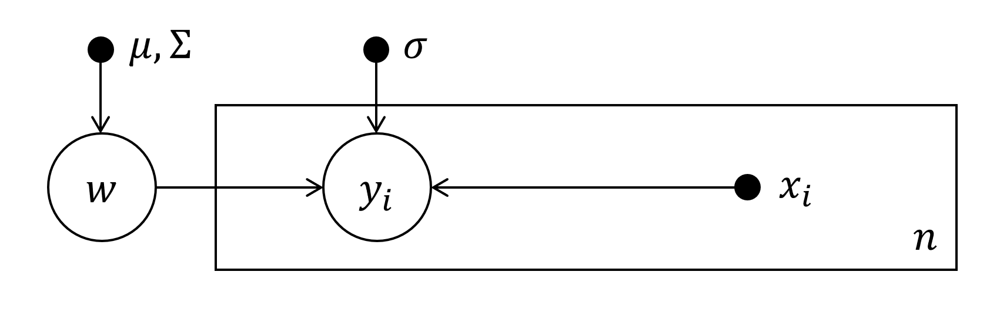

Probabilistic Machine Learning - Notes
Notes on the "Probabilistic Machine Learning" Lecture by Prof. Dr. Philipp Hennig from University of Tübingen Germany) 2020 / 2021. Lectures on YouTube © Philipp Hennig / University of Tübingen, 2020 CC BY-NC-SA 3.0. Lots of additional details can be found in the freely available book Gaussian Processes for Machine Learning by Rasmussen & Williams (2006). I personally also found the Statistics 260 Lecture by Michael Jordan at Berkeley EECS helpful, which I last checked 11-10-2022 (europ.).
Latest Changes: (europ.).
Notation
- External links are formatted as links and cross references are formatted as crossrefs. Other emphasized parts are emphasized.
- Note that lots of the rules for events on a probability space get generalized to random variables without further discussion, which can be found in introductory stochastic books. Additionally the notation of probability measures is often "abused", meaning shortened, by assuming that it is clear which part belongs to which random variable etc.
- If not stated otherwise $\Omega$ represents the "base"-set of some measurable space and $\Sigma$ represents the $\sigma$-algebra.
- Given a set of Variables $x_i, \ i\in I\subset \mathbb N$ the full "vector" of all $I$ variables is simply denoted by $x = (x_1,x_2, \dots)$. Subsets of this vector connected to subsets $K$ of $I$, i. e. $K\subset I$ are then denoted by $x_{K}$. Also $x_{I\setminus K}$ denotes the collection of all $x_i$ except the ones for $i \in K$.
- If not stated otherwise $A^C$ represents the complement relative to "base"-set of some measurable space $\Omega$, i. e. $A^C := \Omega\setminus A$.
- Probabilities of intersections will get abbreviated especially for random variables:
\begin{align*} P(A, B) := P(A\cap B) \, . \end{align*}
- If not stated otherwise $B_1,B_2,...\in \Sigma$ denotes a finite or countable infinite family of sets.
- If a random variable is called e. g. $X$, then the sufficient space on which it lives (mostly it will be some dimensional $\mathbb R^d$) gets shortly denoted by $\mathbb X$.
- The indicator function is used as
\begin{align*} 1_A(x) = \begin{cases} 0, & x\not \in A \\ 1, & x \in A \end{cases} \, . \end{align*}
- The Identity Matrix is denoted by a boldsymbol $\boldsymbol 1$ without further denoting the dimensions.
- Given a probability distribution $\mathcal P$ with parameters $\theta$, e. g. the normal distribution
$\mathcal N(\mu, \sigma^2)$ or the uniform distribution $U(a,b)$ and a random variable distributed accordingly
$X\sim \mathcal P(\theta)$. Then the density is denoted as
\begin{align*} P(X=x) =p(x) = \mathcal P(x; \theta)\, . \end{align*}
- The notation $\constwrt{x}$ represents terms which are constant with respect to (wrt.) $x$.
- If space is an issue, determinants of matrices get denoted as $\vert A \vert$. Elsewhere $\det A$ is used for clarity.
The Toolbox
Throughout the lecture and these notes we keep track of a "Toolbox" for Modelling- and Computation-Techniques. Directed Graphical Models are the first entry:
| Modelling Techniques | Computation Techniques |
Preface: A Short Primer on Measure Theory
- This short preface is not completely included in the actual lecture but there are notations from measure theory used, which are briefly introduced here, of course without going into details of topology (because of the authors incapacity to do so).
- $\boldsymbol\sigma$-Algebra / $\boldsymbol\sigma$-Field: Let $\Omega$ be some set and let $\mathcal P(\Omega)$ represent its power set. Then a subset $\Sigma \subset \mathcal P(\Omega)$ is called a $\sigma$-algebra if it satisfies the following three properties:
- $\Omega \in \Sigma$.
- Closeness under complementation: $A \in \Sigma \quad \Rightarrow \quad \Omega \setminus A$ is in $\Sigma$.
- Closeness under countable unions: $A_1, A_2, ...\in \Sigma \quad \Rightarrow \quad \bigcup A_i \in \Sigma$.
- Additional Properties of $\boldsymbol\sigma$-Algebra: The following properties can be derived from the three parts of the definition above:
- $\emptyset \in \Sigma$ for every $\sigma$-algebra $\Sigma$.
- $\bigcap A_i \in \Sigma$.
- Measurable Space: The pair $(\Omega, \Sigma)$ is called a measurable space and the elements of $\Sigma$ are called measurable sets.
- Measure: Let $\Omega$ be a set and $\Sigma$ a $\sigma$-algebra over $X$. A set function $\mu: \Sigma \to \mathbb R \cup \{-\infty, \infty\}$ is called a measure if it satisfies:
- Non-negativity: $\mu(A) \geq 0$ for all $A\in \Sigma$.
- Null empty set: $\mu(\emptyset) = 0$.
- Countable additivity ($\sigma$-additivity): For $A_1,A_2,...\in \Sigma$ pairwise disjoint ($A_i
\cap A_j =\emptyset $ if $i\neq j$) $\mu$ holds:
\begin{align*} \mu\left(\bigcup_{k=1}^\infty A_k \right) = \sum_{k=1}^\infty \mu(A_k)\, . \end{align*}
- Measure Space: The triplet $(\Omega, \Sigma, \mu)$ is called a measure space.
- "Measure Integral"-Notation: Given a measure space and $f: \Omega \to \mathbb R^d$. Then the following notation gets used to "measure" the function:
\begin{align*} \int_\Omega f(y) \, \mathrm d \mu(y)\, \cong \int_\Omega f(y)\mu(y)\, \mathrm dy\, . \end{align*}
- E. g. lets look at the Lebesgue Measure, which resembles the "classical" known integration technique on $\mathbb R^d$. Let $A \subset \mathbb R$. Then the Lebesgue measure $\lambda(A)$ is the Infimum of the summed lengths of all sequences of open subsets of $\mathbb R^d$ which contain $A$. Therefore at integration time one multiplies the function $f$ with a length of an interval, which leads to something really close to the known Riemann Integral from calculus.
- The arguably easiest measure to execute on a test function $f$ is the Dirac Measure: $\delta_x(A) = 1_A(x)$ such that:
\begin{align*} \int_\Omega f(y) \, \mathrm d\delta_x(y) = \int_\Omega f(y) \delta_x(y)\, \mathrm dy = f(x) \end{align*}
where in the second formulation the $\delta$-function has been used (which is not actually a function.)
Probability Theory
- Probability Measure: Let $(\Omega, \Sigma)$ be a measurable space. A probability measure $P$ is a measure with total measure $1$ meaning
\begin{align*} P(\Omega) = 1\, . \end{align*}
- Probability Space: A triplet $(\Omega, \Sigma, P)$ is called a probability space. $\Omega$ can then be interpreted as the set of all possible outcomes (atomic events) of an experiment. $A\in \Sigma$ can be interpreted as an event being a set of possible outcomes.
- A probability measures can be uniquely defined by defining $P(\omega)$ for all atomic events $\omega \in \Omega$.
- Additional Properties of Probability Measures: The definition of a probability measure implies the following:
- Intersections and Unions:
\begin{align*} P(A\cup B) = P(A) + P(B) - P(A\cap B)\, . \end{align*}
- Complements:
\begin{align*} P(A) = 1-P(A^C)\, . \end{align*}
- Let $B_1,B_2,...\in \Sigma$ pairwise disjoint, with $\bigcup B_i = \Omega$. Then
\begin{align*} P(A) = \sum_i P(A \cap B_i)\, . \end{align*}
- Conditional Probability: Let $A, B \in \Sigma$. Then the conditional probability of $A$ given $B$ is defined as
\begin{align*} P(B\vert A) := \frac{P(A, B)}{P(B)} \end{align*}
- This immediately yields the product rule:
\begin{align*} P(A, B) = P(A\vert B) \cdot P(B) = P(B\vert A) \cdot P(A)\, . \end{align*}
- Note that for multiple conditional probabilities we also have:
\begin{align*} P(A\vert B, C) = \frac{P(A, B, C)}{P(B, C)}\, . \end{align*}
- Law of Total Probability: Let $B_1, B_2, ... \in \Sigma$ ($n$ might be infinity) be a set of pairwise disjoint events with $\bigcup_iB_i=\Omega$. Then for each event $A$ it holds:
\begin{align} P(A) = \sum_i P(A\cap B_i) = \sum_n P(A\vert B_i)P(B_i) \, . \label{eq:total_prob} \end{align}
- Chain Rule of Probability: Let $A_i \in \Sigma$, $i=1,...,n$ be a set of events, then
\begin{align} P \left( \bigcap_{i=1}^n A_i \right) = \prod_k P\left( A_k \Big{\vert} \bigcap_{j=1}^{k-1}A_j \right) = P(A_n\vert A_{n-1} \cap ... \cap A_1) \cdot P(A_{n-1}\vert A_{n-2} \cap...\cap A_1) \cdot ... \cdot P(A_1) \label{eq:chain_prob} \end{align}
- Bayes Theorem and Bayesian Modelling - Using data $D$ and latent variable $X$ one denotes:
\begin{align} \underbrace{P(X\vert D)}_{\textsf{posterior for $X$ given $D$}} = \frac{\overbrace{P(D\vert X)}^{\textsf{likelihood for $X$}} \cdot\overbrace{P(X)}^{\textsf{prior for $X$}}}{\underbrace{P(D)}_{\textsf{evidence for the model}}} = \frac{P(X) \cdot P(D\vert X)}{\displaystyle\sum_{x\in \mathrm{supp}(X)} P(X)\cdot P(D\vert X)} \, . \label{eq:bayes} \end{align}
- When found a posterior distribution of the model parameters one can use this distribution to sample sets of parameters. Using these sampled parameters one can go on to sample additional data-predictions which are drawn from the predictive distribution $P(D\vert X)$ for given parameters $X$. Iterating these steps lead a so called Posterior Predictive Function for new data. This might be necessary, if the posterior integral is intractable.
- Bayes Theorem implications:
- Constant Likelihoods do not provide any information.
- A very unlikely hypothesis can become dominant if it is the only one explaining the data well.
- No data can revive an a priori impossible hypothesis.
- Additional evidence may force you to reconsider your prior.
- The hypothesis space has to contain some explanation for the data.
- The $\sigma$-algebra not the exact choice of $P(D)$ is often the most important prior assumption.
- Probabilistic reasoning is a mechanism, it does not replace creativity.
Random Variables
- When moving from boolean logic to probability one has to take care of the probability of all atomic events, which already for simple examples need huge amount of memory $(2^{26}-1$ floats for "storing" the alphabet).
- Being uncertain is potentially much more expensive in terms of computation and memory than simply committing to a single hypothesis. This is the key challenge of probabilistic reasoning in practice.
- Inverse Image: Let $X:\Omega \to \X$. The preimage or inverse image of a set $B\subset \X$ under $X$, denoted by $X^{-1}(B)$ is the subset of $X$ defined by
\begin{align*} X^{-1}(B) = \big\{ \omega \in \Omega : X(\omega) \in B \big\} \, . \end{align*}
- Measurable Functions and Random Variables: Let $(\Omega, \Sigma)$ and $(\X, \Xi)$ be two measurable spaces. A function $X:\Omega \to \X$ is called measurable if $X^{-1}(B) \in \Sigma$ for all $B \in \Xi$. If there is, additionally, a probability measure $P$ on $(\Omega, \Sigma)$, then $X$ is called a random variable.
- Distribution Measure: Let $X:\Omega \to \X$ be a random variable. Then the distribution measure (or law) $P_X$ of $X$ is defined for any $B \in \Xi$ as
\begin{align*} P_X(B) = P(X\in B) = P\left( X^{-1}(B) \right) = P\big( \{\omega \, \vert \, X(\omega)\, \in B\} \big)\, . \end{align*}
- Support of a RV: The support of a RV is given by the set of elements of $\X$ where the probability of
$X$ is not zero:
\begin{align*} \mathrm{supp}\, X = \big\{ x\in \X \ \vert \ P_X(\{x\}) \neq 0 \big\}\, . \end{align*}
Note that $\X$ can sometimes be already defined as being equal to $\mathrm{supp}\, X$ because points with no probability are irrelevant for modelling.
- Abusing Notations: This is where the abuse of notation comes in. When $X$ represents a random variable $P(X)$ implicitly represents the distribution measure of $X$. This is also used for defining "junctions" and "unions" of random variables: For junctions of random variables the following notation is used:
\begin{align*} P(X, Y) = P(X\in B, Y \in C) = P\Big( \{\omega \, \vert \, X(\omega)\, \in B\} \cap \{\omega \, \vert \, Y(\omega)\, \in C\} \Big) \, . \end{align*}
- Independence: Using the definitions from above one can apply the concepts of conditional (in)dependence directly to RVs. Two RVs $X$ and $Y$ are therefore called independent if
\begin{align*} P(X, Y) = P(X)\cdot P(Y)\, . \end{align*}
- Joint and Marginal Distributions: The joint distribution of multiple RVs $X=(X_1,X_2, \dots)$ where the indices are in $I\subset \N$ is
\begin{align*} P(X) = P(X_1,X_2, \dots)\, . \end{align*}The marginal distribution of a subset $K\subset I$ is given by integrating out all other variables:\begin{align*} \mathcal P (x_K) = \int \mathcal P (x) \, \d x_{I\setminus K} \end{align*}
- Conditional Independence: Two RVs $X$ and $Y$ are conditionally independent given RV $Z$, iff their conditional distribution factorizes:
\begin{align*} P(X, Y \vert Z) = P(X\vert Z) \cdot P(Y\vert Z) \quad \overset{(I)}{ \Rightarrow} \quad P(X \vert Y, Z) = P(X \vert Z) \end{align*}
i. e. "given information about $Z$, $Y$ does not provide any further information about $X$." A common notation is:
- Calculation of the implication $(I)$: Let $X, Y, Z$ be RVs with $P(X, Y \vert Z) = P(X\vert Z) \cdot P(Y\vert Z)$. Then:
\begin{align*} P(X\vert Y, Z) = \frac{P(X, Y, Z)}{P(Y, Z)} = \frac{P(X, Y, Z)}{P(Z)} \cdot \left( \frac{P(Y, Z)}{P(Z)} \right)^{-1} = P(X, Y\vert Z) \cdot \frac{1}{P(Y\vert Z)} = P(X\vert Z)\, . \end{align*}
- Independence (Assumptions) can help tremendously to simplify probabilistic models (Burglary, Alarm, Earthquake example from the lecture)
- Inference in the Bayesian framework consists of:
- Identify all relevant variables.
- Define the joint probability for the generative model
- Mechanically using Bayes Theorem and computing marginals.
- Directed Graphical Models: Directed Graphical Models are models of probabilistic settings where the factorization of a joint probability can be represented by a Directed Acyclic Graph (DAG). To present these a pictorial view is helpful and can be found in the lecture.
- Directed Graphical Model (DGM) aka. Bayesian network: A DGM is a probability distribution over variables
$\{X_1,\dots , X_D\}$ that can be written as
\begin{align*} P(X_1, X_2, \dots X_D) = \prod_{i=1}^D p(X_i\vert \mathrm{pa}(X_i)) \, , \end{align*}where $\mathrm{pa}(X_i)$ are the parental variables of $X_i$. A DGM can be represented by a Directed Acyclic Graph (DAG) with the propositional variables as nodes and arrows from parents to children.
- An example of such a model in a pictorial view is:
In this case e. g. $\mathrm{pa}(D) = \{ A, B, C \}$ and $\mathrm{pa}(A) = \emptyset$. The full model becomes:
\begin{align*} P(A, B, C, D) = P(D\vert A, B, C)\cdot P(C\vert B, D)\cdot P(A)\cdot P(B) \end{align*}
- Note that the arrows indicate conditional dependence not causality. The independence structure might often be more nuanced, than the DAG suggests.
- There is more to follow on DGMs later.
\begin{align*}
X \indep Y \vert Z\, .
\end{align*}

{kind=link}
| Model | Computation Technique |
| Directed Graphical Models (representable by a DAG) |
Continuous Random Variables
- To model continuous random variables one need continuous spaces as $\Omega$ such as $\Omega = \mathbb R^d$. In such spaces it can be shown that not all sets are measurable. To resolve this problem on uses the notion of Topologies which resemble $\sigma$-fields and introduces the so called Borel Algebra which serves as a $\sigma$-algebra for probability modelling.
- Topology: Let $\Omega$ be a space and $\tau$ be a collection of sets. $\tau$ is called a topology on $\Omega$ if
- $\Omega \in \tau$ and $\emptyset \in \tau$.
- Any union of elements of $\tau$ is in $\tau$.
- Any intersection of finitely many elements of $\tau$ is in $\tau$.
- Borel Algebra: Let $(\Omega, \tau)$ be a topological space. The Borel $\sigma$-algebra is the $\sigma$-algebra generated by $\tau$. That is by taking $\tau$ and completing it to include infinite intersections of elements from $\tau$ and all components in $\Omega$ to elements of $\tau$. The Borel algebra sometimes gets denoted by $\mathcal B$ and indeed $(\mathbb R^d, \mathcal B)$ is yet again, a measurable space.
- Probability Density Function (PDF): Let $P$ be a probability measure on $(\mathbb R^d, \mathcal B)$.
$P$ ha the density $p$ if $p$ is a non-negative (Borel-) measurable function on $\mathbb R^d$ satisfying
\begin{align*} P(B) = \int_B p(x)\, \mathrm dx = \int_B p(x)\, \mathrm dx_1\dots \mathrm dx_d \quad \forall \quad B\in \mathcal B\, . \end{align*}
- Cumulative Distribution Function (CDF): For probability measure $P$ on $(\mathbb R^d, \mathcal B)$ the cumulative distribution function is the function
\begin{align*} F(x) = P\left(\prod_{i=1}^d (X_i < x_i)\right )\, . \end{align*}If $F$ is sufficiently smooth, then $P$ has a density, given by\begin{align*} p(x) = \partial^d F\vert_x := \frac{\partial^d F}{\partial x_1 \dots \partial x_d} \Big \vert_x\, . \end{align*}
- Rules for Continuous Random Variables: The rules and notations of discrete random variables can be transferred to continuous random variables mainly by transferring sums to integrals:
- For probability densities $p$ on $(\mathbb R^d, \mathcal B)$ is always holds:
\begin{align*} P(\mathbb R^d) = \int_{\mathbb R^d} p(x) \, \mathrm dx = 1 \end{align*}
- Let $X=(V, W)$ be a random variable with density $p_X$. Then the marginal density of $V$ (analogous for $W$) is given by the sum rule:
\begin{align*} p_V(v) = \int_{\mathbb W} p_X(v, w)\, \mathrm dw\, . \end{align*}
- The conditional density $p(x\vert y)$ (for $p(y) > 0$) is given by the product rule and can be rewritten using Bayes Theorem:
\begin{align*} p(x\vert y) = \frac{p(x, y)}{p(y)} = \frac{p(x)\cdot p(y\vert x)}{\int_{\mathbb X} p(x) \cdot p(y\vert x)\, \mathrm dx}\, . \end{align*}
- Transformation Theorem for PDFs (Omitting some mathematical constraints): Let $X$ be a RV with a PDF $f^X(x)$ and let $\Phi$ be a differentiable mapping. Let $\mathrm D\Phi$ be the Jacobian of $\Phi$ and let the RV $Y$ be $Y = \Phi(X)$ with PDF $f^Y(y)$. Then
\begin{align*} f^Y(y) = \frac{f^X\big( \Phi^{-1} (y)\big)}{\Big \vert \mathrm D \Phi \big( \Phi^{-1}(y) \big) \Big \vert} \, . \end{align*}
- A special and very easy case for this is the Convolution of two RVs. Let $X$ and $Y$ be two independent RVs with PDFs $f^X$ and $f^Y$ and $Z = X+Y$ which yields:
\begin{align*} P(Z=z) = \int_\mathbb R f^X(z-y)f^Y(y) \, \mathrm dy \end{align*}
- Example of a probabilistic inference scheme: For the proportion of people wearing glasses given a sample $X$ and using a uniform prior for the true probability $\pi$ for wearing glasses and
\begin{align*} P(X_i = 1\vert \pi)=\pi \ \ \Rightarrow \ \ P(X_i=0\vert \pi)=1-\pi \, , \end{align*}which leads for a Beta-Distribution for the Posterior:\begin{align*} P(\pi \vert X) = B(n-1,m-1)^{-1}\pi^n(1-\pi)^m\, , \end{align*}when observing a sample with $n$ positive results (wearing glasses) and $m=N-n$ negative results. This actual results for all $\beta$-distributed priors.
- Note that Discrete RVs can be viewed as a special case of Continuous RVs using the Dirac-Measure. A Discrete RV $X$ with $P(X=x) = p_x$ can be described as a continuous RV using the PDF:
\begin{align*} \mathcal P(x) = \sum_{y \, \in\, \mathrm{supp}\, X} p_y \delta(x-y) \, . \end{align*}For this reason sometimes when denoting properties of RVs in general, one sometimes sticks to using the integral notation for continuous RVs. This can also be interpreted in context of measure theory.
Expectations
- Expectation of a Function: Given some RV $X \in \X$ with PDF $\mathcal P(x)$. The Expectation of a function $f: \X \to \mathbb F$ is given by:
\begin{align*} \E_\mathcal P [f] := \int f(x) \, \d \mathcal P(x) = \cases{ \displaystyle\int f(x)\mathcal P(x) \, \d x , & \textsf{continuous RV} \\ \displaystyle\sum_{x\, \in \, \mathrm{supp}\, X} f(x)\mathcal P(x), & \textsf{discrete RV} } \, . \end{align*}Another notation for expectation is using angle-brackets:\begin{align*} \langle f\rangle_\mathcal P = \E_p[f] \, . \end{align*}
- Mean: The Mean is the expectation of the identity function $x\to x$:
\begin{align*} \E[X] = \int x \, \d \mathcal P(x) \, . \end{align*}
- Variance: The Variance is the expectation of the quadratic deviation from the mean:
\begin{align*} \mathrm{Var}\, X = \E\left[(X-\E X)^2\right] =\dots = \E\left[X^2\right] - \E X^2 \, . \end{align*}
- Moments: The $p$-th moment of a RV $X$ is the expectation $\E[x^p]$.
- Entropy: The entropy is the expectation of $f(x)=-\log x$.
Monte Carlo Method
- Monte Carlo Method: Idea: draw a "sample" (or just "sample") a number of $S$ values for $x_s\sim p(x)$ to solve:
\begin{align*} \int f(x)p(x) \, \mathrm d x \approx \frac{1}{S}\sum_{s=1}^S f(x_s) \quad \textsf{and} \quad \int p(x,y) \ \mathrm dx \approx \sum_s p(y\vert x_s )\, . \end{align*}
- Let $\phi = \int f(x)p(x) \, \mathrm d x = \mathbb E_p [f]$. let $x_s \sim p, \ s=1,..., S$ be iid. Then the
Monte Carlo estimator for $\phi$ is given by:
\begin{align*} \hat \phi = \frac{1}{S} \sum_{s=1}^S f(x_s)\, . \end{align*}
- The Monte Carlo estimator is an unbiased estimator, meaning $\mathbb E [\hat \phi] = \phi$.
- The variance of the MC-Estimator drops as $\mathcal O(S^{-1})$:
\begin{align*} \var \hat \phi = S^{-1}\mathrm{Var}(f) \, . \end{align*}
- To achieve really high precision in terms of the standard deviation $\sigma_{\hat \phi} = \sqrt{\mathrm{Var}(\hat \phi)}$ one needs the doubled order of magnitude in sample size, which makes plain MC estimation pretty inefficient.
Sampling by Transformation
- Still the open question remains: How to generate random samples from $\boldsymbol{p(x)}$?
- One can sample from the uniform distribution $U(0,1)$ pretty decent computationally using Pseudorandom Number Generators.
- Sampling by Transformation: Given that $U \sim U(0,1)$ and $X\sim P_X$ with CDF $F(x)$, then $F^{-1}(U)$ is distributed according to $P_X$.
- Example: The exponential distribution $\mathrm{Exp}(\lambda)$ for which $F(x; \lambda) = P(X \leq x;
\lambda) = 1 - e^{-\lambda x}$ with $F^{-1}(y; \lambda) = -\log (y) / \lambda$:
\begin{align*} P\big (F^{-1}(U; \lambda) \leq u\big ) &= P\left( -\frac{\log U}{\lambda} \leq u \right) = P \left( U \geq e^{-\lambda u} \right) = 1 - P \left( U < e^{-\lambda u} \right) \\ &=1 -\int_0^{e^{-\lambda u}} 1\,\mathrm d t=1 - e^{-\lambda u} \, . \end{align*}
Rejection Sampling
- But what to do if we do not know a good transformation?
- What makes sampling hard, is that we need to know the cumulative density everywhere, i.e. a global description of the entire function.
- Practical Monte Carlo Methods aim to construct samples from $p(x) = \tilde p(x) / Z$ assuming that it is possible to evaluate the unnormalized density $\tilde p$ at arbitrary points. Typical example: Compute moments of a posterior:
\begin{align*} p(x\vert D) = \frac{p(D\vert x)p(x)}{\int P(D, x)\mathrm d x} \qquad \textsf{as} \qquad E_{p(x\vert D)}[x^n] \approx \frac{1}{S}\sum_S s_i^n \quad \textsf{with} \ x_i\sim p(x\vert D) \, . \end{align*}
- One possibility to realize that is Rejection Sampling: We want so sample from $p(x) = \tilde p(x) / Z$ which is given up to a constant $Z$. Therefore choose $q(x)$ s. t. $cq(x) \geq \tilde p(x)$ for a fixed $c>0$ and draw $s \sim q(s)$ and $u \sim U(0, cq(s))$. Then accept $s$ to the sample if $u \leq \tilde p(s)$ and reject if $u > \tilde p(s)$.
- This works because:
\begin{align*} P(s\vert u \leq \tilde p (s)) = \frac{P(s, u\leq \tilde p(s))}{P(u\leq \tilde p(s))} = \frac{P(u\leq \tilde p(s) \vert s)P(s)}{P(u\leq \tilde p(s))} = \frac{\tilde p(s)}{cq(s)} \left( \int q(t)\frac{\tilde p(t)}{cq(t)} \, \mathrm dt \right)^{-1} q(s) = p(s)\, . \end{align*}
- Rejection sampling gets very inefficient, if large values of $c$ are needed - especially in higher dimensions (see gaussian example where $c=(\sigma_q / \sigma_p)^D$.
Importance Sampling
- For the next method the Expectation Rewrite-Trick is needed. Suppose a PDF $p(x)$ and a function
$f(x)$ with the expectation $\mathbb E_p[f] = \int f(x)p(x) \, \mathrm dx$ (works also in the discrete case) is to be calculated. Assume another PDF $q(x)$. Then this can be rewritten:
\begin{align*} \mathbb E_p[f] = \int f(x)p(x) \, \mathrm dx = \int q(x) \cdot f(x)\frac{p(x)}{q(x)} \, \mathrm dx = \mathbb E_q \left[ f\cdot \frac{p}{q} \right] \end{align*}
- The latter expectation $\mathbb E_q$ can then be estimated using e.g. MC sampling, meaning reducing it to a sum: $\mathbb E_q[h] \approx S^{-1}\sum_s h(x_s), \ x_s \sim q(x)$.
- An improved version of Rejection Sampling is Importance Sampling: Assume $q(x) > 0$ if $p(x) >0$. Then use the following estimator for a function $f$ (which is the goal of sampling):
\begin{align*} \phi &= \int f(x)p(x) \, \mathrm dx = \frac{1}{Z} \int f(x) \frac{\tilde p(x)}{q(x)}q(x) \, \mathrm dx \overset{\textsf{MC}}{\approx} \frac{1}{S} \sum_s f(x_s) \frac{\tilde p(x_s)/q(x_s)}{\frac{1}{S}\sum_{s'} \tilde p (x_s) / q(x_s) } \\ &=: \sum_s f(x_s) \tilde{w}_s, \quad x_s \sim q(x) \end{align*}
- Note that with unknown $Z$ this is not an unbiased estimator anymore. To estimate $Z$ we used the expectation rewrite-tick on $f=1$ which yields $1 = \mathbb E_p[1] = \mathbb E_q [ p / q ] = E_q[ \tilde p / q] \cdot Z^{-1}$ which ca easily be solved for $Z$. If $Z$ is known this formula can be further simplified leading to replace $\tilde w_s$ with $w_s = p(x_s) / q(x_s)$.
- A flaw of importance sampling is, that $\mathrm{Var}(f\cdot p/q)$, which is important for the convergence rate of this procedure, can be unbounded, because $p(x)/q(x)$ might get very big for small $q(x)$.
Markov Chain Monte Carlo Methods
- Definition of Markov Chains: Let $X$ be a sequence of RVs with a joint distribution $p(x_1, ..., x_N)$. Then this sequence is called a Markov chain, iff the joint PDF obeys the Markov property, i.e.
\begin{align*} p(x_i \vert x_1,...,x_2,...,x_{i-1}) = p(x_i\vert x_{i-1})\, . \end{align*}
- The idea of Markov Chain Monte Carlo (MCMC) sampling is to instead of drawing independently from $p$ to draw conditional on the previous example. This might enable us to "concentrate" on regions of $p$ with high probability and therefore leading to less "rejections" in the image of rejection sampling, i.e. it should be more likely to draw samples from areas where $p(x)$ is high.
- An algorithm must the Detailed Balance Condition: The detailed balance condition states that the algorithm reaches a stationary point of the process of drawing random numbers conditionally. It is:
\begin{align*} p(x)T(x\to x') = p(x')T(x' \to x)\, , \end{align*}where $T(x_1\to x_2)$ is the probability of going from $x_1$ to $x_2$. This is sufficient to assume, that if once $p(x)$ is "reached", all following samples will also be from $p(x)$:\begin{align*} \int p(x) T(x\to x')\, \mathrm dx = \int p(x')T(x\to x') \, \mathrm dx = p(x') \int T(x'\to x) \, \mathrm dx = p(x')\, . \end{align*}In the last step we use, that the transition probability must integrate to $1$ (i.e. some point must be reached).
The Metropolis-Hastings Method
- The Metropolis-Hastings Method: We want to find samples of an (unnormalized) distribution $\tilde p(x)$. Therefore one can follow the following procedure:
- Given a current sample instance $x_t$, draw a proposal $x'\sim q(x' \vert x_t)$ from a distribution $q$ - e.g. $q(x'\vert x_t) = \mathcal N (x';x_t, \sigma^2)$.
- Evaluate the quotient
\begin{align*} a(x', x_t) := \frac{\tilde p(x')}{\tilde p(x_t)} \cdot \frac{q(x_t \vert x')}{q(x'\vert x_t)}\, . \end{align*}
- If $a \geq 1$ accept: $x_{t+1} \leftarrow x'$.
- Else:
- Accept with probability $a$: $\quad x_{t+1} \leftarrow x'$
- Stay with probability $1-a$: $\quad x_{t+1} \leftarrow x_t$
- To show that the detailed balance condition holds for this algorithm plug in
\begin{align*} T(x \to x') = q(x'\vert x) \min \big\{ 1, a(x', x)\big\} \end{align*}
into the detailed balance condition and use that $y \cdot \min\{a,b\} = \min\{ya, yb\}$ if $y > 0$.
- There exist mathematical arguments for existence and uniqueness of the stationary distribution of an MCMC.
- Mixing Problem: Choosing the parameter $\sigma$ of $q$ is not trivial and there is a tradeoff between lots of acceptances and coverage of the complete probability mass of $p$.
- In practice MCMCs are use local operations so they do not have to deal with this problem too much. Therefore the local behavior has to be tuned. One algorithm to address this problem is Gibbs Sampling:
Gibbs Sampling
-
Gibbs Sampling: In Gibbs Sampling one assumes that for a multivariate RV $x=(x_1,...,x_n)$ there exists index sets $I \subset \{1,...,n\}=:N$ for which:
\begin{align*} x_t \leftarrow x_{t-1}; \quad x_{t,I} \sim p(x_{t, I} \vert x_{t, N\setminus I})\, . \end{align*}The algorithm then looks like:
- Given a current sample instance $x_t$, draw a proposal $x'\sim q(x' \vert x_t)$ from
\begin{align*} q(x'\vert x_t) = \delta(x'_{N\setminus I} - x_{t, N\setminus I})\cdot p(x_i'\vert x_{t, N\setminus I}) \end{align*}
- Use the assumption about $x_{t, I}$ to calculate
\begin{align*} p(x') = p(x_I'\vert x'_{N\setminus I}) \cdot p(x_{N\setminus I}')=p(x_I'\vert x_{t, N\setminus I}) \cdot p(x_{t, N\setminus I}) \, , \end{align*}where the latter equality holds because we only update $x_I$ in this step.
- Plugging everything in the formula for $a$ of the Metropolis-Hastings algorithm and using the properties of the $\delta$-distribution $\delta(a-b)=\delta(b-a)$ one observes that $a=1$ always holds, thus the update is always executed.
- Continue with the rest of $N\setminus I$ and add $x'$ to the sample when all $N$ indices have been updated.
- Given a current sample instance $x_t$, draw a proposal $x'\sim q(x' \vert x_t)$ from
- In practice this resembles updating all the dimensions after each other and adding a new point to the sample when every dimension has been updated. To work well, it is necessary, to align the PDF as much to the axes as possible.
- Gibbs sampling will later be applied to Latent Dirichlet Allocation.
Hamiltonian Monte Carlo Methods
- Hamiltonian Monte Carlo (HMC): Hamiltonian Monte Carlo Methods aim - like Gibbs Sampling - at modelling the problem in such a way, that $a=1$. There is some amount of theory necessary to understand it though. Looking at the situation through the lens of physics what is actually done can be interpreted as "moving" $x$ through the space as it was driven by a potential energy which is to be constructed from the $p(x)$:
- Lets consider Boltzmann distributions, i.e. distributions which can be written as
\begin{align*} P(x) = \frac{1}{Z} \exp \big( -E(x)\big) \qquad \textsf{with a normalizing constant $Z$} \end{align*}
which is actually a rather weak assumption because using $\log(.)$ lots of distributions can be rewritten in this way.
- Next augment the state-space by an auxiliary momentum variable $p = \dot x$ and define a
Hamiltonian, which resembles the sum of potential and kinetic energy, via:
\begin{align*} H(x, p) := E(x) + K(p) \qquad \textsf{with e.g.}\ K(p) = \frac{1}{2}p^Tp \, . \end{align*}The case $K(p)=p^Tp/2$ resembles classical, non-relativistic kinetic energy. Note that $K(p)$ must only be dependent of quadratic terms in $p$ (i.e. $p^Tp$) for the dynamics to be time-reversible.
- Now perform Metropolis-Hastings procedures to the joint distribution of $p$ and $x$ which is given by
\begin{align*} P_H(x,p)=\frac{1}{Z_H} \exp\big(-H(x,p)\big) = \frac{1}{Z_H} e^{-E(x)}\cdot e^{-K(p)} \end{align*}and use that the laws of Hamiltonian Mechanics provide a coupling between $p$ and $x$ given by the Hamilton Equations namely:\begin{align*} \dot x = \frac{\partial H}{\partial p} \, , \qquad \textsf{and} \qquad \dot p = - \frac{\partial H}{\partial x}\, . \end{align*}This assures that $H$ is actually a constant w.r.t. time:\begin{align*} \frac{\mathrm dH}{\mathrm dt} = \frac{\partial H}{\partial x} \frac{\partial x}{\partial t} + \frac{\partial H}{\partial p}\frac{\partial p}{\partial t} = 0 \, . \end{align*}This assures that $\boldsymbol{P_H(x',p')=P_H(x,p)}$ for the Metropolis-Hastings procedure when interpreting the Markov Chain steps as time steps.
- The proposal-part of the algorithm is thereby practically omitted, because generating a sample $(x', y')$ by time propagation given by $H$ is already the proposal of a new point. The dynamics of such a system are time-reversible (see here), which resembles the Detailed Balance Condition to be fulfilled.
- Because the distribution $P_H(x,p)$ factorizes to $P_H(x,p) = P_E(x)P_K(p)$ we are now able to sample from
$P_E(x)=p(x)$ with accepting each proposal by the cost of solving an ordinary differential equation (ODE) of the first order namely
\begin{align*} \frac{\mathrm d}{\mathrm dt} \begin{pmatrix} x(t) \\ y(t) \end{pmatrix} = \begin{pmatrix} p(t) \\ -\nabla_x E(x(t)) \end{pmatrix} \end{align*}which can be done numerically with pretty high precision (see e.g. Runge-Kutta Methods). However computing these numerically introduces some "noise" to the process and forces us to keep a decision rule as before (see e.g. Vishnoi, 2021).
- HMC has the flaw of needing us to set the step size of the ODE-integrator and the number of steps which should be propagated before a new sample is fixed. Especially with too big step sizes (but also with to long integration) the dynamics tend to move back and forth through the parameter-space and end up ending close to the start point. This is called the U-Turn Problem, which can be further addressed (e.g. see Hoffman and Gelman, 2011).
| Model | Computation Technique |
| Directed Graphical Models (representable by a DAG) | Monte Carlo Sampling and extensions |
The Gaussian Distribution
- Univariate Gaussian Distribution: Let $X$ be gaussian distributed with mean $\mu$ and Variance
$\sigma^2$, i.e. $X\sim \mathcal N (\mu, \sigma^2)$ then its PDF is given by:
\begin{align*} \mathcal N (x; \mu, \sigma^2)=\frac{1}{\sigma\sqrt{2\pi}} \exp \left(-\frac{(x-\mu)^2}{2\sigma^2}\right) \, . \end{align*}
- Closeness under multiplication: The product of two gaussian PDFs is still a gaussian PDF, therefore it is convenient to set up a model assuming $X\sim \mathcal N (\mu, \sigma^2)$ and $Y\vert X\sim \mathcal N(x,\nu^2)$ because then it follows:
\begin{align*} X \vert Y \sim \mathcal N(m, s^2) \qquad \textsf{with} \quad s^2 = \frac{1}{\sigma^{-2}+\nu^{-2}}, \quad m = \frac{\sigma^{-2}\mu + \nu^{-2}y}{\sigma^{-2}+\nu^{-2}}\, , \end{align*}which can easily be extended to $Y$ consisting of iid samples $Y_1, ..., Y_n$. For parameter estimation it is then useful to rewrite the above terms to $s^{-2}$ and $s^{-2}m$ because then estimation can be done via summation of the so called sufficient statistics of this problem, namely $\sum_i \nu_i^{-2}$ and $\sum_i \nu_i^{-2}y_i$.
- Multivariate Gaussian Distribution: Let $X$ be gaussian distributed with mean $\mu \in \mathbb R^{n}$ and Covariance-Matrix $\Sigma\in \mathbb R^{n\times n}$ which is symmetric and positive definite (therefore invertible), i.e. $X\sim \mathcal N (\mu, \Sigma)$ then its PDF is given by:
\begin{align*} \mathcal N(x; \mu, \Sigma)=\frac{1}{(2\pi)^{n/2}\vert \Sigma \vert^{1/2}} \exp \left(-\frac{1}{2} (x-\mu)^T\Sigma^{-1}(x-\mu) \right) \, . \end{align*}
- Algebraic Trick: The Gaussian PDF obeys the following algebraic rule, which can be useful when solving Integrals to leverage the normalization condition:
\begin{align*} \mathcal N(a; b, C) = \mathcal N(b; a, C)\, . \end{align*}
- Product of two Gaussian distributions: One gets:
\begin{align} \mathcal N(x; a, A) \cdot \mathcal N(x; b, B) = \mathcal N(x; c, C)\cdot Z \quad \textsf{with} \quad C=(A^{-1}+B^{-1})^{-1} \, ,\ \ c = C(A^{-1}a+B^{-1}b)\, , \ \ Z=\mathcal N(a; b, A+B) \, . \label{eq:gauss_prod} \end{align}This leads to an analogous implication as stated corresponding to "closeness" above. Combining this (exactly: that $Z$ is normalized) with the algebraic trick from above this also yields:\begin{align*} \int \mathcal N(y; Qx, \Sigma) \cdot \mathcal N(x; \mu, \Lambda) \, \mathrm dx = \mathcal N (y; Q\mu, Q\Lambda Q^T + \Sigma)\, . \end{align*}
- Affine Transformations of Gaussians: Transform a RV $X$ by $AX+b$ where $A$ is a matrix of necessary size, one gets:
\begin{align*} AX+b \sim \mathcal N (A\mu+b, A\Sigma A^T) \, . \end{align*}
- The Central Limit Theorem states that for a lot of distributions $D(\theta)$ (which have to obey certain criterions) the sum of iid $X_i \sim D(\theta)$ is normally distributed. This is the reason why in nature many observables are indeed gaussian distributed when measured.
- Maximum Entropy: Of all probability distributions over $\mathbb R$ with a specified mean $\mu$ and variance $\sigma^2$, the normal distribution $\mathcal N(\mu, \sigma^2)$ is the one with maximum entropy $H=\int p(x) \log p(x) \, \mathrm dx$. Given some knowledge of variational calculus the proof for this property is surprisingly straightforward (see it incomplete on Wikipedia).
- Besides the two reasons above, the Gaussian Distribution is also widely used because of its nice properties according conditionals and marginals.
- Matrix Inversion and Determinant Lemma: When working with multivariate gaussian distributions two very useful results from Linear Algebra are:
\begin{align*} \big(Z+UWV^T \big)^{-1} &= Z^{-1} - Z^{-1} U \big(W^{-1}+V^TZ^{-1}U\big)^{-1}V^TZ^{-1} \\ \big\vert Z+UWV^T \big\vert &= \vert Z\vert \cdot \vert W\vert \cdot \big\vert W^{-1} + V^T Z^{-1}U\big\vert\, . \end{align*}
- Block Matrix Inversion: For inverting block covariance matrices also the following property from Linear Algebra is useful. If $P$ and $M$ (see below) are invertible then:
\begin{align*} A = \begin{pmatrix} P & Q \\ R & S \end{pmatrix} \, , \quad M:= \big(S-RP^{-1}Q\big)^{-1} \qquad \Rightarrow \qquad A^{-1} = \begin{pmatrix} P^{-1}+P^{-1} Q M R P^{-1} & -P^{-1}QM \\ -M R P^{-1} & M \end{pmatrix} \end{align*}There exist different forms if instead of $P$ one of the other three blocks is invertible but they can be transformed into each other by using equations of the form\begin{align*} \begin{pmatrix} 0 & \boldsymbol 1 \\ \boldsymbol 1 & 0 \end{pmatrix} \cdot \begin{pmatrix} S & R \\ Q & P \end{pmatrix} \cdot \begin{pmatrix} 0 & \boldsymbol 1 \\ \boldsymbol 1 & 0 \end{pmatrix} = \begin{pmatrix} P & Q \\ R & S \end{pmatrix} \, . \end{align*}To calculate the inverse then calculate the inverse of the left side and use $(ABC)^{-1} = C^{-1}B^{-1}A^{-1}$ with.\begin{align*} \begin{pmatrix} 0 & \boldsymbol 1 \\ \boldsymbol 1 & 0 \end{pmatrix}^{-1} = \begin{pmatrix} 0 & \boldsymbol 1 \\ \boldsymbol 1 & 0 \end{pmatrix} \, . \end{align*}
- The last two properties can be used to derive the following "theorems" (although they are not formulated as proper theorems here 😉).
- Marginals of a Gaussian: The marginal of a gaussian distribution is again a gaussian distribution, i.e. (full derivation):
\begin{align*} Z = \begin{pmatrix} X_1 \\ X_2 \end{pmatrix} \sim \mathcal{N} \left[ \begin{pmatrix} \mu_1 \\ \mu_2 \end{pmatrix} , \begin{pmatrix} \Sigma_{11} & \Sigma_{12} \\ \Sigma_{21} & \Sigma_{22} \end{pmatrix} \right] \qquad \Rightarrow \qquad X_1 \sim \mathcal N(\mu_1, \Sigma_{11}) \end{align*}
- Conditionals of a Gaussian: The conditional of a gaussian distribution is again a gaussian distribution, i.e. (full derivation):
\begin{align}\begin{split} Z = \begin{pmatrix} X_1 \\ X_2 \end{pmatrix} \sim \mathcal{N} \left[ \begin{pmatrix} \mu_1 \\ \mu_2 \end{pmatrix} , \begin{pmatrix} \Sigma_{11} & \Sigma_{12} \\ \Sigma_{21} & \Sigma_{22} \end{pmatrix} \right] \qquad \Rightarrow \qquad X_1\vert X_2=a \sim \mathcal N \Big( \underbrace{\mu_1 + \Sigma_{12}\Sigma_{22}^{-1}(a-\mu_2)}_{\mu_{1\vert 2}}, \ \ \underbrace{\Sigma_{11}-\Sigma_{12}\Sigma_{22}^{-1} \Sigma_{21}}_{\Sigma_{1\vert 2}} \Big) \end{split} \label{eq:conditionals_gaussian} \end{align}with a special case being $X_2 = AX_1$:\begin{align*} X\vert AX=a \sim \mathcal N\Big( \mu + \Sigma A^T (A\Sigma A^T)^{-1}(a-A\mu), \ \ \Sigma - \Sigma A^T (A\Sigma A^T)^{-1}A\Sigma \Big) \end{align*}
- Bayesian Inference with Gaussians:
- Using the two rules above one can summarize: If $X \sim \mathcal N(\mu, \Sigma)$ and $Y\vert X=x \sim
\mathcal N(Ax+b, \Lambda)$, then
\begin{align}\begin{split} Y &\sim \mathcal N\Big(A\mu + b, \ \ \Lambda + A\Sigma A^T\Big) \qquad \textsf{and} \\ X\vert Y=y &\sim \mathcal N \Big( \mu + \underbrace{\Sigma A^T \big( A\Sigma A^T + \Lambda^{-1}\big)^{-1}}_{\textsf{gain}} \underbrace{\big(y - (A\mu +b)\big)}_{\textsf{residual}} , \ \ \Sigma - \Sigma A^T \big(\underbrace{A\Sigma A^T + \Lambda}_{\textsf{Gram matrix}}\big)^{-1} A\Sigma \Big) \\ &= \mathcal N \Big( \big(\underbrace{\Sigma^{-1} + A^T\Lambda^{-1}A}_{\textsf{precision matrix}}\big)^{-1} \big( A^T\Lambda^{-1}(y-b)+\Sigma^{-1}\mu \big) , \ \ \big(\underbrace{\Sigma^{-1} + A^T\Lambda^{-1}A}_{\textsf{precision matrix}}\big)^{-1} \Big) \, . \end{split} \label{eq:bayes_gaussian} \end{align}
- This maps the complicated task of probabilistic inference with the calculations of integrals (exponentially hard in the number of parameters) to a linear algebra problem (at most cubic complexity in the number of parameters). Both formulations of $X \vert Y=y$ are useful, depending of the sizes of $X$ and $Y$ to save computational costs.
- A special case of this is $X\sim \mathcal N(\mu, \Sigma)$ and $Y\vert X \sim \mathcal N (A^Tx + b,
\Lambda)$ with
\begin{align*} B^TX +c \vert Y=y \sim \mathcal N \Big( B^T\mu + c + B^T \Sigma A \big( A^T \Sigma A + \Lambda \big)^{-1}(y-A^T\mu-b), \ \ B^T\Sigma B - B^T \Sigma A \big(A^T \Sigma A + \Lambda \big)^{-1} A^T \Sigma B \Big) \, . \end{align*}
- Using the two rules above one can summarize: If $X \sim \mathcal N(\mu, \Sigma)$ and $Y\vert X=x \sim
\mathcal N(Ax+b, \Lambda)$, then
- In Lecture 6 Prof. Hennig provides practical examples (including nice tricks) on how to use this machinery.
- Reading Marginal and Conditional Independence from Gaussians: Given a multivariate RV
$X=(X_1,...,X_n)$ with $X\sim \mathcal N (\mu, \Sigma)$. Let $i,k \in \{1,..., n\}, \ i\neq k$ and let
$X_{\setminus i}$ be the RV containing all $X_j$ except $X_i$. Then:
- The marginal distributions of $X_i$ and $X_k$ are independent if $\Sigma_{ik}=\Sigma_{ki}=0$.
- The conditional distributions of $X_i, X_k\vert X_{\setminus i, k}$ are independent if $(\Sigma^{-1})_{ik}=(\Sigma^{-1})_{ki}=0$.
Gaussian Parametric Regression
- Supervised Regression:
- Given is a dataset
\begin{align*} \left\{(x_i, y_i)\, \vert \, x_i \in \mathbb R^{d-1}, \ y_i \in \mathbb R^F, \ i=1,\dots ,N\right\} \, , \end{align*}with $d, F\in \mathbb N$, for which the following model is proposed:\begin{align*} Y\vert f \sim \mathcal N (f(X), \sigma^2\boldsymbol 1) \, . \end{align*}Let $X$ denote the complete dataset of $x_i$'s and analogous for $Y$ and $y_i$'s. For $d=2, \ F=1$ this reduces to good ol' Linear Regression.
- Assume that $d$ is a linear function, i.e.
\begin{align*} f(x_i)=f_{x_i}=w_0 + x_i^TW_1, \quad \textsf{with} \quad w_0 \in \mathbb R^F \ \ \textsf{and} \ \ W_1 \in \mathbb R^{(d-1) \times F} \end{align*}and use the notation\begin{align*} \phi(X) = \begin{pmatrix} 1 & 1 & \dots & 1 \\ x_{11} & x_{21} & \dots & x_{N, 1} \\ \vdots & \vdots & \ddots & \vdots \\ x_{1, d-1} & x_{2, d-1} & \dots & x_{N, d-1} \end{pmatrix} \in \mathbb R^{d\times N} \, , \qquad W = \begin{pmatrix} w_0^T \\ W_1 \end{pmatrix} \in \mathbb R^{d \times F} \end{align*}then\begin{align*} f_X = \phi_X^TW \in \mathbb R^{N\times F} \end{align*}contains the "somewhat prediction" for each $y_i$ row-wise.
- Choose a gaussian prior for $W$, i.e. $\tilde W\sim \mathcal N(\mu, \Sigma)$, where $\tilde W$ is an unrolled version of $W$ with all elements of $\tilde W$ in an $d\cdot F$-dimensional vector and $\Sigma \in \mathbb R^{d\cdot F\times d\cdot F}$. Going on from here without restricting the dimensions or some assumption about independence of certain dimensions of $Y$ gets verbose because therefore we would need to construct a matrix distribution for $W$, which can be done using the Matrix Normal Distribution though. Nevertheless let from now be $\boldsymbol{F=1}$ which yields $\Sigma \in \mathbb R^{d \times d}$ and $f_X\in \mathbb R^N$ and therefore $f_X \sim \mathcal N (\phi_X^T\mu, \ \phi_X^T \Sigma \phi_X)$.
- For inference of $f$ all that is left is to calculate the posterior of $W$ using what is given:
\begin{align*} P(W\vert Y, \phi_X) \propto P(Y\vert W, \phi_X) \cdot P(W) \, . \end{align*}We use the second formulation of \eqref{eq:bayes_gaussian} because then only $d \times d$ matrices need to be inverted whereas in the other formulation $N\times N$ matrices would need to be inverted:\begin{align*} \Rightarrow \quad W\vert Y=y, \phi_X \sim \mathcal N \Big( \big(\Sigma^{-1}+\sigma^{-2}\phi_X\phi_X^T\big)^{-1}\big( \Sigma^{-1}\mu + \sigma^{-2}\phi_X y\big), \ \ \big(\Sigma^{-1}+\sigma^{-2}\phi_X\phi_X^T\big)^{-1} \Big) \, , \end{align*}
- The posterior for $W$ can be easily translated to a posterior in $f$ by applying $\phi_x$, where $x$ can be any data-instance that is to be evaluated.
\begin{align*} f_x \vert Y=y, \phi_X \sim \mathcal N \big( \phi_x^T \mu_{W\vert Y=y; \phi_X}, \ \phi_x^T \Sigma_{W\vert Y=y; \phi_X} \phi_x\big) \end{align*}where mean and covariance matrix from above are used.
- Given is a dataset
- Solving Linear System of Equations instead of Inverting:
- In practice it is typically not a good idea to try to invert matrices directly when building an algorithm because often the actual numerically evaluated matrices are not invertible (e.g. because of rounding and numerical instabilities).
- What is therefore done instead is to rewrite the problem: Let $A$ be an (invertible) matrix and $X$ and $Y$ be matrices of suitable size. If one has to compute $X=A^{-1}Y$ in a computation this can be done without directly computing $A^{-1}$ by solving the linear system of Equations $AX=Y$ for $X$.
- If instead $X=YA^{-1}$ needs to be computed, solve $A^TX^T=Y^T$ for $X^T$ and transpose the result yet again.
- If $A$ is symmetric positive definite, it is useful to use the Cholesky Decomposition $LL^T=A$, where $L$ is a (upper) triangular matrix. Then first solve $LZ=Y$ for $Z$ and then $L^TX=Z$ for $X$. For example in scipy this can be done in one step using cho_solve. This is especially efficient if the matrix $A$ needs to be used in this fashion multiple times, because then precomputing the Cholesky decomposition saves computational costs.
- Computing the Cholesky decomposition can be done pretty straightforward with e.g. the Banachiewicz and Cholesky Algorithm with the complexity of $\mathcal{O}(n^3)$ where $A\in \mathbb R^{n\times n}$.
- Polynomial Regression: Suppose $f=2 \ \Rightarrow x_i \in \mathbb R$. For polynomial regression replace $\phi_x = (1, \, x)^T$ with:
\begin{align*} \phi_x = (1,\, x,\, x^2,\,...,\,x^d), \quad d \in \mathbb N \, . \end{align*}
- "Underestimation" of Uncertainty: In the way we used Bayesian gaussian regression so far, the variance of the posterior $W\vert Y=y; \phi_X$ or $f_x\vert Y=y; \phi_X$ does not depend on the observed data $y$. This leads to an overconfident prediction of the "area" in which $f(x)$ should be for "new" observations $x$.
- Generalized Regression: Nothing in the Bayesian Regression framework hinders us from choosing arbitrary functions in $\phi_X$, which is pretty cool. Choosing e.g. $\phi_x=(\cos x,\, \sin x,\, \cos(2x), \, \sin (2x),\,...)^T$ or step-functions (using the Heaviside Step Function) is also valid, and even only requires minimal modifications in a program which does the job!
- Multivariate Outputs: Above we restricted the general discussion to $y\in \mathbb R$ when we noticed wo would have to use the somewhat unhandy Matrix normal distribution to go on if we want higher dimensional outputs. Otherwise one can also do gaussian regression for each output feature separately to cover multivariate output.
- Two Sides of the Coin: Being able to choose the prior function-space with little restrictions makes gaussian regression in this fashion very flexible. On the other side we get the difficulty to be forced to do at least some choice of feature space which might be not optimal in the end.
| Model | Computation Technique |
| Directed Graphical Models (representable by a DAG) | Monte Carlo Sampling and extensions |
| Gaussian Distributions | Gaussian Inference by Linear Algebra |
Learning Representations
- Feature Selection: There is an infinite-dimensional space of feature functions to choose from. One approach is to restrict oneself to a finite-dimensional sub-space and search in there, e.g.
\begin{align*} \phi_i(x; \theta) = \frac{1}{1 + \exp \left(-\frac{x-\theta_1}{\theta_2}\right)} \end{align*}
- Hierarchical Bayesian Inference: The generalization of the approach above is to restrict the feature space to some function $\phi_i(x; \theta)$ and make $\theta$ part of the inference, i.e. assume a prior for them and infer them via Bayesian inference. Note that if the features are do not depend linearly on $\theta$ - which would not be a good choice anyway because linear dependence can be absorbed in the $W$'s from before - it is not possible to leverage the properties of gaussian distributions again to reduce the inference to linear algebra operations. This is because all the machinery from above was derived from the affine transformation relation of gaussian distributed RVs and here $\phi(x; \theta)$ is not affine w.r.t. $\theta$.
- Maximum Likelihood Estimation (ML / MLE): Because inference then might be intractable in many cases one therefore instead can reduce oneself to not do a full inference including a prior and a posterior for
$\theta$ but instead for some given data $(x, \, y)$ maximize the likelihood of observing the data $y$ given
$x$ and the parameters $\theta$ in $\theta$:
\begin{align*} \hat \theta = \underset{\theta}{\mathrm{argmax}} \big( p(y \vert x, \theta) \big) = \underset{\theta}{\mathrm{argmax}} \int p(y\vert f, x, \theta) p(f \vert x, \theta)\, \mathrm df \end{align*}
where integration over $f$ can be transferred to an integration over $W$ as before.
- For the gaussian setting from the closeness of the gaussian PDF under multiplication one can conclude:
\begin{align*} \underbrace{\mathcal N(y; {\phi_X^\theta}^T W, \Lambda)}_{P(y\vert f, x, \theta)} \cdot \underbrace{\mathcal N(f; {\phi_X^\theta}^T\mu, \Sigma)}_{P(f\vert x, \theta)} = \underbrace{\mathcal N(f; \tilde m_{\textsf{post}}^\theta, \tilde V_{\textsf{post}}^\theta)}_{P(f\vert y, x,\theta)} \cdot \mathcal N(y; {\phi_X^\theta}^T\mu, \ {\phi_X^\theta}^T \Sigma \phi_X^\theta + \Lambda) \end{align*}Where the equality can be shown by using $\mathcal N(x; y, C) = \mathcal N(y; x, C)$. Applying Bayes theorem in reverse to this formula lets us identify:\begin{align*} Y\vert \theta, X \sim \mathcal N ({\phi_X^\theta}^T\mu, \ {\phi_X^\theta}^T \Sigma \phi_X^\theta + \Lambda) \end{align*}
- This leads to the MLE-problem:
\begin{align*} \hat \theta &= \underset{\theta}{\mathrm{argmax}} \, \mathcal N(y; {\phi_X^\theta}^T\mu, \ {\phi_X^\theta}^T \Sigma \phi_X^\theta + \Lambda) \\ & = \underset{\theta}{\mathrm{argmin}} \, \frac{1}{2} \left( \underbrace{ \Big( y-{\phi_X^\theta}^T\mu \Big)^T \Big( {\phi_X^\theta}^T \Sigma {\phi_X^\theta} + \Lambda \Big)^{-1} \Big( y-{\phi_X^\theta}^T\mu \Big) }_{\textsf{square error}} + \underbrace{ \log \Big\vert {\phi_X^\theta}^T \Sigma {\phi_X^\theta} + \Lambda \Big\vert }_{\textsf{model complexity / Occam factor}} \right) \end{align*}where the following common trick is used:\begin{align*} \underset{\theta}{\mathrm{argmax}}\, f(\theta) = \underset{\theta}{\mathrm{argmin}}\, \Big( - \log f(\theta) \Big) \, . \end{align*}
- The model complexity / Occam factor acts as a regularization term.
- Maximum Aposteriori Estimation (MAP): When one wants to include prior information about $\theta$ in the model, one does so by assuming some prior distribution. $\hat \theta$ is then estimated as the mode of the
posterior distribution $p(\theta\vert y, x)$:
\begin{align*} \hat \theta = \underset{\theta}{\mathrm{argmax}} \, \Big( p(\theta \vert y, x)\Big) = \underset{\theta}{\mathrm{argmax}} \, \Big( p(y\vert x, \theta)p(\theta)\Big) = \underset{\theta}{\mathrm{argmin}} \, \Big( - \underbrace{\log p(y\vert x, \theta)}_{\textsf{Log-Likelihood}} - \underbrace{\log p(\theta)}_{\textsf{Log-Prior}} \Big) \, . \end{align*}where typically the Log-Prior takes the role of a regularization. The first equality holds because the marginal $p(y\vert x) = \int p(y \vert \theta, x) p(\theta) \, \mathrm d\theta$ does not depend on $\theta$.
- A linear Gaussian regressor is actually equivalent to a single (hidden) layer neural network with quadratic output loss, and fixed input layer.
- The optimization Process can be done by building a computation graph for all the computations necessary to compute the Log-Likelihood - or more general the target function - and using automatic differentiation (autodiff) which is basically the chain rule applied to the graph by a computer. A more detailed description of autodiff and especially reverse mode autodiff (which is very similar to backpropagation) can be found in this Lecture-Part.
- Connection to Deep Learning: In the single layer picture the Bayesian linear regression setting is similar to the optimization problem for a regression neural network when using MAP. Given that the samples
$y_i$ are drawn iid it is (omitting the $x$'s)
\begin{align*} p(y \vert W, \phi^\theta) = \prod p(y_i\vert W, \phi^{\theta}_i) = \prod \mathcal N(y_i; {\phi^{\theta}}^TW, \sigma^2)\, . \end{align*}Optimizing wrt. $W$ and $\theta$ yields:\begin{align*} \underset{\theta, W}{\mathrm{argmax}} \, P(W, \theta \vert y) &= \underset{\theta, W}{\mathrm{argmin}} \Big(- \log P(W, \theta \vert y) \Big) \\ &= \underset{\theta, W}{\mathrm{argmin}} \Big(- \log P(y\vert W, \theta)\cdot P(W, \theta) \Big)\\ &= \underset{\theta, W}{\mathrm{argmin}} \left(- \log P(W, \theta) + \frac{1}{2\sigma^2} \sum \big\vert\big\vert y_i - {\phi^{\theta}}^TW \big\vert\big\vert^2 \right)\, , \end{align*}which resembles minimizing the mean squared error ans some regularization. Note that for e. g. $\theta_i \overset{\mathrm{iid}}{\sim} \mathcal N (0, 1)$ it would be $-\log P(\theta) = \sum \theta_i^2$ which leads to L2-regularization.
| Model | Computation Technique |
| Directed Graphical Models (representable by a DAG) | Monte Carlo Sampling and extensions |
| Gaussian Distributions | Gaussian Inference by Linear Algebra |
| (Deep) Learnt Representations | Maximum Likelihood / Maximum Aposteriori |
Gaussian Processes
- In the last part we explicitly chose feature by defining feature functions which depended on parameters $\theta$ which were determined via ML or MAP estimation. In this part we will use another approach by increasing the number of features.
- We shorten the notation by introducing the mean function and the covariance function a. k. a.
kernel:
\begin{align*} m_x: \mathbb X \to \mathbb R ,\ x \mapsto \phi_x^T \mu \, , \qquad k_{ab}: \mathbb X \times \mathbb X \to \mathbb R , \ (a, b) \mapsto \phi_a^T \Sigma \phi_b \end{align*}which yields (compare "Gaussian Linear Regression"):\begin{align*} f_x \vert Y=y, \phi_X \sim \mathcal N \Big( m_x + k_{xX} \left(k_{XX} + \sigma^2 \boldsymbol 1\right)^{-1}(y-m_X), \ k_{xx} - k_{xX} \left(k_{XX}+\sigma^2 \boldsymbol 1\right)^{-1}k_{Xx} \Big) \, . \end{align*}
- For two input points $x_i$ and $x_j$ the kernel has the structure of a sum (assuming that $\Sigma$ is diagonal). For specific feature choices one can increase the number of features to infinity by transferring the sum to an integral. E. g. consider the (scaled) covariance matrix
- Typically one then sets $\mu=0$ (assuming one has subtracted the mean from the data, which can be done easily) and redefines $m_x=0$ and $k_{ab}$ to the kernel chosen. For gaussian (bell-shaped) feature function solving the integral above for $c_{\mathrm{max}} \to \infty$ and $c_{\mathrm{min}} \to -\infty$ this takes the form (also called the RBF kernel):
\begin{align*} k_{x_ix_j} = \sqrt{2\pi}\lambda \sigma^2 \exp \left( - \frac{(x_i-x_j)^2}{4\lambda^2}\right)\, . \end{align*}
- This procedure can be abstracted to the formal definition of (Mercer) Kernels which can then be used to define Gaussian Processes:
- (Mercer / positive definite) Kernel $k : \mathbb X \times \mathbb X \to \mathbb R$ is a (Mercer / positive definite) kernel if, for any finite collection $X=[x_1,..., x_N]$, the matrix $k_{XX} \in \mathbb R^{N\times N}$ with $[k_{XX}]_{ij} = k(x_i, x_j)$ is positive semidefinite.
- Every kernel which is constructed as in the example above is symmetric and can easily shown to be a Mercer kernel:
\begin{align*} v^Tk_{XX} v = v^T \left[\sum_l \phi_l(x_i) \phi_l(x_j) \right]_{ij} v = \sum_l \sum_{i=1}^N v_i\phi_l(x_i) \sum_{i=1}^N \phi_l(x_j) v_j = \sum_l \left( \sum_{i=1}^N v_i\phi_l(x_i) \right)^2 \geq 0\, . \end{align*}
- Gaussian Process: Let $\mu: \mathbb X \to \mathbb R$ be any function and $k:\mathbb X \times \mathbb X \to \mathbb R$ be a Mercer kernel. A Gaussian Process $p(f) = \mathcal G \mathcal P(f; \mu , k)$ is a probability distribution over the function $f:\mathbb X \to \mathbb R$, such that every finite restriction to function values $f_X:=[f_{X_1},..., f_{X_N}]$ is a Gaussian distribution $p(f_X) = \mathcal N (f_X; \mu_X, k_{XX})$.
- When choosing normalization constants for the kernel (or choosing a bound kernel directly) each feature contributes only an infinitely small amount to the overall posterior.
- There exist several kernels which for typical feature choices such as the RBF kernel for gaussian features, and the cubic spline kernel for ReLU features.
- A flaw of Gaussian process Models is, that for the reformulation of $p(f)$ to the kernel-notation, we needed to use the formulation of gaussian inference which lead to $N \times N$ dimensional matrices which need to be inverted. There exist some approximations to speed up modelling though.
- The discussed formalism gives rise to the question of how large the space of possible kernels / Gaussian Process Models generally is. On can show the if $\phi: \mathbb Y \to \mathbb X$ and $k_1,k_2 :\mathbb X \times \mathbb X \to \mathbb R$ are Mercer kernels, then
- $\alpha \cdot k_1(a,b)$ for $\alpha \in \mathbb R_+$
- $k_1 \big( \phi(c), \phi(d) \big)$ for $c, d \in \mathbb Y$
- $k_1(a,b) + k_2(a,b)$
- $k_1(a,b) \cdot k_2(a,b)$ (also known as Schur Product Theorem)
- Note that also parameters of kernels can be learned analogous as in "Learning Representations", e. g. by using ML or MAP estimation.
\begin{align*}
\Sigma = \frac{\sigma^2 (c_{\mathrm{max}}-c_{\mathrm{min}})}{F}\boldsymbol 1 \qquad \textsf{and} \qquad
\phi_l(x) = \exp \left( - \frac{(x-c_l)^2}{2\lambda^2} \right)\, , \ \ l =1,\dots F\, .
\end{align*}
This is placing $F$ bell-shaped features in a range $c_{\mathrm{min}}$ to $c_{\mathrm{max}}$ on the real axis. This yields:
\begin{align*}
\phi(x_i)^T\Sigma \phi(x_j) &= \frac{\sigma^2 (c_{\mathrm{max}}-c_{\mathrm{min}})}{F} \sum_{l=1}^F \exp \left( - \frac{(x_i-c_l)^2}{2\lambda^2} \right) \exp \left( - \frac{(x_j-c_l)^2}{2\lambda^2} \right) = \dots \\
&= \frac{\sigma^2 (c_{\mathrm{max}}-c_{\mathrm{min}})}{F} \exp \left( - \frac{(x_i-x_j)^2}{4\lambda^2} \right)
\sum_{l=1}^F \exp \left( - \frac{\left(c_l - \frac{1}{2}(x_i+x_j)\right)^2}{\lambda^2} \right) \, .
\end{align*}
When one not increasing $F$ and decreasing the distance between to $c$'s such that $F\cdot \delta c / (c_{\mathrm{max}}-c_{\mathrm{min}})$ remains constant this can be transferred to the integral:
\begin{align*}
\phi(x_i)^T\Sigma \phi(x_j) = \sigma^2 \exp \left(-\frac{(x_i-x_j)^2}{4\lambda^2}\right)
\int_{c_{\mathrm{min}}}^{c_{\mathrm{max}}}\exp \left( - \frac{\left(c_l -
\frac{1}{2}(x_i+x_j)\right)^2}{\lambda^2} \right) \, \mathrm dc\, .
\end{align*}
| Model | Computation Technique |
| Directed Graphical Models (representable by a DAG) | Monte Carlo Sampling and extensions |
| Gaussian Distributions | Gaussian Inference by Linear Algebra |
| (Deep) Learnt Representations | Maximum Likelihood / Maximum Aposteriori |
| Kernels |
Understanding Kernels
- Eigenvalues / Eigenvectors and Spectral Theorem: Let $A$ be a matrix. A scalar $\lambda \in \mathbb C$ and a vector $v \in \mathbb C^n$ are called eigenvalue and corresponding eigenvector if $Av = \lambda v$. Ihe eigenvectors of symmetric matrices $A = A^T$ are in $\mathbb R^n$ and form the basis of the image of $A$ (where $\mathrm{Im} (A) = \{ Ax \vert x \in \mathbb R^n \}$).
- Spectral Theorem: A symmetric positive definite matrix $A$ has positive eigenvalues $\lambda_a >0 \
\forall \ a = 1,...,n$ and can be written a a Gramian (outer product) of the eigenvectors:
\begin{align*} [A]_{ij} = \sum_{a=1}^n \lambda a [v_a]_i [v_a]_j\, . \end{align*}
- Let $V = (v_1,..., v_n)$ and $\Lambda = \mathrm{diag} (\lambda_1,...,\lambda_n)$, then the following properties hold
\begin{align*} A = V\Lambda V^{-1} \, ,\qquad \Lambda = V^{-1} A V \, , \qquad A^{-1} = V^{-1}\Lambda^{-1}V \, . \end{align*}
- Every function which can be written as a power series $f(A) = \sum \alpha_k A^k$ can then be applied to
$A$ as follows:
\begin{align*} f(A) = V f(\Lambda) V^{-1} \, . \end{align*}
- With $\mathrm{det} (AB) = \mathrm{det}(A)\mathrm{det}(B)$ and $\mathrm{tr}(ABC) = \mathrm{tr}(CAB) =
\mathrm{tr}(BCA)$ it is easy to show:
\begin{align*} \mathrm{det}(A) = \prod_{i=1}^n \lambda_i \, , \qquad \mathrm{tr}(A) = \sum_{i=1}^n \lambda_i \, . \end{align*}
- Eigenfunctions on Measure Spaces: Let $(\Omega, \nu)$ be a measure space and $f: \Omega \times \Omega
\to \mathbb R$. A function $\phi: \Omega \to \mathbb R$ and a scalar $\lambda \in \mathbb C$ which obey
\begin{align*} \int f(x, y) \phi(y) \, \mathrm d\nu(y) = \lambda \phi(x) \end{align*}
are called eigenfunction and eigenvalue of $f$ wrt. $\nu$.
- Mercers Theorem / Spectral Theorem of Mercer Kernels: Let $(\mathbb X, \nu)$ be a finite measure space and $k:\mathbb X\times \mathbb X \to \mathbb R$ a continuous (Mercer) kernel. Then there exist eigenvalues/functions $(\lambda_i, \phi_i)_{i\in I}$ wrt. $\nu$ such that $I$ is countable,, all
$\lambda_i$ are real and non-negative, the eigenfunction can be made orthonormal, and the following series converges absolutely and uniformly $\nu^2$-almost-everywhere:
\begin{align*} k(a, b) = \sum_{i\in I} \lambda_i \phi_i(a)\phi_i(b)\quad \forall \quad a, b \in \mathbb X \end{align*}
- It is not coincidence that this resembles very much the spectral theorem for self-adjoint operators in quantum mechanics. All this can be seen as the generalization from countable matrices to uncountable operators.
- Stationary Kernels: A kernel $k(a,b)$ is called stationary if it can be written as $k(a,b)=k(\tau)$ with $\tau = a-b$.
- Borchner's Theorem: A complex-valued function $k$ on $\mathbb R^d$ is the covariance function of a weakly stationary mean square continuous complex-valued random process on $\mathbb R^d$ if, and only if, its Fourier transform is a probability (i. e. finite positive) measure $\mu$:
\begin{align*} k(\tau) = \int_{\mathbb R^d} e^{2\pi \mathrm i s^T \tau} \, \mathrm d \mu(s) = \int_{\mathbb R^d} \left(e^{2\pi \mathrm i s^T a} \right) \left(e^{2\pi \mathrm i s^T b} \right)^*\, \mathrm d \mu(s)\, . \end{align*}
- Connection to Least-Squares Estimate: The least-squares estimate of a function $f$ given data $X$ can be seen as the point estimation of a gaussian posterior. To show this, one need the posterior PDF $p(p_X\vert Y=y)$ and to simplify the calculations, the easiest approach is not to use the full $m_X, k_{ab}$-rewritten expression from above, but instead to take one step back. The whole gaussian regression (and thus also gaussian process) framework is based on the assumptions $Y\vert f_X \sim \mathcal N(f_X, \sigma^2\boldsymbol 1)$ and $W\sim \mathcal N (\mu, \Sigma)$ which is equivalent to $f_X \sim \mathcal N(\phi_X^T \mu, \phi_X^T
\Sigma \phi_X) = \mathcal N(m_X, k_{XX})$. Therefore we have
\begin{align*} p(f_X\vert Y=y) = \frac{p(Y=y\vert f_X) \cdot p(f_X)}{p(Y=y)} \propto \mathcal N(y; f_X, \sigma^2 \boldsymbol 1) \cdot \mathcal N(f_X; m_X, k_{XX})\, , \end{align*}where the denominator is independent of $f_X$. Using this it is fairly easy to derive:\begin{align*} \mathbb E_{p(f_X\vert Y = y)} [f_X] = \underset{f_X}{\mathrm{argmax}} \, p(f_X \vert y) = \underset{f_X}{\mathrm{argmin}} \left( \frac{1}{2\sigma^2} \vert \vert y-f_X\vert \vert^2 + \frac{1}{2} \vert \vert f_X - m_X \vert \vert^2_k \right)\, , \end{align*}where $\vert \vert \xi \vert \vert_k^2 = \xi^T k^{-1}_{XX}\xi$. The first equality holds, because $f_X\vert Y=y$ is normally distributed such that the expectation is equal to the mode.
- Reproducing kernel Hilbert Space (RKHS): Let $\mathcal H = (\mathbb X, \langle \cdot, \cdot \rangle )$ be a Hilbert space of function $f: \mathbb X \to \mathbb R$. Then $\mathcal H$ is called a reproducing kernel Hilbert space if there exists a kernel $k: \mathbb X \times \mathbb X \to \mathbb R$ such that
- for all $x\in \mathbb X: \ \ k(\cdot, x)\in \mathcal H$.
- for all $f \in \mathcal H: \ \ \langle f(\cdot), k(\cdot, x)\rangle_\mathcal H = f(x)$.
\begin{align*} \mathcal H_k = \left\{ f(x) := \sum_{i\in I}\tilde \alpha_i k(x_i, x) \, \Big \vert\, \tilde \alpha_i \in \mathbb R \ \forall \ i \in I \right\} \qquad \textsf{with} \qquad \langle f, g\rangle_{\mathcal H_k} := \sum_{i\in I} \frac{\tilde \alpha_i \tilde \beta_i}{k(x_i, x_i)}\, . \end{align*} - That being said, for a Gaussian Process with $p(f)=\mathcal G\mathcal P(0,k)$ and likelihood $p(y\vert f, X)=\mathcal N(y;f_X, \sigma^2\boldsymbol 1)$ the RKHS os the space of all possible posterior mean function:
\begin{align*} \mu(X) = k_{xX} \underbrace{\left( k_{XX} +\sigma^2\boldsymbol 1 \right)^{-1}y}_{:=w} = \sum_{i=1}^n w_ik(x,x_i)\quad \textsf{with} \quad x_i \in X\, . \end{align*}
Therefore the RKHS can be viewed as the span of posterior mean functions of Gaussian Process regressors. The posterior mean is equivalent to the point estimator for the function in kernel (ridge) regression.
- A similar argument connects the gaussian process expected square error (deviation of the posterior mean from the true function) and the square error in the RKHS point estimate (deviation of the estimate from the true function).
- But when using the representation of the RKHS by the eigenfunctions of the kernel one can show, that draws from a Gaussian Process are not part of the RKHS. Thus the frequentist and probabilistic views are closely related but not the same.
- It can be shown, that there are kernels for which the RKHS lies dense in the space of all continuous functions, i. e. all continuous functions can be approximated infinitely close by element of the RKHS. That means, that Gaussian Process Regressor or Kernel Machines are in principle universal function approximators similar to neural networks. Yet the rate of convergence is not specified by this statement, which still can lead to somewhat "unstable training" or a "convergence" that is so slow (e. g. logarithmic) that it does not converge at all.
- Yet there exist theorems and statements from learning theory which show, that if specific kernels or priors are found, the convergence can be actually pretty decent.
Example of Gaussian Process Regression
- The lecture presents an actual hands-on example on how to apply the framework presented in the last parts, including prior information etc. to infer a future prediction. It is not really practical to try to follow the whole example in these notes, so follow the video (again) if searching for details. There are just some general notes, hints and best practices one can extract from the worked through example.
- It is a good idea to include known quantities in the model, e. g. known standard errors of measure instruments etc.
- It is always a good idea to create some visualizations if possible to get a feeling for the data and as a sanity check.
- Often it is not possible to do reasonably good extrapolations or modelling in general if no further information is included to the model (e. g. via the priors).
- It might be the case, that some "unknown" parameters are actually present in the model, which might be (typically) set to $1$ or $0$. This is for example the case when defining a kernel: it can be scaled arbitrarily and still be a kernel.
- When constructing additional features, one also has to decide for parameter choices.
- When using generative models it might be a good idea to (if possible) draw some samples from the prior before actually fitting the model and compare these with the real data. For Gaussian (Process) Regression this would be sampling from the prior $f(X) \sim \mathcal N (m_X, k_{XX})$. Remember that to sample from this distribution because of the transformation properties of the gaussian distribution on can transform some $Y\sim\mathcal N(0, \boldsymbol 1)$ which is $N$-dimensional via $Z = AY+m_X$ where $A$ is some matrix with $AA^T=k_{XX}$ to get $N (m_X, k_{XX})$ (full derivation by myself on math.stackexchange).
- Adding a small diagonal matrix (e. g. $10^{-9}\boldsymbol 1$) can assure a matrix to be positive definite.
- Linear Combination of Kernels: In the lecture
(also see Rasmussen & Williams, 2006) the overall process $f$ is assumed to be the additive result of sub-processes $f^{(i)}$ and features $\phi^{(l)}$. Each of the processes has its own kernel $k^{(i)}$ and the regression model becomes:
\begin{align*} f(x) = \sum_i f^{(i)} + \sum_k w_k\phi^{(l)} = \sum_i f^{(i)} + \underbrace{w^T\Phi}_{=\Phi^T w} \end{align*}where the weights can be modelled with a prior $w\sim (0, \Sigma_w)$. Together this is a sum of GPs and Gaussians which results in following overall GP for $f$:\begin{align*} f \sim \mathcal{GP}\big(0, k\big) \qquad \textsf{with} \qquad k = \sum_{i} k^{(i)} + \Phi^T \Sigma_w \Phi\, . \end{align*}
- To include $\Sigma_w$ by its own prior might be intractable. In the lecture the approach is to assume
$\Sigma_w = \mathrm{diag}(\theta_1^2,\theta_2^2,...):=\Theta$ which results in the overall kernel to be
\begin{align*} k(\psi) = \sum_{i} k^{(i)}(\varphi) + \Phi^T \Theta \Phi = \sum_{i} k^{(i)}(\varphi) + \sum_k \theta_l^2 {\phi^{(l)}}^T \phi^{(l)} \, , \end{align*}where additional possible hyperparameters are included in the $k^{(i)}$'s, and the set of all hyperparameters $\varphi_i$ and $\theta_i$ is abbreviated with $\psi$.
- The model then proceeds as in usual Gaussian Parametric Regression to model $Y\vert f \sim \mathcal N (f, \sigma^2 \boldsymbol 1)$. The $\psi$'s can be viewed as hyperparameters and using the same calculations as in "Learning Representations" $w\sim \mathcal N \big(0, \mathrm{diag}(\theta_i^2)\big)$ yields $Y\vert \psi \sim \mathcal N (0, k+\sigma^2\boldsymbol 1)$. One can search for optimal hyperparameters e. g. using MLE:
\begin{align*} \hat \psi = \underset{\psi}{\mathrm{argmin}} \big( -2\log p(y\vert \psi) \big) = \underset{\psi}{\mathrm{argmin}} \Big( y^T \big( \underbrace{k_{XX}(\psi) + \sigma^2 \boldsymbol 1}_{=:G} \big)^{-1} y+\log \mathrm{det}\, G \Big) \, . \end{align*}
- The posterior for $\boldsymbol f$ can be evaluated by standard Gaussian Process Regression:
\begin{align*} f_x\vert Y=y \sim \mathcal N \Big(k_{xX}G^{-1}y, k_{xX}-k_{xX}G^{-1}k_{Xx}\Big)\, . \end{align*}
- Posterior estimates of single processes and features: We use the notation $f^{(l)} := w_k\phi^{(l)}$ such that these can be viewed as
\begin{align*} f^{(l)} := w_k\phi^{(l)} \qquad \Rightarrow \qquad f^{(l)} \sim \mathcal{GP}\Big(0, \underbrace{\theta_l^2{\phi^{(l)}}^T \phi^{(l)}}_{:=k^{(l)}} \Big) = \mathcal{GP}\big(0, k^{(l)} \big) \, . \end{align*}To construct the posterior for individual features consider $\mathbf{f} \, = (f^{(1)},f^{(2)},\dots )^T $Explicitly formatted as bold-vector here.. Therefore $\mathbf{f}\sim \mathcal{GP}(\mathbf{0}, K)$, where $K = \mathrm{diag}\, (k^{(1)}, k^{(2)}, \dots )$ is a (block)-diagonal matrix. The Gaussian Process Regression is then carried out by the assumption $Y \vert \mathbf f \sim \mathcal N (\vec 1 ^T \mathbf f, \sigma^2 \boldsymbol 1)$ where $\vec 1$ is the vector containing only ones of suitable size. Formula \eqref{eq:bayes_gaussian} in combination with the diagonal form of $K$ yields:\begin{align*} \mathbf f_x \vert Y=y \sim \mathcal N\big(K_{xX} G^{-1}y, K_{xx}-K_{xX}G^{-1}K_{Xx}^T\big)\, . \end{align*}Note that when doing this one gets a really similar posterior as before. The information that is additionally added here is the independence of processes / features which are the summands of $f$.
- The posterior for single processes / features is the marginal of this distribution, which can be calculated using \eqref{eq:conditionals_gaussian}:
\begin{align*} f^{(i)} \vert Y \sim \mathcal N \left(k_{xX}^{(i)} G^{-1}Y, \ k_{xx}^{(i)} - k_{xX}^{(i)} G^{-1}{k_{Xx}^{(i)}}^T \right) \, . \end{align*}
- Posterior estimates on Feature $\boldsymbol{\phi^{(i)}}$ Effect: Converting a "process" $f^{(l)}$ which was constructed using a feature $\phi^{(l)}$ via $f^{(l)} = w_l^T \phi^{(l)}$, one can transfer the latter formula into a posterior estimate for $w_l$, which can be easily vectorized for multiple $l$:
\begin{align*} w_l\vert Y &=y \sim \mathcal N \Bigg(\, \theta_l^2 \, {\phi_X^{(l)}}^TG^{-1}y, \ \ \theta_l^2 \Big( \boldsymbol 1 - {\phi_X^{(l)}}^T G^{-1} \phi_X^{(l)}\, \theta_l^2 \Big) \Bigg) \, , \\ w\vert Y &=y \sim \mathcal N \Big(\, \Theta \, \Phi_X^TG^{-1}y, \ \ \Theta \big( \boldsymbol 1 - \Phi_X^T G^{-1} \Phi_X\, \Theta\big) \Big) \, . \end{align*}
- To include $\Sigma_w$ by its own prior might be intractable. In the lecture the approach is to assume
$\Sigma_w = \mathrm{diag}(\theta_1^2,\theta_2^2,...):=\Theta$ which results in the overall kernel to be
- Also note that it might be a good idea to store length scales (e. g. for additive features which add
$\theta_i^2k_i$) to the kernel in log scale. The optimization can still easily be executed using the gradient
\begin{align*} \frac{\partial}{\partial \log \theta_i} k= \frac{\partial k}{\partial \theta_i} \frac{\partial \theta_i}{\partial \log \theta_i} = 2\theta_i k_i \frac{\partial e^{\log \theta_i}}{\partial \log \theta_i} = 2\theta_i k_i e^{\log \theta_i} = 2\theta_i^2k_i\, . \end{align*}
- To compute gradients like the one of $\hat \psi$ is is necessary to compute $\partial_\theta G^{-1}$ for a matrix $G$. To achieve this consider
\begin{align*} 0 = \frac{\partial}{\partial \theta} \boldsymbol 1 = \frac{\partial}{\partial \theta}\big( GG^{-1} \big) = (\partial_\theta G) G^{-1} + G \big( \partial_\theta G^{-1} \big) \qquad \Leftrightarrow \qquad \frac{\partial}{\partial \theta}G^{-1} = -K^{-1} \left(\frac{\partial}{\partial \theta} G\right) K^{-1}\, . \end{align*}
- The derivative of $\log \det G$ can be calculated using Jacobi's Formula and for invertible $G$'s it is:
\begin{align*} \frac{\partial}{\partial \theta} \log \det G = \mathrm{tr} \left(G^{-1} \frac{\partial G}{\partial \theta} \right)\, . \end{align*}
Gauss-Markov Models
- The following part is about connecting chain DAGS - $A\to B\to C$ or $P(A, B, C) = P(C\vert B)\cdot P( B\vert A)\cdot P(A)$ - with the notion of Gaussian Processes. These models work on time series.
- Time Series: A time series is a sequence $[y(t_i)]_{i\in \mathbb N}$ of observations $y_i:= x(t_i) \in \mathbb Y$, indexed by a scalar variable $t\in \mathbb R$. In many applications the time points $t_i$ are equally spaced $t_i = t_0 + i \cdot \delta_t$. Models that account for all values $t\in \mathbb R$ are called continuous tie, while models that only consider $[t_i]_{i \in \mathbb N}$ are called discrete time.
- To keep inference (in real time) feasible, a common assumption is, that the next time step is only dependent on the current time step (Markov Chain, see below).
- In a $\mathcal{GP}$-setting the Markov Chain Assumption resembles a kernel matrix, which is of tridiagonal form.
- (Latent) State Space Models: Observations of $y_1,...,y_N$ with $y_i \in \mathbb R^D$ at times $[t_1,...,t_N]$ with $t_i \in \mathbb R$ and assume a latent state $x_i \in \mathbb R^M$ with $y_i \approx Hx(t_i)$.
- Markov Chain: A joint distribution $p(X)$ over a sequence of random variables $X:=[x_0,...,x_N]$ is said to have the Markov property if
\begin{align*} p(x_i \vert x_0, x_1, ..., x_{i-1}) = p(x_i \vert x_{i-1}) \end{align*}
and the sequence is then called a Markov Chain.
- Prediction Step - Chapman-Kolmogorov Equation: Assuming the Markov property for $x_t$ and that the observable state at time $t$ only depends on the latent state at time $t$: $p(y_t \vert X_{0:t})=p(y_t\vert x_t)$ with using the notation $Y_{0:t}\cong y_0,y_1,\dots y_t$ one can show:
\begin{align*} p(x_t \vert Y_{0:t-1}) = \int p(x_t\vert x_{t-1})p(x_{t-1} \vert Y_{0:t-1})\, \mathrm dx_{t-1} \, . \end{align*}
This is called the prediction step, i. e. taking all the data $Y$ up until and not including $t$ and inferring the latent state $x_t$ at time $t$.
- Update Step - Including the next Datum: To include the datum at the time step $t$ one can rely on Bayes theorem:
\begin{align*} p(x_t\vert Y_{0:t}) = \frac{p(y_t\vert x_t) p(x_t\vert Y_{0:t-1})}{\int p(y_t\vert x_t)p(x_t\vert Y_{0:t-1}) \, \mathrm dx_t}\, . \end{align*}
- Smoothing Step - Looking Back through Time: It might also be of interest to retrospectively infer
$x_t$ at a given time $t$ including all the data $Y$ (not just up to $t-1$ or $t$). Using the Markov assumption and Bayes theorem yields:
\begin{align*} p(x_t\vert Y) = p(x_t \vert Y_{0:t}) \int p(x_{t+1}\vert x_t) \frac{p(x_{t+1}\vert Y)}{p(x_{t+1}\vert Y_{1:t})}\, \mathrm dx_{t+1}\, . \end{align*}
- The prediction and update step also get combined as the Filtering Process and is of complexity $\mathcal O(T)$. The smoothing step is as well of complexity $\mathcal O(T)$.
- Linear Time Invariant Gaussian Systems (LTI): An algorithm performing inference on time series data under the stated assumption given a starting condition $p(x_0)$ then consists of a forward pass through time, performing filtering, and of a backward pass through time, performing smoothing. There are some annoying integrals to be solved however, so again a typical further assumption is using Gaussians:
\begin{align*} \textsf{Assume:} \quad p(x(t_{i+1}) \vert X_{1:i}) = \mathcal N (x_{i+1}; Ax_i, Q) \, \quad p(x_0) = \mathcal N (x_0; m_0, P_0)\, , \quad p(y_i \vert X) = \mathcal N (y_i ; Hx_i, R)\, , \end{align*}
where the continuous time $t$ has been sliced into pieces $i\in I\subset \mathbb N$ for clarity. $A, Q, H$ and $R$ could be time dependent.
- Prediction and Smoothing of an LTI - Kalman Filtering: Going forward through time resembles an induction, meaning at each timestep $t$ the quantities $m_{t-1}$ and $P_{t-1}$ are already known. The prediction and update steps can then be shown to be:
\begin{align*} \textsf{Prediction}: \quad p(x_t\vert Y_{1:t-1}) &= \mathcal N (x_t; \underbrace{Am_{t-1}}_{=m_t^{-}}, \underbrace{AP_{t-1}A^T + Q}_{=P_t^{-}}) \\ \textsf{Update}: \qquad p(x_t\vert Y_{1:t}) &= \mathcal N (x_t; \underbrace{m_t^{-}+Kz}_{=m_t}, \underbrace{(\boldsymbol 1 - KH)P_t^{-}}_{=P_t}) \end{align*}where $K$ and $z$ are gain and residual:\begin{align*} K := P_t^{-}H^T(HP_t^{-}H^T + R)^{-1} \, , \qquad z:= y_t-Hm_t^-\, . \end{align*}During the smoothing step (reference Rauch Tung Striebel or RTS Smoothing) $m_T=m_T^S$ and $P_T=P_T^S$ are known from the last step ($T$) of the forward pass and one can iterate backwards:\begin{align*} \textsf{Smoothing}: \quad p(x_t\vert Y) = \mathcal N (x_t; \underbrace{m_t+G_t(m_{t+1}^S - m_{t+1}^-)}_{=m_t^S}, \underbrace{P_t+G_t(P_{t+1}^S-P_{t+1}^-)G_t^T}_{P_t^S}) \, , \end{align*}where $G_t$ is the smoother gain:\begin{align*} G_t := P_tA^T(P_t^-)^{-1}\, . \end{align*}Note that $m_T=m_T^S$ and for $P$ respectively only holds for the last timestep.
- Generalization from Discrete to Continuous Time: Until now, it is only possible to make predictions at discrete timesteps. The generalization is possible by approaching $\delta t \to 0$ (infinitesimal small timesteps) while reducing the introduced variance at each step by the same factor. This gives rise to a whole new field and introduces a new probability measure called the Wiener Measure. The resulting processes can be described with Stochastic Differential Equations which also connects Gaussian Processes to discrete Gauss-Markov Models.
| Model | Computation Technique |
| Directed Graphical Models (representable by a DAG) | Monte Carlo Sampling and extensions |
| Gaussian Distributions | Gaussian Inference by Linear Algebra |
| (Deep) Learnt Representations | Maximum Likelihood / Maximum Aposteriori |
| Kernels | |
| Markov Chains |
Gaussian Process Classification
- Until now all algorithms have been Regression-Type algorithms, though the features or input domain $\mathbb X$ was not restricted to $\mathbb R^d$. To be more precise here is a definition:
- Regression: Given supervised data $(X, Y) := (x_i, y_i)_{i=1,\dots, n}$ with $x_i \in \mathbb X$ and $y_i \in \mathbb R^d$ find a function $f:\mathbb X\to \mathbb R^d$ such that $f$ "models" $Y\approx f(X)$.
- Classification: Given supervised data $(X, Y) := (x_i, c_i)_{i=1,\dots, n}$ with $x_i \in \mathbb X$ and $c_i \in \{1, \dots, d\}$ find a function $\pi:\mathbb X\to \mathbb U^d$, where $U^d = \big\{p\in [0,1]^d: \sum_{i=1}^d p_i = 1\big\}$ such that $\pi$ "models" $y_i \sim \pi_{x_i}$.
- The Simplex: Given that $\pi$ as stated above must be a probability distribution, the following object named $n$-simplex (sometimes denoted with $S_n$ or $\Delta^n$) will play a role in the following:
\begin{align*} S_n = \left\{ (t_0,\dots t_n) \in \mathbb R^{n+1} \Bigg \vert \sum_{i=0}^n t_i = 1 \ \ \wedge \ \ t_i\geq 0 \ \ \forall \ \ i=0,\dots n \right\}\, . \end{align*}
Fur $n=1$ this is just the interval $[0, 1]$.
- Binary Classification: Lets first consider discriminative binary classification, i. e. $y\in \{-1, +1\}$ and $\pi(x) = \pi_x \in [0,1]$ with
\begin{align*} p(y\vert x) = \begin{cases} \pi(x) , & y=1 \\ 1-\pi(x), & y=-1 \end{cases} \, . \end{align*}
- Constructing Priors and Likelihoods: Because the output domain and image of the function that is to predict (namely $\pi(x)$) are different from the regression setting, the Likelihood and Prior must be constructed differently. One approach is to start with a Gaussian Process $f\sim \mathcal{GP}(m, k)$ and transforming it through a so called Link Function, which should be invertible and maps $\mathbb R \to [0,1]$. A common choice is the sigmoid function:
\begin{align*} \textsf{Sigmoid Function:} \quad \pi_f = \sigma(f) = \frac{1}{1+e^{-f}}\, . \end{align*}which obeys the following properties:\begin{align*} \sigma(f) = 1- \sigma(-f) \, ,\qquad f = \log \sigma (f) - \log \big(1-\sigma(f)\big)\, , \qquad \frac{\mathrm d\sigma(f)}{\mathrm d f} = \sigma(f)\cdot (1-\pi(f))\, . \end{align*}The setting in total is then:\begin{align*} p(f) = \mathcal{GP}(f; m, k)\, , \qquad p(y\vert f_x) = \sigma(yf_x) = \begin{cases} \sigma(x) , & y=1 \\ 1-\sigma(x), & y=-1 \end{cases} \, . \end{align*}
- Constructing the Posterior: The straightforward application of Bayes Theorem to this setting yields
\begin{align*} p(f_X\vert Y) = \frac{\mathcal N(f_X;m, k) \prod_{i=1}^n \sigma(y_if_{x_i})}{\int \mathcal N(f_X;m, k) \prod_{i=1}^n \sigma(y_if_{x_i}) \, \mathrm df_X} \end{align*}which is basically intractable. A commonly used trick is to look at the logarithm instead:\begin{align*} \log p(f_X\vert Y) = -\frac{1}{2} f^T_Xk_{XX}^{-1}f_X + \sum_{i=1}^n \log \sigma(y_if_{x_i}) + \mathrm{const.} \end{align*}
- The process above is also called Logistic Regression and another name for the sigmoid function ist Logistic Function.
- Limiting to Moments: Aiming at keeping track of all the data by explicitly constructing the posterior completely is intractable. Instead one focusses on deriving or at least approximate moments of $p(f,y) = p(y\vert f)p(f)$:
\begin{align*} E_{p(f,y)}(1) &= \int p(y,f)\,\mathrm df = Z \qquad \textsf{The Evidence} \\ E_{p(f\vert y)}(f) &= \int f\cdot p(f\vert y)\,\mathrm df = \frac{1}{Z}\int f\cdot p(f,y)\, \mathrm df = \bar{f} \qquad \textsf{The Mean} \\ E_{p(f\vert y)}\big(f^2\big) - {\bar{f}}^2 &= \int f^2\cdot p(f\vert y)\,\mathrm df - {\bar{f}}^2= \frac{1}{Z}\int f^2\cdot p(f,y)\, \mathrm df - {\bar{f}}^2 = \mathrm{var} f \qquad \textsf{The Variance}\, . \end{align*}
- Laplace Approximation: Because these integrals are intractable, because the posterior is intractable, one uses the approach, to approximate the curvature of the logarithm of the posterior. That is to approximate $\log p(f\vert y)$ around its maximum (which is the mode of $p(f\vert y)$) as a second order power series – lets call that $\log\tilde p(f\vert Y))= \mathcal{O}(f^2)$ – and then regard $\exp(\log \tilde p(f\vert Y))$ as an approximation for the posterior, which is then a gaussian. More formally:
- Consider a probability distribution $p(\theta)$ (which might be a posterior $p(\theta\vert D)$.
- Find a (local) maximum of $p(\theta)$ or equivalently $\log p(\theta)$:
\begin{align*} \hat \theta = \underset{\theta}{\mathrm{argmax}}\, \log p(\theta) \qquad \Rightarrow \qquad \nabla p(\hat \theta)=0\, . \end{align*}
- Find a second order Taylor expansion around $\hat \theta$ and denote $\delta = \theta-\hat \theta$
\begin{align*} \log p(\delta) = \log p(\hat \theta) + \frac{1}{2}\delta^T \Big( \underbrace{\nabla^2\log p(\theta) \Big\vert_{\theta=\hat\theta} }_{=:\Psi} \Big) \delta + \mathcal O(\delta^3) \end{align*}where $\nabla^2 g$ is the Hessian Matrix of the function $g$.
- Obtain the Laplace Approximation $q$ to $p$:
- Note that if $p(\theta)=\mathcal N(\theta; m, \Sigma)$, then $p(\theta) = q(\theta)$.
- This technique is not only applicable in this classification setting but in lots of intractable posterior estimations. But note that it can be arbitrarily wrong, because it is a local approximation.
- Applying the Laplace Approximation to the GP-Classification Problem (not yet restricted to sigmoid-link functions) yields:
\begin{align*} q(f_x\vert y) = \mathcal N \Big(f_x; \ \underbrace{m_x + k_{xX}k^{-1}_{XX}(\hat f-m_X)}_{=\bar f_x}, \ \underbrace{k_{xx}- k_{xX}k_{XX}^{-1}k_{Xx}+k_{xX}k_{XX}^{-1}\hat \Sigma k_{XX}^{-1} k_{Xx}}_{=\overline{\Sigma_x}} \Big)\, , \end{align*}where $\hat f = \mathrm{argmax}\, \log p(f_X\vert y)$ and $\Sigma = -\nabla^2 \big(\log p(f_X\vert y)\big\vert_{f_X=\hat f} \big)^{-1}$.
- Using the Laplace Approximation in this setting resembles replacing the actual mean and variance of $f_X$ wrt. $p(f_X\vert y)$ (e. g. $\mathbb E_{p(f_X\vert y)} [f_X]$) with the approximations $\hat f$ and $\hat \Sigma$.
- Note that for this setting the Laplace approximation yields at $f_X = \hat f_X$:
\begin{align*} k_{XX}^{-1}(\hat f_X - m_X) = \nabla \log p(y\vert \hat f_X):= r\, . \end{align*}
- When using the sigmoid link function, these quantities are relatively easy to compute and the problem even results tp be convex, i. e. the Hessian $\nabla^2 \big(\log p(f_X\vert y)\big)$ is negative definite.
- The implementation can be followed in more detail in the lecture.
- Note that to actually predict labels or label-probabilities instead of "latent" functions, one can use
\begin{align*} \bar{\pi}_i = \E_{p(f\vert y)}[\pi_x] \approx \int \sigma (f_i) \cdot \mathcal N (f_i; \bar f_i, [\overline{\Sigma_x}]_{ii})\, \mathrm df_i \qquad \textsf{or} \qquad \hat \pi_i = \sigma(\bar f_i ) \end{align*}where $\sigma (\cdot)$ can be the logistic link function, but does not have to.
\begin{align*}
q(\theta) = \mathcal N(\theta; \hat \theta, -\Psi^{-1}) \, .
\end{align*}
| Model | Computation Technique |
| Directed Graphical Models (representable by a DAG) | Monte Carlo Sampling and extensions |
| Gaussian Distributions | Gaussian Inference by Linear Algebra |
| (Deep) Learnt Representations | Maximum Likelihood / Maximum Aposteriori |
| Kernels | Laplace Approximation |
| Markov Chains |
Generalized Linear Models
- Connecting Gaussian Process Classification with SVMs: It is possible to somewhat "derive" an SVM-optimization Problem from probabilistic methods, which is shown in the following:
- Assuming the identical setting as in the last part we know, that (in Laplace approximation):
\begin{align*} \mathbb E_q[f_x] = m_x + \underbrace{k_{xX}k^{-1}_{XX} (\hat f_X - m_X)}_{:= r} := m_x + k_{xX}r\, . \end{align*}
- Using the properties of the likelihood on can obtain that the only main contributions to $r$ originate from the datapoints close to the decision-boundary.
- These datapoints are called support points and their contributions to $r$ are called support vectors.
- Support-Vector-Machine: To approximate the Log-Likelihood using only the support vectors one chooses a loss-function, which sets the gradient of each contribution $y_if_i$ to zero if $ f_i>1$ which can be achieved using the Hinge-Loss:
\begin{align*} \mathcal l (y_i; f_i) = [1-y_if_i]_+ = \max\{ 0, \ 1-y_if_i \} = \cases{ 1-y_if_i\, , & y_if_i \leq 1 \\ 0\, , & y_if_i > 1 } \, . \end{align*}to use instead of "$-\log \sigma (y_if_i)$" for each individual datum. This is basically the SVM-algorithm.
- Problem: Using the Hinge-Loss breaks the interpretability of "$\exp \log p(f_x\vert y)$" as a posterior distribution, because the terms do not sum to $1$ (or a constant, which would be sufficient when rescaling). There are ways to reintroduce the interpretability though (e. g. introducing a third implicit class). The SVM can therefore interpreted as a fundamentally non-probabilistic model.
- Multiple Class Classification: In the following part the transition from binary to multiclass classification is shown.
- Assume now $C$ classes $[c_1,\dots c_C]$. Therefore for each training datum $k$, each class must have its own latent function, where a high value of the latent function $f_k^{(l)}$ resembles a high probability of $k$ belonging to class $c_l$. Therefore the latent function becomes vector-valued and the training data becomes
\begin{align*} f_X = \left[f_1^{(1)}, \dots f_n^{(1)}, \ f_1^{(2)}, \dots , f_n^{(2)}, \ f_1^{(C)} \dots f_n^{(C)} \right] \, . \end{align*}The sigmoid link-function then typically gets replaced by the Softmax:\begin{align*} p\left( y_i^{(c)} \big\vert f_i \right) = \pi_i^{(c)} = \frac{\exp f_i^{(c)}}{\sum\limits_{\tilde c=1}^C\exp f_{i}^{(\tilde c)}} \, . \end{align*}
- The derivations and calculations are completely analogous to the binary case.
- Assume now $C$ classes $[c_1,\dots c_C]$. Therefore for each training datum $k$, each class must have its own latent function, where a high value of the latent function $f_k^{(l)}$ resembles a high probability of $k$ belonging to class $c_l$. Therefore the latent function becomes vector-valued and the training data becomes
- The two examples showed, that the key element to address different kinds of output scenarios is the link function. This gives rise to Generalized Linear Models.
- Generalized Linear Model (Working Definition): A Generalized Linear Model (GLM) is a probabilistic regression model for a function $f$ with a Gaussian Process prior $p(f)$ and a non-Gaussian likelihood $p(y\vert f_x)$. Note the distinction to a general linear model (GP prior but also GP likelihood, with non-linear kernel $k$).
- Due to the fact that in GLMs the likelihood is non-Gaussian, the posterior needs to be approximated, which can be done by e. g. the Laplace Approximation.
- Note that to create fast approximation algorithms the toolbox is flexible. In the lecture it is shown how to apply Laplace Approximation already on the likelihood instead on the posterior using an exponential link function to restrict predictions to $\R^+$. Note the error in the lecture when calculating the second derivative which is corrected in the updated lecture notes.
Bayesian Neural Networks
- Lets first take a few steps back to the Gaussian Parametric Regression Framework in the following sense. Assume we have an arbitrary number of inputs $X$ (i. e. $x_1,x_2, \dots$), which shall be mapped to a general output $y\in \mathbb Y$ which might be of any kind (including e. g. classifications). These inputs get transformed into $d\in \N$ features $\phi_1^\theta,\dots, \phi_d^\theta$ which might depend on an arbitrary number of (hyper-)parameters $\theta$. To predict $y$ these get concatenated via some function $f$ which we model as a Gaussian Process.
- Still the likelihood $Y\vert f$ is not assumed to be Gaussian here.
- In Laplace Approximation one can show that (Rasmussen & Williams, 2006, pp. 41-43):
\begin{align*} \log q(y\vert X) = \log p(y\vert f) - \frac{1}{2} (\hat f - m_X)^Tk_{XX}^{-1}(\hat f-m_X) - \frac{1}{2}\log\big( \abs{k_{XX}} \cdot \abs{k_{XX}^{-1}+W} \big) \, , \end{align*}where $W = -\nabla_f^2 \log p(y\vert f)$.
- Applying this result to the typical Neural Network setting where $f(x) = v^T \phi_x^\theta$ with some weights $v$ for which a gaussian prior is assumed is possible straightforward just like in the Gaussian Parametric Regression part.
- Now lets generalize this to multi-layer networks. At each layer there is a link function $\psi_l$ applied and the final link function is denoted by $\sigma$. This results in:
\begin{align*} p(y_i \vert W) = \prod_{i=1}^n \sigma(f_W(x_i))\, , \qquad f_W(x) = w_L^T \psi_L\Big( w_{L-1}^T \psi_{L-1} \big(\dots (w_1x) \dots \big) \Big)\, . \end{align*}"Standard" deep learning models proceed in modelling this in a MAP fashion by using the point estimate:\begin{align*} W^* = \argmax W p(W\vert y) = \argmin{W} \left( - \sum_{i=1}^n \sigma(f_W(x_i)) - \log p(W) \right) := \argmin{W}J(W) \end{align*}where $\log p(W)$ is a regularizer which results from some prior assumption on $W$.
- Doing this can have some flaws though when viewed through the lens of probability theory as discussed in this lecture part.
- However one can use a Laplace Approximation and a linear approximation for $f$ - this time for deep networks - to integrate out the Uncertainty over the $W$'s. This leads to e. g. the classification probability approximation (MacKay, 1992, cited as in the lecture)
\begin{align*} p(y=1\vert x) \approx \sigma \left( \frac{m(x)}{\sqrt{1+\pi v(x)/8}}\right) \end{align*}where\begin{align*} m(x) = f_{W^*}(x) \, , \qquad v(x) = - \Big(\nabla f \Big\vert_{W^*}\Big)^T \Big(\nabla_W^2 J\Big\vert_{W^*}\Big)^{-1} \Big(\nabla f \Big\vert_{W^*}\Big) \end{align*}
- Note that extending neural networks to this kind of notion of Uncertainty might be computationally pretty expensive despite all of the approximations used, because still one would need the inverse of the Hessian $\nabla_W^2 J(W)$ which is of size "number of weights"$\, \times \,$ "number of weights". This can be made more lightweight if instead only approximations to the Hessian are used. There is software out there which extend known deep learning frameworks to a notion of uncertainty, e. g. backpack for pytorch.
Exponential Families
- By now we have discovered quite some methods of Bayesian modelling which mainly are based on the normal distribution and its properties to some extend. Most of the extension to the Gaussian Framework have been performed by point estimates (MLE / MAP) without taking into account further distributions (e. g. estimation of the $\theta$ parameters in Gaussian Process Regression). The following part is all about working out the framework for other kinds of distributions namely distributions from the Exponential Family. This leads to the concept of Conjugate Priors. One example was the modelling of the fraction of people wearing glasses.
- Conjugate Priors: Given data $D$, a likelihood $p(D\vert x):=\ell(D;x)$ and a prior $p(x) = \pi(x, \theta)$. Then the prior is called conjugate to the likelihood iff the resulting posterior $p(x\vert D)$ is of the same form as the prior, i. e.
\begin{align*} p(x\vert D) = \frac{\ell(D;x)\pi(x;\theta)}{\displaystyle \int \ell(D;x)\pi(x;\theta)\, \d x} = \pi (x; \tilde\theta)\, , \end{align*}where only the parameters $\theta$ might change to $\tilde \theta$.
- E. g. the Gaussian Distribution is a conjugate prior of itself and the Beta-Distribution is conjugate to the Bernoulli Distribution.
- The Dirichlet Prior: The Dirichlet Distribution is the conjugate prior for a categorical experiment in the following sense. Given $K\in \N$ categories which occur with the probabilities $f_k$. Assume a dataset $X\in \{0,\dots, K\}^n$ is given, i. e. a set of $n$ outcomes of an experiment with these probabilities. Let
\begin{align*} n_k := \big\vert \{ x_i \in X \vert x_i = k \} \big\vert\, , \end{align*}i. e. the number of times the outcome was $k$. Then the likelihood to observe $x$ given th $f$'s is\begin{align*} p(X\vert f) = \mathrm{Cat}\, (X;f) = \prod_{i=1}^n f_{x_i} = \prod_{k=1}^K f_k^{n_k} \, . \end{align*}One can show that the Dirichlet Distribution\begin{align*} p(f; \alpha) = \mathcal D(f; \alpha) = \frac{1}{B(\alpha)}\prod_{k=1}^K f_l^{\alpha_k-1} \end{align*}is a conjugate prior to this likelihood. The normalization constant $B(\alpha)$ is called the multivariate Beta function and can be expressed by the Gamma Function $\Gamma(z)$\begin{align*}\Gamma(z) &= \displaystyle\int_0^\infty t^{z-1}e^{-t}\, \d t\, ,\newline \Gamma(z) &= z\Gamma(z-1)\, , \\ \Gamma(n)&=(n-1)!\ \textsf{for} \ n\in \N \end{align*}:\begin{align*} B(\alpha) = \frac{\displaystyle \prod_{k=1}^K\Gamma (\alpha_k)}{\Gamma \left(\displaystyle\sum_{k=1}^K \alpha_k\right)}\, . \end{align*}The Posterior then clearly becomes:\begin{align*} p(f\vert X) = \mathcal D(f; \alpha+n)\, , \qquad (\alpha+n)_k = \alpha_k+ n_k\, . \end{align*}
See the Dirichlet Prior in action later when building Topic Models.
- Conjugate Prior for Gaussian Variance: Assume the likelihood
\begin{align*} p(x\vert \sigma) = \prod_{i=1}^n \mathcal N(x_i; \mu , \sigma^2)\, . \end{align*}By using the log-space (looking at log-prior and log-likelihood) on can obtain the following conjugate prior which is called the Gamma Distribution:\begin{align*} p(\sigma; \alpha, \beta) = \frac{\beta}{\Gamma(\alpha)} \left(\sigma^2\right)^{\alpha+1}\exp \left( - \frac{\beta}{\sigma^2} \right) \, 1_{\R_+}(\sigma) := \mathcal G(\sigma^{-2}; \alpha, \beta) \, . \end{align*}It is often denoted with $\Gamma(x; \alpha, \beta)$ but we choose $\mathcal G$ here to not confuse it with the Gamma function. The posterior then takes the form\begin{align*} p(\sigma\vert x; \alpha, \beta) = \mathcal G\left(\sigma^{-2}; \ \alpha + \frac{n}{2}, \ \beta + \frac{1}{2} \sum_{i=1}^n (x_i-\mu)^2\right)\, . \end{align*}
- Combined Prior for Gaussian Mean and Variance: Analogously assuming
\begin{align*} p(x\vert \sigma, \mu) = \prod_{i=1}^n \mathcal N(x_i; \mu , \sigma^2)\, . \end{align*}the combined prior\begin{align*} p(\mu, \sigma; \mu_0, \nu, \alpha, \beta) = \mathcal N\left( \mu; \ \mu_0, \ \frac{\sigma^2}{\nu}\right) \cdot \mathcal G \left( \sigma^{-2}; \ \alpha, \ \beta\right) \end{align*}yields the posterior\begin{align*} &p(\mu, \sigma\vert x; \mu_0, \nu, \alpha, \beta) = \mathcal N \left( \mu; \ \frac{\nu \mu_0 + n\bar x}{\nu + n}, \ \frac{\sigma^2}{\nu+n}\right) \cdot \\ &\quad\, \cdot \, \mathcal G \left( \sigma^{-2}; \ \alpha + \frac{n}{2}, \ \beta + \frac{1}{2}(n-1)\hat \sigma^2 + \frac{n \nu}{2(n+\nu)}(\bar x - \mu_0)^2 \right) \end{align*}where $\bar x$ is the average and $\hat \sigma^2$ is the empirical variance of $x$:\begin{align*} \bar x = \frac{1}{n}\sum_{i=1}^n x_i\, , \qquad \hat\sigma^2 = \frac{1}{n-1}\sum_{i=1}^n (x_i-\bar x)^2 \end{align*}
- Though the last two results where kind of verbose the procedure of how to get there is pretty easy: Just transform the likelihood, which was of an exponential form, to its log and check which terms need to be added to construct a conjugate prior. This hints, that these kinds of analysis might be feasible for all probability distributions of exponential form.
- Exponential Family of Distributions: Consider a random variable $X$ taking values $x\in \X \subset \R^n$. A probability distribution for $X$ with a PDF of the functional form:
\begin{align*} p_w(x) = h(x)\exp \Big(\phi(x)^Tw - \log Z(w)\Big)= \frac{h(x)}{Z(w)} e^{\phi(x)^Tw} = p(x\vert w) \end{align*}is called an exponential family of probability measures. It consists of:
- the sufficient statistics $\phi: \X \to \R^d$ the,
- the natural parameters $w\in \R^d$,
- the partition function $Z(w):\R^d\to \R$ and
- the base measure $h(x):\X\to \R_+$.
- The support of different exponential families can be viewed as a "data-type" for modelling prior assumptions, e. g. a Dirichlet Distribution for categorical variables or a $\Gamma$ distribution for modelling (co-)variances.
- Constructing Conjugate Priors for Exponential Families: Consider the likelihood
\begin{align*} \ell (x\vert w) = p_w(x\vert w) = h(x)\exp \Big(\phi(x)^Tw - \log Z(w)\Big) \end{align*}which is in an exponential family. Then its conjugate prior is the exponential family\begin{align*} p_{\alpha, \nu}(w;\alpha, \nu) = \exp \left( \begin{pmatrix} w \\ -\log Z(w) \end{pmatrix}^T \begin{pmatrix} \alpha \\ \nu \end{pmatrix} - \log F(\alpha, \nu) \right) \end{align*}where $F(\alpha, \nu)$ is a normalization constant:\begin{align*} F(\alpha, \nu) = \int \exp \Big(\alpha^Tw - \nu \log Z(w) \Big)\, \d w\, . \end{align*}For $n$ iid draws $x_i$ from $p_w(x_i\vert w)$ this yields the full posterior\begin{align*} p_{\tilde \alpha,\tilde \nu }(w\vert X) = \frac{p_{\alpha, \nu} (w;\alpha,\nu) \cdot \overbrace{\prod_{i=1}^np_w(x_i\vert w)}^{p_w(X\vert w)}}{\displaystyle \int p_{\alpha, \nu} (w;\alpha,\nu) \cdot p_w(X\vert w) \, \d w} = p_{\tilde \alpha,\tilde \nu } \left(w \, ; \ \alpha + \sum_{i=1}^n \phi(x_i), \ \nu +n \right)\, . \end{align*}To actually use this full posterior, one needs to know the $F(\alpha, \beta)$ integral which might be intractable, which is why we discuss approximation methods below.
The predictive $p(x)$ for a single observation results to be\begin{align*} p(x) = \int p_w(x\vert w)p_{\alpha, \nu}(w; \alpha, \nu) \, \d w = \dots = h(x) \frac{F\big(\phi(x)+\alpha, \ \nu+1 \big)}{F(\alpha, \nu)}\, . \end{align*} - Constructing the normalization constant $F$ is the key challenge when construction exponential families which act as conjugate priors.
- MLE for Exponential Families: Consider yet again the same exponential family likelihood and observe that for iid data it is:
\begin{align*} \log p_w(X\vert w) = \log\left( \prod_{i=1}^n p_w(x_i\vert w) \right) = \sum_{i=1}^n \log h(x_i) + \sum_{i=1}^n \phi^T(x_i)w - n\log Z(w) \, . \end{align*}Therefore the maximum likelihood estimate for $w$ is given by the equation (independent of $h$):\begin{align*} \nabla_w \log Z(w) = \frac{1}{n} \sum_{i=1}^n \phi(x_i) \end{align*}which for known $Z(w)$ includes an operation of only linear cost in $n$.
- Expectation of Sufficient Statistics: Similar to the last discovery one can show that
\begin{align} \E _{p_w(x\vert w)}[\phi(x)] = \nabla_w \log Z(W)\, . \label{eq:exp_family_mle} \end{align}
- Additivity of Exponential Families: Given two probability distributions over the same variable $x$ which are of an exponential family with $h(x)=1$ (not a strong restriction because $h(x)$ is irrelevant for most inference procedures) the product
\begin{align*} p_w(x\vert w_1)\cdot p_w(x\vert w_1) &= \exp \Big( \phi(x)^T(w_1+w_2) - \log \big(Z(w_1)\cdot Z(w_2)\big) \Big) \\ &\propto p_w(x\vert w_1+w_2) \end{align*}where the proportionality is according to $x$.
- Learning of Probability Distributions: Exponential families provide a framework which enables the learning of probability distributions. Like the Gaussian Regression framework fitted a function to (somewhat) minimize
\begin{align*} \int \abs{\abs{f(x)-\phi(x)^Tw}}^2\, \d \mathcal P(x)\, , \end{align*}exponential families minimize the so called Kullback-Leibler-Divergence.
- Kullback-Leibler-Divergence: Given 2 probability distributions $P$ and $Q$ over $\X$ with PDFs $p(x)$ and $q(x)$ the KL-divergence from $Q$ to $P$ is defined as
\begin{align*} \dkl (P \vvert Q) := \dkl (p\vvert q) := \int \log \left( \frac{p(x)}{q(x)}\right) \, \d p(x) = \int \log \left( \frac{p(x)}{q(x)}\right) p(x) \, \d x \, . \end{align*}Note that $\dkl (P \vvert Q)$ is not symmetric in $P$ and $Q$ but positive (Gibbs' inequality). Additionally\begin{align*} \dkl (P \vvert Q) = 0 \quad \Leftrightarrow \quad p \equiv q \ \ \textsf{almost everywhere.} \end{align*}"Almost everywhere" means up to a set of measure $0$ (in $\R$ this would be e. g. a set of discrete points).
- Assuming some data $X=[x_i]_{i=1,\dots n}$ with $x_i\sim p(x)$ we assume that this data is generated by an exponential family distribution parameterized by some $w$:
\begin{align*} p(x) \approx \hat p(x\vert w) = \exp\left(\phi(x)^T w - \log Z(w)\right)\, . \end{align*}On can then show (lecture) that minimizing $\dkl \big(p(x) \vvert \hat p(x\vert w)\big)$ wrt. $w$ is equivalent to finding the MLE point estimate \eqref{eq:exp_family_mle} of $w$.
- MAP inference with Exponential Families: Analogously one can show that minimizing $\dkl\big(p(x)\vvert\hat p(x, w)\big)$ or $\dkl\big(p(x)\\vvert \hat p(w, x)\big)$ - constructed with the conjugate prior - which resembles a MAP inference yields:
\begin{align*} \E_p[\phi(x)] \approx \frac{1}{n} \sum_{i=1}^n \phi(x_i) = \frac{n+\nu}{n}\nabla_w\log Z(w) - \frac{1}{n}\alpha\, , \end{align*}where $\nu$ and $\alpha$ are the parameters from the conjugate prior. For $n\gg\max\{\alpha, \nu\}$ this converges to the MLE.
- Also one can show, that the full posterior concentrates at the MAP / MLE estimate for large $n$.
- Toy Example: Prof. Hennig shows a worked toy example with MLE estimation in the lecture.
| Model | Computation Technique |
| Directed Graphical Models (representable by a DAG) | Monte Carlo Sampling and extensions |
| Gaussian Distributions | Gaussian Inference by Linear Algebra |
| (Deep) Learnt Representations | Maximum Likelihood / Maximum Aposteriori |
| Kernels | Laplace Approximation |
| Markov Chains | |
| Exponential Families / Conjugate Priors |
Directed Graphical Models
- We have already seen a short introduction on Graphical Models (DGMs) before. Using the notion introduced there one can use the following routine to build DGMs with and from their corresponding DAGs:
- For each variable in the joint distribution, draw a circle.
- For each term $p(x_1,\dots \vert x_2, \dots )$ in the joint distribution, draw an arrow from the parent (right side) node to every child (left side) node.
- Fill in all observed variables (variables on which we want to condition).
- Extending the Notion of Graphical Models: There are some convenient extension to DGMs in the pictorial which are presented in the image below. First a box or plate with a natural number (typically $n$) represents $n$ identical copies of the box, in the case below this is $n$ iid $y_i$'s. Also (hyper-)parameters, which are not modelled in a fully probabilistic manner (i. e. being searched by MLE or MAP) are added through arrows with small circles and the parameters names on the side ($\mu, \Sigma$ and $\sigma$ in the image below. The image below could therefor e. g. represent
\begin{align*} w \sim \mathcal N(\mu, \Sigma) \qquad \textsf{with} \qquad y_i \overset{\mathrm{iid}}{\sim} \mathcal N( \phi(x_i)^T w, \sigma^2)\, , \quad i=1,\dots n \end{align*}which has the joint distribution\begin{align*} p(y, w) = \prod_{i=1}^n \mathcal N(y_i; \phi(x_i)^T w, \sigma^2)\, \mathcal N(w; \mu, \Sigma) \, . \end{align*}
- For tri-variate sub-graphs there are three Atomic Structures which resemble three Conditional Independence Structures (images in the lecture), which can be called the linear shape ($A\rightarrow B\rightarrow C$), the "angle"-shape ($A \leftarrow B \rightarrow C$) and the "V"-shape ($A \rightarrow B \leftarrow C$) and:
\begin{align*} \textsf{linear} \qquad A\rightarrow B\rightarrow C \qquad & A \indep C\vert B \\ \textsf{angle} \qquad A\leftarrow B\rightarrow C \qquad & A \indep C\vert B \ \ \textsf{but} \ \ A \nindep C \\ \textsf{V} \qquad A\rightarrow B\leftarrow C \qquad & A \indep C \ \ \textsf{but} \ \ A \nindep C\vert B \end{align*}To generalize these atomic graphs to graphs with more nodes the notion of $d$-separation is needed.
- Directed "$\boldsymbol d$"-Separation (Pearl, 1988; Bishop, 2006 as cited in the lecture): Consider a general DAG in which $A$, $B$ and $C$ are nonintersecting sets of nodes whose union may be smaller than the complete graph. To ascertain wether $A\indep C\vert B$Note that B and C are switched compared to the lecture, to keep accordance to the atomic graphs., consider all possible paths (connections along lines in the graph, regardless of the direction) from any node in $A$ to any node in $C$. Any such path is considered blocked if it includes a nude such that either
- the arrows on the one path meet either head-to-tail or tail-to-tail at the node, and the node is in $B$ (like linear and angle atomic graph), or
- the arrows meet head-to-head at the node, and neither the node, nor any of its descendants is in $B$.
- The notion of $d$-separation is sufficiently formal to be applied automatically by an algorithm. The interesting question is typically on which nodes one has to condition, to make a special node independent of all remaining nodes in the DAG:
- Markov-Blanket for Directed Graphs: The Markov Blanket of a node $X$ is the set of all parents, children and co-parentsA co-parent Y of the node X has children with X. of $X$. Conditioned on the blanket, $X$ is independent of the rest of the graph.
- As we have seen, DAGs are practical models to define Generative Probabilistic Models, but reading of conditional independence from such graphs is somewhat tedious and not even comprehensive (there might be conditional independencies which are not encoded in the graph!). Therefore the following notation of Undirected Graphical Models can be used. In the latter the graph is constructed form assumptions on conditional independencies and the factorization of the joint probability is constructed afterwards.

Own image after the one shown in the lecture.
Own image after the one shown in the lecture.
Undirected Graphical Models
- Undirected Graph: An undirected Graph is just a set $G=(V,E)$ of nodes $V$ and edges $E$, i. e. a DAG without arrows at the end of connector lines.
- Markov Random Field (MRF): An undirected graph $G=(V,E)$ and a set of random variables $X=\{X_v\}_{v\in V}$ is a Markov Random Field if, for any subsets $A,B\subset V$ and a separating set $S$I. e. a set such that every path from A to B passes through S. it holds:
\begin{align*} X_A \indep X_B \vert X_S\, . \end{align*}This is called the Global Markov Property. Separating sets are not unique, but there exist unique minimal separation sets.
- Markov Property: The General Markov Property stated above is a generalization of the Pairwise Markov Property: Any two nodes $u$ and $v$, that do not share an edge are conditionally independent given all other variables, i. e.
\begin{align*} X_u \indep X_b \vert X_{V\setminus \{u, b\}}\, . \end{align*}
- Markov-Blanket for Undirected Graphs: The Markov Blanket of a node $X$ is the set of all parents, and children, i. e. direct neighbors of $X$. Conditioned on the blanket, $X$ is independent of the rest of the graph.
- Now for the tricky part: Defining MRFs and connecting it to a independence structure was easy but yet we have no notion of how the actual joint probability of nodes in a undirected graph looks. When constructing such a joint probability, for the definition with the Markov Property to hold, nodes that do not share an edge must obey the stated independence. To get the most useful factorization of the joint probability so called cliques are used:
- Cliques: Given a Graph $G=(V, E)$, a clique is a subset $c\subset V$ such that there exists an edge between all pairs of nodes in $c$. A maximal clique is a clique such that it is impossible to include any other nodes from $V$ without it ceasing to be a clique.
- The notation $C$ for all maximal cliques of the regarded graph is used.
- Factorization of the Joint Distribution: Following the discussion above, the joint PDF $p(x)$ for $x\in \R^d$ can always be written in the form:
\begin{align*} p(x) = \frac{1}{Z} \prod_{c\in C}\psi_c(x_c) \end{align*}with potential functions $\psi_c(x_c)>0$ and a partition function (normalization constant):\begin{align*} Z=\sumint \prod_{c\in C}\psi_c(x_c) \end{align*}where the Sum-Integral Notation (instead of measure-notation) is used because it is not stated that $\psi_c$ are measures.
- Boltzmann Distribution / Gibbs Measure:A probability distribution with PDF of the form
\begin{align*} p(x) = e^{-E(x)} \end{align*}is called Boltzmann distribution. $E(x)$ is known as the energy function.
- The Boltzmann distribution can be applied to the $\psi_c$'x because they are positive yielding:
\begin{align*} \textsf{Undirected Graph:} \qquad p(x) = \exp\left( -\sum_{c\in C}w_cW_c(x_c) + \log Z \right) \end{align*}
- Despite therefore the joint probabilities belonging to undirected graphs are exponential families, the problem still remains though, because $Z$ is the hard thing to compute.
- The other direction of the last few bullets also holds: A Boltzmann distributed set of RVs can be expressed in form of a MRF. This is the very much non trivial Hammersley-Clifford Theorem.
- Gaussian MRFs: When assuming a gaussian distribution for a set of $x_i$'s, i. e. $x\sim \mathcal N(\mu, \Sigma)$, a MRF can be constructed using the following independence structure: If $\Sigma{-1}$ contains a zero at element $[\Sigma^{-1}]_{ij}$ Then
\begin{align*} x_i\indep x_j \vert x_{\setminus \{i, j\}}\, . \end{align*}Therefore a MRF can be constructed by drawing a node for each $x_i$ pairwise connecting all nodes apart from the ones where $[\Sigma^{-1}]_{ij}=0$.
Factor Graphs
- From Directed to Undirected: In an undirected graph we must assure that cliques, i. e. sets of $x_i$'s that appear in a shared factor - explicitly terms of the kind $p(x_a\vert x_b,x_c,\dots)$ - must be fully connected. Therefore switching from a directed to an undirected graph that can represent the same probability distribution one need to drop the arrows and in case of multiple parents, connect the parents by an edge (this is called moralization, which is a term that might be worth to be changed in the 21st century though...).
- From Undirected to Directed: Switching from undirected to directed graphs is equivalent to choose a specific conditional independence structure and joint distribution, by deciding on directions (arrows) of the edges.
- Do not actually try to switch types: Switching from one graph type to the other is in most cases not useful and leads to a loss of interesting / useful structure in the model. The two model types are instead suited for different settings, yet though there exist settings for which neither graph type is useful (two-coins-one-bell-example).
Nevertheless it is a necessary skill to be able to switch between the graph types, therefore: - "Incompleteness" of Undirected and Directed Graphs: Via pretty small toy examples one can already see, that neither undirected nor directed graphs provide a fully comprehensive tool set to model arbitrary settings. This observation can be stated more formally which can be seen in the lecture.
- $\boldsymbol p$-Map: Just for the nomenclature - A graph which encodes all conditional independence structures of a probability distribution and alle independence properties can be read of from the graph is called a perfect match or $p$-map for that probability distribution (e. g. undirected or directed linear or chain graphs for Markov Processes).
-
Factor Graph: A factor graph is a bipartiteOnly edges between V and F not elements of F or V directly. graph $G=(V, F, E)$ of variables $v_i\in V$, factors $f_i \in F$ and edges $E$, such that each edge connects a factor to a variable. The represented probability distribution takes the form
\begin{align*} p(x) = \prod_s f_s(x_s)\, . \end{align*}In the pictorial view variables are represented by circles, functions by boxes.
-
Constructing Factor Graphs: To switch from a directed or undirected graph to a factor graph do the following:
- From Directed Graph: Draw a circle for each variable and a circle for each (conditional) PDF. Note that also for the last parent nodes (which have no parents) one needs to include a box representing their marginal PDF. The (conditional) PDFs take the place of the $f$'s. The extended notion using large boxes for iid processes stays the same and (hyper-) parameters enter their corresponding function node.
- From Undirected Graph: For each clique connect all clique member-variables by a function node.
- The pictorial representation of a factor graph is not as important as the underlying algorithmic idea of the sum-product algorithm, which will be discussed below.
Discrete Variables on Factor Graphs
- In the following part we derive the sum-product algorithm and the max-sum / max-product algorithm using the factor graph representation of a Markov chain for discrete random variables.
-
Markov Chains as Factor Graphs: Assume a chain factor graph of discrete random variables $x_i$ which resembles
\begin{align*} x_0 \ \textcolor{white}{\rule{2em}{0.1em}} \ \psi_{0,1} \ \textcolor{white}{\rule{2em}{0.1em}} \ x_1 \ \textcolor{white}{\rule{2em}{0.1em}} \ \dots \ \textcolor{white}{\rule{2em}{0.1em}} \ x_{i-1} \ \textcolor{white}{\rule{2em}{0.1em}} \ \psi_{(i-1), i} \ \textcolor{white}{\rule{2em}{0.1em}} \ x_{i} \ \textcolor{white}{\rule{2em}{0.1em}} \ \psi_{i,(i+1)} \ \textcolor{white}{\rule{2em}{0.1em}} \ x_{i+1} \ \textcolor{white}{\rule{2em}{0.1em}} \ \dots \ \textcolor{white}{\rule{2em}{0.1em}} \ x_{n-1} \ \textcolor{white}{\rule{2em}{0.1em}} \ \psi_{(n-1), n} \ \textcolor{white}{\rule{2em}{0.1em}} \ x_n \, , \end{align*}and yields the joint probability density\begin{align*} p(x) = \frac 1 Z \prod_{k=1}^n \psi_{(k-1), k}(x_{k-1}, x_k)\, . \end{align*}For the classical Markov Chain we have $\psi_{(k-1), k}(x_{k-1}, x_k) = p(x_k\vert x_{k-1})$.
- Marginal Distributions:
-
The marginal for a specific $x_i$ can then because of this factorization be rewritten as
\begin{align*} p(x_i) = \sum_{x_{\neq i}}p(x) &= \frac 1 Z \underbrace{\left[ \sum_{x_{i-1}} \psi_{(i-1), i}(x_{i-1}, x_i) \dots \left( \sum_{x_{1}} \psi_{1, 2}(x_{1}, x_2) \Big( \sum_{x_{0}} \psi_{0, 1}(x_{0}, x_1)\Big) \right) \right]}_{\mu_{\rightarrow}(x_i)} \cdot \\ &\qquad \: \cdot \underbrace{\left[ \sum_{x_{i+1}} \psi_{i, (i+1)}(x_i, x_{i+1}) \dots \left( \sum_{x_{n}} \psi_{(n-1), n}(x_{n-1}, x_n) \right) \right]}_{\mu_{\leftarrow}(x_i)} \\ &= \frac 1 Z \mu_{\rightarrow}(x_i) \cdot \mu_{\leftarrow}(x_i)\, . \end{align*}
-
In case of discrete $x_i$'s with $\abs{\supp x_i} = K$ the $\psi_{(l-1), l}$ can be viewed as $K\times K$ matrices and the calculation become matrix-vector products and summations only. The normalization constant for a marginal can therefore instead be written as
\begin{align*} Z = \sum_{x_i \in \supp x_i} \mu_{\rightarrow}(x_i)\cdot \mu_{\leftarrow}(x_i)\, . \end{align*}
-
The messages $\mu_{\leftarrow}(x_i)$ and $\mu_{\rightarrow}(x_i)$ can be also constructed recursively:
\begin{align*} \mu_{\cases{\rightarrow \\ \leftarrow}}(x_i) = \sum_{\cases{x_{i-1} \\ x_{i+1}}} \begin{cases} \psi_{(i-1), i} (x_{i-1}, x_i) \odot \mu_{ \leftarrow}(x_{i-1}) \\ \psi_{i, (i+1)} (x_i, x_{i+1}) \odot \mu_{\rightarrow}(x_{i+1}) \end{cases}\, , \end{align*}where $\odot$ is an element-wise product, which is applied by element-wise multiplying the column $\mu_{ \leftarrow}(x_{i-1})$ with the columns of $\psi_{(i-1), i} (x_{i-1}, x_i)$ - analogous for the lower row of the equation. By storing these messages for each timestep the overall complexity for computing all marginals is $\mathcal O(n\cdot k^2)$.
- The previous example shows why the algorithm is called the sum-product algorithm (one has to compute sums over products). Other names are forward-backward algorithm and message algorithm.
-
The marginal for a specific $x_i$ can then because of this factorization be rewritten as
- Maximum of the Joint (Mode):
-
Another property of the joint distribution one might be interested in is its maximum, i. e. the joint mode. Note that the joint maximum is in general different from the joint of the maxima of all marginals, which is why this is no free gift from the marginals. As usual when maximizing functions we use the $\log$ to simplify calculations end leveraging the factorization of the joint one gets:
\begin{align*} \max_{x} p(x) &= \max_{x_0,\, x_1}\Bigg( \log \psi_{0,1}(x_0, x_1) + \Big( \dots + \max_{x_n} \log \psi_{(n-1), n} (x_{n-1}, x_n) \Big) \Bigg) - \log(Z) \\ \argmax{x} p(x) &= \argmax{x_0,\, x_1}\Bigg( \log \psi_{0,1}(x_0, x_1) + \Big( \dots + \argmax{x_n} \log \psi_{(n-1), n} (x_{n-1}, x_n) \Big) \Bigg) \, . \end{align*}
-
This again can be written as recursively. In the forward pass calculate the values and keep track of the argmaxes:
\begin{align*} \textsf{Init:} \ \ \mu_{x_0 \to f_{01}} &= 0 \\ \mu_{\psi_{(i-1), i}\to x_i}(x_i) &= \max_{x_{i-1}} \Big( \log \psi_{(i-1), i}(x_{i-1}, x_i) \oplus \mu_{x_{i-1} \to \psi_{(i-1), i}}(x_{i-1}) \Big) \\ \phi(x_i) &= \argmax{x_{i-1}} \Big( \log \psi_{(i-1), i}(x_{i-1}, x_i) \oplus \mu_{x_{i-1} \to \psi_{(i-1), i}}(x_{i-1}) \Big) \\ \mu_{x_i \to \psi_{i, (i+1)}}(x_i) &= \mu_{\psi_{(i-1), i}\to x_i}(x_i) \, , \end{align*}where $\oplus$ is the analogous object to $\odot$.
- This is sometimes called the max-product or max-sum algorithm depending on whether the log-version or "plain"-version is used.
-
I the backward pass construct the likeliest joint stats via
\begin{align*} x_{i-1}^{\max} = \phi(x_i^\max)\, . \end{align*}This is also known as the Viterbi Algorithm (see a great video explaining this algorithm with an example by ritvikmath on YouTube.).
-
Another property of the joint distribution one might be interested in is its maximum, i. e. the joint mode. Note that the joint maximum is in general different from the joint of the maxima of all marginals, which is why this is no free gift from the marginals. As usual when maximizing functions we use the $\log$ to simplify calculations end leveraging the factorization of the joint one gets:
| Model | Computation Technique |
| Directed Graphical Models (representable by a DAG) | Monte Carlo Sampling and extensions |
| Gaussian Distributions | Gaussian Inference by Linear Algebra |
| (Deep) Learnt Representations | Maximum Likelihood / Maximum Aposteriori |
| Kernels | Laplace Approximation |
| Markov Chains | |
| Exponential Families / Conjugate Priors | |
| Factor Graphs & Message Passing |
General Variables on Factor Graphs
- In this part the discussion on how to perform inference using Factor Graph gets extended to first general (not only discrete) variables and second more general graph structures namely trees.
- Trees
- An undirected graph is a tree if there is exactly one path between any pair of nodes (loop-free graphs).
- A directed graph is a tree if there is only one node which has no parent (the root), and all other nodes have only one parent.
- A directed graph such that every pair of nodes is connected by one and only one path is called a polytree.
-
Joints on Trees: Assume a tree-structured factor graph over $x=(x_1,\dots x_n)$. Pick any variable $y=x_i, i \in \{1,\dots, n\}$ because of the tree structure one can write
\begin{align*} p(x) = \prod_{s\:\in \:\ne (y)} F_s (y, x_s)\, , \end{align*}where $\ne y$ is the set of neighbor nodes of $y$ and $F_s$ is the sub-graph of nodes $x_s$ other than $y$ that are connected to the neighbor $s$.
-
Marginals on Trees: The marginal of $y$ can be rewritten using the factorization of the graph:
\begin{align*} p(y) = \underset{x\setminus y}{\sumint} \: p(x) = \prod_{s\:\in\: \ne (y)} \underbrace{\left( \underset{x_s}{\sumint} F_s (y, x_s) \right)}_{=:\mu_{f_s\to y}(y)} \, , \end{align*}i. e. the marginal is the product of incoming messages $\mu_{f_s\to y}(y)$ from the factors connected to $x$.
-
Generalized Sum-Product Algorithm: This notion can be extended to all subsequent sub-graphs beginning at the neighbors of $y$. Again this yields the recursion relation:
\begin{align*} \mu_{f_s\to y}(y) = \underset{x_1, \dots , x_m}{\sumint} f_s(y, x_1,\dots , x_m) \prod_{i\:\in \: \ne (f_s) \setminus y} \mu_{x_i\to f_s}(x_i)\, , \end{align*}where the variable-to-factor messages $\mu_{x_i\to f_s}(x_i)$ can be calculated using:\begin{align*} \mu_{x_i\to f_s}(x_i) = \prod_{\ell \: \in \: \ne(x_i)\setminus f_s} \mu_{f_\ell \to x_i}(x_i)\, . \end{align*}The initial / start points (called leafs) of this recursion are either variable or factor nodes which yield $\mu_{x\to f}(x) := 1$ and $\mu_{f\to x}(x) := f(x)$. When reaching the root variable $y$ one might have to normalize.
- Constructing all Marginals: To construct all marginals choose any variable as root and calculate its marginal. Afterwards, send messages from this root towards the leafs, and thereby calculate the remaining marginals. This is linear in the graph size.
- Including observed Data: Assume that ina tree splits in a set of observed variables $x^o$ and hidden variables $x^h$. To include observations in the inference algorithm for constructing marginals, include a factor $f(x^o_i) = \delta (x_i^o-\hat x_i^o)$ for those variables where $\delta$ is the Kronecker Delta in the discrete case and the Dirac Delta in the continuous case. The sum-product algorithm then yields the posterior marginal distributions because $p(x^o, x^h)\propto p(x^h\vert x^o)$.
-
Non-Tree Graphs: The sum-product algorithm is specifically constructed for tree-like factor graphs. Inference on non-tree graphs is not as much generalizable as on tree graphs. A common trick is the following junction tree algorithm:
- The sum-product algorithm does not assume that the variables are one-dimensional.
- For non-tree graphs: subsume the variables which break the tree structure into join sets of variables and cliques.
- Ensure that every clique that is a sub-set of another clique ends up in that clique.
- Beyond Marginals: Computing the full joint PDF in a factor graph setting is still of exponential complexity. Instead one concentrates on the maximum (mode) of the joint.
-
MAP-Mode: Yet again pretty analogous to the Markov Chain factor graph the mode of the joint distribution of a tree factor graph can be computed by using the max-sum / max-product algorithm:
- Choose any $x_i$ as the root. Then start at lead nodes and use the same initializations as for the sum-product algorithm.
-
Pass messages from leaves towards the root:
\begin{align*} \mu_{f_\ell \to x_j}(x_j) &= \max_{x_{\ell j}} f_\ell (x_j, x_{\ell j}) \prod_{i\: \in \: \{\ell j\} = \ne (f_\ell)\setminus x_j} \mu_{x_i \to f_\ell}(x_i)\, , \\ \mu_{x_j \to f_\ell}(x_j) &= \prod_{i\: \in \: \ne (x_j)\setminus f_\ell} \mu_{f_i \to x_j}(x_j)\, . \end{align*}
-
Because though not only the maximum value itself is of interest but especially the identity of the maximum, one also has to keep track of:
\begin{align*} \phi(x_j) = \argmax{x_{\ell j}} f_\ell(x_j, x_{\ell j}) \prod_{i\: \in \: \ne (f_\ell)\setminus x_j} \mu_{x_i \to f_\ell}(x_i) \end{align*}
- Once the root has messages from all neighbors, pass messages from the root towards the leafs. At each factor node set $x_{\ell j}^{\mathrm{max}} = \phi(x_j)$.
- Max-Sum is an example of a dynamic programming algorithm.
Topic Modelling I - PCA
- "Disclaimer": For the origins of Topic Modelling also have a look at "Blei (2012): Probabilistic Topic Models". I have linked a free access link here the actual DOI is 10.1145/2133806.2133826.
- "Goal": Infer large and important topics in the history of mankind.
-
Dataset: "The State of the Union" (SotU) Speeches Dataset is composed of the state of the union speeches of the USA-presidents from 1790 till today. There are some nuances about this data regarding time and used media which will be addressed later on. Some key dates:
- $D=231$ documents
- Individual document length of $I_d \sim 10^3$ words.
- $V \sim 10\, 000$ words in vocabulary.
- Task: Find topics of US history over time. This can be regarded as an unsupervised dimensionality reduction task (reducing high dimensional collections of words to lower dimensional collections of topics).
- First some common simplifications as stop word removal is applied.
- The model we are going to construct (i. e. the Topic Model in its base-configuration) neglects the order of words. It is therefore a Bag of Words model, which allows to represent the data as a word-count matrix of shape $D\times V$.
-
A first approach is to try to conceptually "decompose" the word-count matrix $X$ into a $K\times D$ document-topic matrix $Q$ and a $V\times K$ topic-word matrix $U$, such that
\begin{align*} X = Q U^T\, , \end{align*}where $Q_{dt}$ represents the amount topic $t$ contributes to document $d$ and $U_{vk}$ represents the "bonding power" of word $v$ to topic $k$.
-
Trying a Principle Component Analysis (PCA): The framed dimensionality reduction task might be suitable for a PCA approach, which is discussed here preliminary.
-
Formal Dimensionality Reduction: Consider a dataset $X \in \R^{D\times V}$. Dimensionality reduction aims to find an encoding $\phi: \R^V \to \R^k$ and a decoding $\psi:\R^K\to \R^V$ with $K \ll V$ such that the encoded representation
\begin{align*} Z := \phi(X) \in \R^{D\times K} \end{align*}is a good approximation of $X$ in the sense that some reconstruction loss of $\tilde X = \psi(Z)$\begin{align*} \mathcal L \big[ X,\psi(Z) \big] = \mathcal L \big[ X, \psi\big( \phi (X) \big) \big] \end{align*}is minimized or at least small. This may be done for different reasons.
- PCA is a special case of Dimensionality reduction with $\phi$ and $\psi$ being linear maps, i. e. matrices, and $\mathcal L$ being the least squares error for each datum. This can be expressed as switching a basis and reducing the dimensionality by dropping high dimensional dimensions of the new basis which are less important in the sense that they only are responsible for a small amount of total variance in the data. If needed, find corresponding calculations in the lecture.
-
Using the quadratic loss function / squared empirical risk for PCA can also be framed as a probabilistic model with the likelihood
\begin{align*} p(X\vert \tilde X) = \prod_{d=1}^D \mathcal N (x_d; \ \tilde x_d, \ \sigma^2 \boldsymbol 1)\, , \end{align*}where $x_d$ is the $d$-th datum and $\tilde x_d$ is the $d$-th representation of this datum in the dimensionality reduced space. This yields a marginal $p(X)$ optimization problem which is (in $\log$-terms) equivalent to the PCA procedure. Yet again, find details in the lecture.
- The probabilistic interpretation of PCA shows, that in generative language a PCA actually assumes that the data is generated by a low-dimensional Gaussian variable which gets mapped through a linear transformation added with some Gaussian noise. For more see Bishop (1998) - Bayesian PCA.
- Trying to apply PCA (or more precise Latent Semantic Indexing ) to the SotU dataset has some flaws which especially originate in a PCA being a dense representation.
-
Formal Dimensionality Reduction: Consider a dataset $X \in \R^{D\times V}$. Dimensionality reduction aims to find an encoding $\phi: \R^V \to \R^k$ and a decoding $\psi:\R^K\to \R^V$ with $K \ll V$ such that the encoded representation
- Changes to PCA / LSA: As discussed in the lecture, a PCA or LSA approach to the topic-modelling-problem is problematic. We might like to restrict the document-topic matrix $Q$ (or $Z$ in PCA language) $Z\in \{0;\ 1\}^{D\times K}$ and state that one document is always only represented by one topic, i. e. $Z\cdot 1_K = 1_D$. To include this type of restrictions in generative, unsupervised models typically mixture models are used.
- Mixture Models: Mixture Models refer to a class of generative unsupervised models which utilize or incorporate discrete cases.
- An example is a Gaussian Mixture Model:
\begin{align*} p(x_d, Z) = \prod_{d=1}^D p(z_d\vert \pi) \, p(x_d\vert z_d, \mu, \Sigma) = \prod_{d=1}^D \prod_{k=1}^K \pi_k^{z_{dk}} \mathcal N(w_d; \ \mu_k \ \Sigma_k)^{z_{dk}} \end{align*}i. e. first some process decides which cluster one belongs to ($z_d$ with probabilities $\pi$) and second a sample is drawn from a Gaussian whose parameters are dependent on the assigned cluster.
- Despite Gaussian Mixture Models introduce some useful bits to the model (especially sparsity) they are still not very well suited for the topic-modelling problem because the generative process for the words would still be in a sense dense. They will instead be discussed in more detail below.
-
To build a good model remember that it might a good idea, to introduce prior assumptions about the data types and structures to the model by choosing corresponding priors while keeping inference tractable. This can be done by exponential family distributions. In the case of topic modelling it might therefore be useful to model the words-per-topic part of the generative process as probabilities
\begin{align*} p(x_d \vert k) = \prod_{v=1}^V \theta_{kv}^{x_{dv}}\, , \end{align*}i. e. given a topic assignment $k$, draw corresponding words from a categorical distribution with probabilities $\theta$. Additionally a document maybe also should consist of amounts of topics rather than just a single topic.
Topic Modelling II - Latent Dirichlet Allocation
- In the following part the Latent Dirichlet Allocation (LDA) model is described which is the typical algorithm one has in mind, when talking about topic models.
-
Generative Process of LDA: To draw $I_d \in \N$ words $w_{di} \in [1,\dots, V]$ of document $d\in [1,\dots , D]$:
-
Draw topic assignments (each word $i$ in document $d$ is matched to one topic $c_{di}$)
\begin{align*} c_{di} = [c_{di1},\dots, c_{diK}] \in \{0; \ 1\}^K, \qquad \sum_k c_{dik} = 1 \qquad \textsf{(one-hot-encoding)} \end{align*}of word $w_{id}$ from\begin{align*} C \in \{0; \ 1\}^{D\times I_d \times K} \quad \textsf{with} \quad p(C\vert \Pi) = \prod_{d=1}^D\prod_{i=1}^{I_d}\prod_{k=1}^K \pi_{dk}^{c_{dik}}\, , \end{align*}which resembles a categorical distribution with probabilities $\Pi$.
-
Draw a word $w_{di}$ from
\begin{align*} p(w_{di} = v \vert c_{di},\ \Theta) = \prod_k \theta_{kv}^{c_{dik}} \, , \end{align*}which resembles a categorical distribution over all words which have the suitable topic ($c_{dik}$ is one-hot-encoded).
-
Draw topic assignments (each word $i$ in document $d$ is matched to one topic $c_{di}$)
-
Introducing Priors: We already know that we want discrete, sparse probability distributions, and that a conjugate prior for this desired behavior is the Dirichlet Prior. The full generative process including the priors then has the following steps to drat $I_d$ words $w_{di} \in [1,\dots , V]$ of document $d\in [1,\dots , D]$:
-
Draw $K$ topic distributions $\theta_k$ over $V$ words from (Topic-Word-Distribution)
\begin{align*} p(\Theta\vert \beta) = \prod_{k=1}^K \mathcal D(\theta_k;\ \beta_k)\, . \end{align*}
-
Draw $D$ document distributions $\pi_d$ over $K$ topics from (Document-Topic-Distribution)
\begin{align*} p(\Pi\vert \alpha) = \prod_{d=1}^D \mathcal D(\pi_d;\ \alpha_d)\, . \end{align*}
-
Draw topic assignments $c_{dik}$ of word $w_{di}$
\begin{align*} p(C\vert \Pi) = \prod_{d=1}^D\prod_{i=1}^{I_d}\prod_{k=1}^K \pi_{dk}^{c_{dik}}\, . \end{align*}
-
Draw a word $w_{di}$ from
\begin{align*} p(w_{di} = v \vert c_{di},\ \Theta) = \prod_k \theta_{kv}^{c_{dik}}\, . \end{align*}
-
Draw $K$ topic distributions $\theta_k$ over $V$ words from (Topic-Word-Distribution)
-
Notation: Let
\begin{align*} n_{dkv} = \# \big\{i\vert w_{di}=v, \ c_{dik}=1 \big\}\, , \end{align*}i. e. $n_{dkv}$ counts how often the word $v$ appears in the topic $k$ and document $d$. Then define:\begin{align*} n_{dk\boldsymbol :} := [n_{dk1}, \dots, n_{dkV}] \quad \textsf{and} \quad n_{dk \boldsymbol \cdot } = \sum_vn_{dkv}\, , \end{align*}where in principle each of the indexes can be used with the colon $:$ and dot $\cdot$ notation.
-
Joint Probability: Due to the factorization and construction of the model (also see the corresponding DAG in the lecture) the joint probability is given by (using the notation from above):
\begin{align} \begin{split} p(C, \Pi, \Theta, W) &= p(\Pi\vert \alpha)\cdot p(C\vert \Pi)\cdot p(\Theta\vert \beta)\cdot p(W\vert C, \Theta) = \dots \\ &= \left( \prod_{d=1}^D \mathcal D(\pi_d; \ \alpha_d) \right) \cdot \left( \prod_{d=1}^D \prod_{i=1}^{I_d} \prod_{k=1}^K \pi_{dk}^{c_{dik}} \right) \cdot \left( \prod_{d=1}^D \prod_{i=1}^{I_d} \prod_{k=1}^K \theta_{kw_{di}}^{c_{dik}} \right) \cdot \left( \prod_{k=1}^K \mathcal D(\theta_k;\ \beta_k) \right) \\ &= \left( \prod_{d=1}^D \frac{\Gamma \left(\sum_k \alpha_{dk}\right)}{\prod_k \Gamma (\alpha_{dk})} \prod_{k=1}^K \pi_{dk}^{\alpha_{dk}-1+n_{dk\boldsymbol \cdot}} \right) \cdot \left( \prod_{k=1}^K \frac{\Gamma \left(\sum_v \beta_{kv}\right)}{\prod_v \Gamma (\beta_{kv})} \prod_{v=1}^V \theta_{kv}^{\beta_{kv}-1+n_{\boldsymbol \cdot kv}} \right) \, . \end{split} \label{eq:joint_LDA} \end{align}
-
Conditionals: The first form of \eqref{eq:joint_LDA} yields the posterior
\begin{align*} p(C\vert \Theta, \Pi, W) = \prod_{d=1}^D\prod_{i=1}^{I_d} \frac{\prod_{k=1}^K (\pi_{dk}\theta_{k w_{di}})^{c_{dik}}}{\sum_{k'}(\pi_{dk'}\theta_{k'w_{di}})} \end{align*}and, because the Dirichlet Prior is conjugate to the Categorical Distribution, the second form yields the posterior\begin{align*} p(\Theta, \Pi\vert C, W) = \left( \prod_{d=1}^D \mathcal D(\pi_d; \ \alpha_{d:}+n_{d:\cdot}) \right) \cdot \left( \prod_{k=1}^K \mathcal D(\theta_k; \ \beta_{k:}+n_{\cdot k:}) \right)\, , \end{align*}yet the problem is, that we neither have direct access to $C$ nor to $\Pi$ and $\Theta$ (only to $W$).
-
Suitable Computation Method: This conditional-posterior setting enables the use of a specific tool from the toolbox which is Gibbs Sampling, where one has to iterate between:
-
drawing $\Theta$ and $\Pi$ (note that the the distribution factorizes)
\begin{align*} \Theta \sim p(\Theta \vert C, W) &= \prod_{k=1}^K \mathcal D(\theta_k; \ \beta_{k:}+n_{\cdot k:}) \\ \Pi \sim p(\Pi \vert C, W) &= \prod_{d=1}^D \mathcal D(\pi_d; \ \alpha_{d:}+n_{d:\cdot}) \end{align*}
-
drawing $C$ from
\begin{align*} C \sim p(C\vert \Theta, \Pi, W) \end{align*}(see above) which is a discrete categorical distribution.
Because lots of dimensions factorize this can be done pretty efficient by drawing the samples in parallel. Despite this factorization processing larger datasets still demand for batched processing because allocating e. g. tensors (e. g. tensorflow.Tensor or numpy.ndarray) of sizes (10000, 1000, 10) is impossible with typical RAM-sizes. -
drawing $\Theta$ and $\Pi$ (note that the the distribution factorizes)
-
More Efficient Inference:
The LDA-problem can be tackled using Exponential Families, which we have already leveraged when using the conjugacy of the Dirichlet Prior to the Categorical distribution.-
In terms of Exponential Families one can also show, that the predictive for $C$ is:
\begin{align*} p(C) = \frac{B(C+\alpha)}{B(\alpha)} \end{align*}where $B(\cdot)$ is the Multivariate Beta Function.
-
Rewriting the second form of the joint distribution $P(C, \Pi, \Theta, W)$ with the Dirichlet-PDF one can easily integrate out $\Pi$ and $\Theta$ and observe:
\begin{align*} P(C, W) = \left( \prod_{d=1}^D \frac{B(\alpha_d + n_{d:\cdot})}{B(\alpha_d)} \right) \cdot \left( \prod_{k=1}^K \frac{B(\beta_k + n_{\cdot k:})}{B(\beta_k)} \right)\, . \end{align*}
-
Using this trick for the Gamma-functions (remember that the Beta-functions is composed of Gamma-functions) one can derive:
\begin{align*} p(c_{dik} = 1\vert C^{\setminus di}, W ) \propto \frac{\alpha_{dk} + n_{dk\cdot }^{\setminus di}}{\alpha_{d\cdot} + n_{d\cdot\cdot }^{\setminus di}} \frac{\beta_{kw_{di}} + n_{\cdot kw_{di}}^{\setminus di}}{\beta_{k\cdot} + n_{\cdot k\cdot }^{\setminus di}}\, , \end{align*}where $C^{\setminus di}$ represents all word-topic assignments apart from the $i$-th word in document $d$ (analogous for $n$-bits).
-
This gives rise to the so called "Collapsed Gibbs Sampling" method (which is i. e. used in the useful related publication by Griffiths & Steyvers, 2004) for this particular problem, where one iteratively only updates $n$ and $C$ according to this distribution of the $c_{dik}$'s. $\Theta$ and $\Pi$ can be calculated afterwards using the posteriors $P(\Theta\vert C, W)$ and $P(\Pi\vert C, W)$, or by interpreting the terms of $p(c_{dik} = 1\vert C^{\setminus di}, W )$: The first term corresponds to the posterior Topic-Word-Distribution and the second to the posterior Topic-Document-Distribution (note, that they are already normalized when switching fom $w_{di}$ to $v$), i. e.
\begin{align*} \hat \pi_{dk} &= \frac{\alpha_{dk} + n_{dk\cdot }}{\alpha_{d\cdot} + n_{d\cdot\cdot }} \, , \\ \hat \theta_{kv} &= \frac{\beta_{kv} + n_{\cdot kv}}{\beta_{k\cdot} + n_{\cdot k\cdot }} \, . \end{align*}
-
In terms of Exponential Families one can also show, that the predictive for $C$ is:
-
The Mean Field: This collapsed Gibbs sampler actually is an example of the idea of the Mean Field, i. e. acting on and inferring from
\begin{align*} p(C\vert W) = \int p(C\vert \Theta, \Pi, W) \cdot p(\Theta, \Pi\vert W) \, \d \Theta \, \d \Pi \end{align*}where $\Theta$ and $\Pi$ are averaged ("mean") out.
Mixture Models
- Clustering: Mixture Models are a generative model type which is typically used for unsupervised learning or more specific for clustering. Clustering can be viewed as a branch of Machine Learning in which we are inductively searching for classes $c_i \in \{1, \dots, C\}$ in data $x_i$ for which we do not have labels, and "explain" why we have assigned this or that class.
- Clustering to "discover structure": When clustering is used to discover structure in the data by interpreting the results of a cluster analysis, one has to be careful not to overly interpret or generalize the findings, because the results strongly depend on the assumptions on the underlying generative process. A somewhat more "conservative" approach is to view the "creation of new $x_j$'s" which result from the underlying generative process as the goal of clustering.
-
$k$-Means Algorithm: Classic "descriptive" algorithms like the $k$-Means Algorithm do not enable this creation-goal. The algorithm is: Given $\{x_i\}_{i=1,\dots, n}$
- Initialize: Set $k$ means $\{m_k\}$ to random values (often $K$ random datapoints are chosen).
-
Assign: Assign each datum $x_i$ to its nearest mean:
\begin{align*} k_i = \argmin{k} \abs{\abs{m_k - x_i}}^2\, , \end{align*}which can be noted by the binary (so called) responsibilities:\begin{align*} r_{ki} = \cases{ 1 & \textsf{if} \ k_i = k \\ 0 & \textsf{else} } \, . \end{align*}
-
Update: Set the means to the sample mean of each cluster:
\begin{align*} m_k \leftarrow \frac{1}{R_k} \sum_{i=1}^n r_{ki}x_i \quad \textsf{where} \quad R_k := \sum_{i=1}^n r_{ki}\, . \end{align*}
- Repeat until the assignments do not change anymore.
-
There are some other drawbacks / pathologies of $k$-Means and similar algorithms:
- The cluster number ($k$) has to be set by hand.
- The algorithm does not always converge to the same optimum.
- The clusters are assumed to be spherical symmetric.
- Lyapunov Function: In the context of iterative algorithms, a Lyapunov Function $J$ is a positive function of the algorithm's state variables that decreases in each step of the algorithm.
- The existence of a Lyapunov Function for an algorithm guarantees convergence for each run of the algorithm (monotonous shrinking to a lower bound $C\geq 0$). It does not guarantee, that each run converges to the same "optimum" though.
-
For the $k$-Means algorithm a Lyapunov Function is (prove in the lecture):
\begin{align*} J(r, m) = \sum_{i=1}^n \sum_{k=1}^K r_{ik} \abs{\abs{x_i-m_k}}^2\, . \end{align*}
-
From empirical Risk to Likelihood: Minimizing an empirical risk like $J(r,m)$ wrt. some parameters $theta$ (here $r$ and $m$) can often be interpreted as maximizing a likelihood by multiplying $J(r,m)$ with $-c^2$ (where $c^2>0$ is independent of $\theta$) and transferring a sum over datapoints in a product by reversely applying the $\log$-tick, e. g. for $k$-means:
\begin{align*} (r, m) &= \argmin{r,m} J(r, m) = \argmax{r,m} -\frac{1}{2\sigma^2} J(r, m) + \mathrm{const} \\ &= \argmax{r,m} \sum_{i=1}^n\sum_{k=1}^K r_{ik} \left( \frac{1}{2\sigma^2} \abs{\abs{x_i-m_k}}^2\right) + \mathrm{const} \\ & \overset{(\star)}{=} \argmax{r,m} \prod_{i=1}^n\sum_{k=1}^K r_{ik} \exp \left( \frac{1}{2\sigma^2} \abs{\abs{x_i-m_k}}^2\right) \cdot \frac{1}{Z} \\ &= \argmax{r,m} \prod_{i=1}^n\sum_{k=1}^K r_{ik} \mathcal N (x_i; m_k, \sigma^2 \boldsymbol 1) = \argmax{r,m} p( x \vert m, r)\, . \end{align*}Note that $(\star)$ only holds because $r_{ik}$ is one-hot encoded in the $k$-dimension. I. e. $k$-means maximizes a hard-assignment, isotropic Gaussian mixture model.
-
"Fixing" $k$-Means - General Gaussian Mixture Model: Using this found probabilistic model we can address the previously identified pathologies. We introduce 2 changes. First we allow for more general forms of the covariance for each cluster by introducing a set of positive definite matrices $\Sigma_k$ as parameters. Second we allow for "partial" assignments to a cluster by introducing $\pi$ like:
\begin{align*} p(x \vert \pi, \mu, \Sigma) = \prod_{i=1}^n \sum_{k=1}^K \pi_k \mathcal N (x_i; \mu_j, \Sigma_j) \quad \textsf{where} \quad \pi_k \in [0, 1] \, , \ \ \sum_{k=1}^K \pi_k=1\, . \end{align*}The individual underlying Gaussians are also called base measures. This represents a two-step generative process:
- First decide with probabilities $\pi_k$ from which base measure the next datum should be (Categorical Distribution).
- Next draw from the respective base measure.
-
MLE with Gaussian-Mixture-Model: With some differential calculus (see partly in the lecture) one can solve the optimization problem using the responsibilities
\begin{align*} r_{ik} = \frac{\pi_k \mathcal N(x_i; \mu_k, \Sigma_k)}{\sum_{\ell} \pi_\ell \mathcal N(x_i; \mu_\ell, \Sigma_\ell)}\, , \qquad R_k := \sum_{i=1}^nr_{ik} \end{align*}yielding\begin{align*} \mu_k &= \frac{1}{R_k} \sum_{i=1}^n r_{ik}x_i \\ \Sigma_k &= \frac{1}{R_k} \sum_{i=1}^n r_{ik}(x_i-\mu_k)(x_i-\mu_k)^T\, . \end{align*}The optimization for $\pi_k$ needs to be done using Lagrange multipliers because of the normalization constraint which yields (using $\sum_{ik} r_{ik} = n$):\begin{align*} \pi_k = \frac{R_k}{n}\, . \end{align*}This results again in an iterative algorithm (very much reminding of $k$-means):
- Initialize $\mu$, $\Sigma$ and $\pi$ (e. g. random $\mu$, and $\Sigma$, uniform $\pi$).
- In an alternating manner repeatedly set $r_{ki} = r_{ki}(\pi, \mu, \Sigma, x)$ and $\mu = \mu(r_{ik}, x)$, $\pi = \pi(r_{ik}, x)$ as well as $\Sigma = \Sigma(r_{ik}, x)$ until convergence.
Expectation Maximization Algorithm I
- The optimization algorithm for the general Gaussian Mixture model is an example of an Expectation Maximization Algorithm, which can be applied for efficient inference in other settings as well, which is why it gets discussed in more detail now.
-
Gaussian Mixture Models Revisited: Instead of fixing the $\pi_i$'s as latent variables, lets model them in another "layer" using binary $z_{ik} \in \{0; 1\}$ with $\sum_{k} z_{ik} = 1$ - one hot encoded cluster assignments for the data points, analogous to the topic assignments $c_{idk}$ in topic modelling. Therefore write: $p(x, z) = p(x\vert z)p(z)$ with
\begin{align*} p(z_{ik} = 1)=\pi_k \quad \Rightarrow \quad p(z) = \prod_{i=1}^n \prod_{k=1}^K\pi_k^{z_{ik}}\, , \end{align*}i. e. categorical distributed. This results in\begin{align*} p(x_i \vert z_{i:}) = \prod_{k=1}^K \big( \mathcal N (x_i; \mu_k, \Sigma_k) \big)^{z_{ik}}\, , \end{align*}yielding the marginal\begin{align*} p(x_i) = \sum_{k=1}^K p(z_{ik} = 1)p(x_i\vert z_{ik}=1) = \sum_{k=1}^K \pi_k \mathcal N(x_i; \mu_k, \Sigma_k ) \end{align*}and the joint\begin{align*} p(x, z\vert \pi, \mu, \Sigma) = \prod_{i=1}^n \prod_{k=1}^K \pi_k^{z_{ik}} \big( \mathcal N (x_i; \mu_k, \Sigma_k) \big)^{z_{ik}} \, . \end{align*}This yields the posterior\begin{align*} p(z_{ik} = 1\vert x_i, \pi, \mu, \Sigma) = \frac{p(z_{ik} = 1)p(x_i\vert z_{ik}=1)}{p(x_i)} = \dots = r_{ik}\, , \end{align*}which is the marginal posterior probability (i. e. Expectation) for $z_{ik}=1$.
- In this language the presented MLE-algorithm for the Gaussian Mixture Model is iterating between computing the Expectation of a latent variable and Maximizing the likelihood for the observable wrt. the parameters pretending the latent variable is fixed.
- The EM-Algorithm is an iterative Maximum Likelihood algorithm.
-
Abstraction of the EM-Algorithm:
-
Setting: Assume one wants to apply ML (or MAP) estimation to a model involving a latent variable $z$:
\begin{align*} \theta_* = \argmax{\theta}\big(\log p(x\vert \theta) \big) = \argmax{\theta}\left[\log \left( \sum_{z} p(x, z \vert \theta)\right) \right] \, . \end{align*}Assume that the summation over $z$ inside the $\log$ makes analytic optimization intractable but that optimization would be analytic if $z$ were known (i. e. if there were only one term in the sum).
-
Idea: Initialize $\theta_0$, then iterate between
- Compute $p(z\vert x, \theta_{\textsf{old}})$.
-
Set $\theta_{\textsf{new}}$ to the Maximum of the Expectation of the complete-data log-likelihood $\log p(x, z\vert \theta)$
\begin{align*} \theta_{\textsf{new}} = \argmax{\theta}\big( p(z\vert x, \theta_{\textsf{old}}) \log p(x\vert \theta) \big) = \argmax{\theta} \E_{p(z\vert x,\theta_{\textsf{old}})} \big[ \log p(x, z \vert \theta)\big] \, . \end{align*}
- Check for convergence of either the log-likelihood, or $\theta$.
- Sometimes $z$ has to be introduced to the problem artificially to construct an EM-solution for a problem (like for the Gaussian mixture model).
-
Setting: Assume one wants to apply ML (or MAP) estimation to a model involving a latent variable $z$:
-
Rephrasing the Mixture Model: We wish to maximize as a function of $\theta=(\pi_k, \mu_k, \Sigma_k)_{k=1,\dots K}$
\begin{align*} \log p(x\vert \theta) = \sum_{i=1}^n \log \left( \sum_{k=1}^K \pi_k \mathcal N (x_i; \mu_k, \Sigma_k) \right)\, . \end{align*}Introducing $z$ as presented above the complete-data log-likelihood becomes:\begin{align*} \log p(x, z\vert \theta) &= \log \left[ \prod_{i=1}^n \prod_{k=1}^K \pi_k^{z_{ik}} \big( \mathcal N (x_i; \mu_k, \Sigma_k) \big)^{z_{ik}} \right] \\ &= \sum_{i=1}^n \sum_{k=1}^K z_{ik} \Big( \log \pi_k + \log \mathcal N (x_i; \mu_k, \Sigma_k) \Big) \end{align*}Applying EM then means iterating between:
-
E-Step: Calculate $p(z\vert x, \theta_{\textsf{old}})$:
\begin{align*} p(z_{ik}=1\vert x_i, \mu, \Sigma) = r_{ik}\, . \end{align*}
-
M-Step: Maximize:
\begin{align*} \E_{p(z\vert x,\theta_{\textsf{old}})} \big[ \log p(x, z \vert \theta)\big] = \sum_{i=1}^n \sum_{k=1}^K r_{ik} \Big( \log \pi_k + \log \mathcal N (x_i; \mu_k, \Sigma_k) \Big) \end{align*}
-
E-Step: Calculate $p(z\vert x, \theta_{\textsf{old}})$:
Expectation Maximization Algorithm II
- In this second part on the EM-algorithm we want to first take a mathematical closer look at the procedure and second connect it to other concepts. Jensen's inequality. To prove that the EM algorithm actually solves the MLE optimization problem we will need the so called Jansen's inequality: Let $(\Omega, A, \mu)$ be a probability space, $g$ be a real-valued, $\mu$-integrable function, and $\phi$ be a convex function over $\R$. Then
-
M-Step in Math: Using the Jensen's inequality one can easily show ($\log$ is concave), that for each "approximation" PDF $q(z)$ (e. g. $p(z\vert x, \theta)$) the following inequality holds (multiply with creative one $q(z)/q(z)$):
\begin{align*} \log p(x\vert \theta) = \log \int p(x, z\vert \theta)\, \d z \geq \int q(z) \log \frac{p(x, z\vert \theta)}{q(z)} \, \d z =: \mathcal L (q)\, , \end{align*}i. e. when maximizing $\mathcal L (q)$ one maximizes a lower bound on $\log p(x\vert \theta)$. $\mathcal L$ is also called the Expectation Lower Bound (ELBo), which can be also rewritten to:\begin{align*} \textsf{ELBo:} \qquad \mathcal L(q, \theta) = \E_{q(z)} \big[ \log p(x, z\vert \theta) \big] + H(q) \end{align*}where $H(q) = \E_{q(z)}[\log(q(z))]$ is the entropy of $q$ which is constant wrt. $\theta$.
-
E-Step in Math: Using
\begin{align*} p(x, z\vert \theta) = p(z\vert x, \theta)\cdot p(x\vert \theta) \end{align*}one can show that\begin{align*} \log p(x\vert \theta) = \mathcal L (q) - \int q(z) \log \frac{p(z\vert x, \theta)}{q(z)} \, \d z = \mathcal L (q) + \dkl \big(q\vvert p(z\vert x, \theta)\big)\, . \end{align*}Thus because of $\dkl (p \vvert q) = 0$ is equivalent to $p\equiv q$ with the choice of $q(z)=p(z\vert x, \theta)$ in the E-step one "sets the gap" the ELBo and $\log p(x\vert \theta)$ to zero.
- The two bullets above prove, that the EM-algorithm actually maximizes $\log p(x\vert \theta)$. A good derivation can also be found on Wikipedia.
-
EM and Exponential Families: When using EM it is helpful if $p(x, z \vert \theta) is an exponential family with $\theta$ as the natural parameters, i. e.
\begin{align*} p(x, z\vert \theta) = \exp \Big( \phi(x, z)^T \theta - \log Z(\theta) \Big)\, , \end{align*}because then one can show that in this case:\begin{align*} \nabla_\theta \mathcal L (q(z), \theta) = 0 \quad \Rightarrow \quad \nabla_\theta \log Z(\theta) \end{align*}and optimization in the M-step might be analytically possible (e. g. for gaussian mixture models).
-
Maximize Posterior (MAP) with EM: Instead of using EM for MLE, i. e. maximizing $p(x\vert \theta)$ one can also us EM for MAP optimization by including a prior for $\theta$. The E-step stays the same but the M-step becomes setting $\theta_{\textsf{new}}$ to:
\begin{align*} \theta_{\textsf{new}} = \argmax{\theta} \int q(z) \, \log \left( \frac{p(z, x\vert \theta)p(\theta)}{q(z)} \right)\, \d z = \argmax{\theta} \Big[ \mathcal L (q, \theta) + \log p(\theta) \Big] \end{align*}which because of\begin{align*} \log p(\theta \vert x) \underset{\textsf{wrt.} \ \theta}{\propto} \log p(x\vert \theta) + \log p(\theta) \geq \mathcal L (q, \theta) + \log p(\theta) \end{align*}yields to the maximization of $p(\theta \vert x)$.
- After all this still the optimization of the ELBo wrt. $\theta$ might be intractable though. In this cases we can still use EM and numerically optimize the ELBo e. g. with an autodiff framework. This is also called generalized EM.
\begin{align*}
\phi \left( \int_\Omega g \, \d \mu \right) \leq \int_\Omega \phi \circ g \, \d \mu\, ,
\end{align*}
where for concave $\phi$ the inequality direction is switched.
| Model | Computation Technique |
| Directed Graphical Models (representable by a DAG) | Monte Carlo Sampling and extensions |
| Gaussian Distributions | Gaussian Inference by Linear Algebra |
| (Deep) Learnt Representations | Maximum Likelihood / Maximum Aposteriori |
| Kernels | Laplace Approximation |
| Markov Chains | Expectation-Maximization |
| Exponential Families / Conjugate Priors | |
| Factor Graphs & Message Passing |
Variational Inference
- Also find some useful lecture notes from David Blei here.
-
Setting: The setting is analogous to the EM-setting, i. e. we seek to maximize (MLE) the Likelihood
\begin{align*} \log p(x\vert \theta) = \mathcal L (q, \theta) + \dkl\big(q\vvert p(z\vert x, \theta)\big)\, . \end{align*}where\begin{align*} \mathcal L (q, \theta) &= \underset{z}{\sumint} q(z)\, \log\left( \frac{p(x,z\vert \theta)}{q(z)}\right) \, , \\ \dkl\big(q(z)\vvert p(z\vert x, \theta)\big) &= - \underset{z}{\sumint} q(z) \log \left( \frac{p(z\vert x, \theta)}{q(z)} \right)\, . \end{align*}Using the EM-algorithm one iteratively maximizes this by minimizing the KL-divergence (setting $q(z) = p(z\vert x, \theta)$, E-step) and maximizing $\mathcal L(q, \theta)$ in $\theta$ (M-step).
-
Variational Inference (VI) Approach: Alternatively one could try to model the $\theta$'s as probabilistic variables and include them in the set of variables $z$:
\begin{align*} z \leftarrow z \cup \theta \end{align*}and solely maximize $\mathcal L (q(z))$ wrt. $q$ to implicitly minimize $\dkl \big( q\vvert p(z\vert x)\big)$ (this is true because $\log p(x\vert \theta)$ is a constant in $z$, and the equation from the "Setting").
- Variational Inference Goal: Variational Inference is a general framework to construct approximating probability distributions $q(z)$ to non-analytic posterior distributions $p(z\vert x)$ by minimizing the functional
- Calculus of Variations: The VI goal needs the ability to maximize quantities (called Functionals) wrt. not parameters but whole functions. The framework in which this can be achieved is the Calculus of Variations which was already referred to here, when denoting that the Gaussian PDF maximizes the entropy of all real-valued, continuous PDFs with fixed first and second moment. Because of Gibbs' inequality we know, that the problem is exactly solved for $q(z) = p(z\vert x)$ where $\dkl\big(q(z)\vvert p(z\vert x)\big) = 0$, but it might be impossible to compute $p(z\vert x)$. Therefore approximations like the following are used.
-
Mean Field Theory / Factorizing Approximation:
-
Assuming that $q(z)$ factorizes wrt. groups of variable $z_i$, i. e.
\begin{align*} q(z) = \prod_i q_i(z_i) =: \prod_i q_i \end{align*}one can rewrite $\mathcal L(q)$ to\begin{align*} \mathcal L (q) &= \underset{z_j}{\sumint} q_j \log \tilde p(x, z_j) - \underset{z_j}{\sumint} q_j \log q_j + \underset{\textsf{wrt.} \ q_j}{\mathrm{const.}} \\ &= - \dkl\big(q_j(z_j)\vvert\tilde p(x, z_j)\big) + \underset{\textsf{wrt.} \ q_j}{\mathrm{const.}} \end{align*}where\begin{align*} \log \tilde p(x, z_j) = \E_{q, i\neq j} [\log p(x, z)] + \mathrm{const}\, . \end{align*}
- Because $\mathcal L (q)$ can be rewritten to a KL-divergence we know that this is maximized by setting $q_j(z_j) = \tilde p(x, z_j)$.
-
This leads to the following algorithm:
- Assume $q(z) = \prod q_i(z_i)$ and initialize all $q_i$ to some initial distribution.
-
Repeat the following iterative (over $j$) update till convergence:
\begin{align*} \log q^*_j (z_j) = \E_{q, i\neq j} [\log p(x, z)] + \mathrm{const}\, . \end{align*}
- With Exponential Family distributions for $p$ one only needs the expectation of $q$ under the sufficient statistics as the example in the next part will show.
-
Assuming that $q(z)$ factorizes wrt. groups of variable $z_i$, i. e.
\begin{align*}
q^* = \argmin{q\in \mathcal Q} \dkl\big(q(z)\vvert p(z\vert x)\big) = \argmax{q\in \mathcal Q} \mathcal L(q)\, ,
\end{align*}
where $\mathcal Q$ is a class of probability measures and finding the argmax of $L(q)$ might be actually easier than working with the KL-Divergence (because it does not involve $p(z\vert x, \theta)$).
| Model | Computation Technique |
| Directed Graphical Models (representable by a DAG) | Monte Carlo Sampling and extensions |
| Gaussian Distributions | Gaussian Inference by Linear Algebra |
| (Deep) Learnt Representations | Maximum Likelihood / Maximum Aposteriori |
| Kernels | Laplace Approximation |
| Markov Chains | Expectation-Maximization |
| Exponential Families / Conjugate Priors | Variational Inference |
| Factor Graphs & Message Passing |
VI Applied I - Gaussian-Mixture-Model
- Variational Inference tools are very powerful and versatile (also efficient) methods but they need a lot of manual derivations of corresponding probabilities, integrals, etc. Therefore to get a first insight of how a model actually behaves it is more common to apply easier methods, like MCMC sampling, to a subset of the data before diving into VI.
-
Remember the setting: $\theta := (\pi, \mu, \Sigma)$
\begin{align*} p(x, z\vert \theta) &= \prod_{n=1}^N \prod_{k=1}^K \pi_k^{z_{nk}}\cdot \mathcal N(x_n; \mu_k, \Sigma_k)^{z_{nk}} \\ &= \prod_{n=1}^N p(z_{n:}\vert \pi) \cdot p(x_n \vert z_{n:}, \mu, \Sigma)\, . \end{align*}
-
To perform VI on this setting, include the parameters as probabilistic variables to the model (where choosing suitable conjugate priors):
\begin{align*} p(x, z, \pi, \mu, \Sigma) &= p(x, z\vert \pi, \mu, \Sigma) \cdot p(\pi) \cdot p(\mu\vert \Sigma) \cdot p(\Sigma) \quad \textsf{with} \\ p(\pi) &= \mathcal D(\pi\vert \alpha)\, , \quad \textsf{and} \\ p(\mu\vert\Sigma)\cdot p(\Sigma) &= \prod_{k=1}^K \mathcal N(\mu_k; m, \Sigma_k/\beta) \cdot \mathcal W(\Sigma_k^{-1}; W, \nu)\, , \end{align*}where $\mathcal W$ is the Wishart distribution and $\mathcal N\cdot \mathcal W$ is the conjugate prior for simultaneous observation of mean and covariance of a Gaussian variable.
-
The full posterior $p(z, \pi, \mu, \Sigma\vert x)$ is intractable, thus consider an approximation $q(z, \pi, \mu, \Sigma)$ with the factorization ("educated guess"):
\begin{align*} q(z, \pi, \mu, \Sigma) = q(z) \cdot q(\pi, \mu, \Sigma)\, . \end{align*}
-
The distribution $q^*(z)$ can be derived using the factorization of the joint which yields:
\begin{align*} \log q^*(z) &= \E_{q(\pi, \mu, \Sigma)} \big[ \log p(x, z, \pi, \mu, \Sigma) \big] + \constwrt{z} \\ &= \E_{q(\pi)} \big( \log p(z \vert \pi) \big) + \E_{q(\mu, \Sigma)} \big[ \log p(x,\vert z, \mu, \Sigma) \big] + \constwrt{z} \\ &= \sum_{n=1}^N\sum_{k=1}^K z_{nk} \underbrace{\Big( \E_{q(\pi)}[\log \pi_k] + \frac 1 2 \E_{q(\mu, \Sigma)} \big[ \log \abs{\Sigma^{-1}} - (x_n-\mu_k)^T\Sigma_k^{-1} (x-\mu_k) \big] \Big)}_{=:\log(\rho_{nk})} + \constwrt{z} \, , \end{align*}where $\rho_{nk}$ is independent of $z$ and therefore\begin{align*} q^*(z) \propto \prod_{n=1}^N\prod_{k=1}^K \rho_{nk}^{z_{nk}} \end{align*}and with\begin{align*} r_{nk} = \frac{\rho_{nk}}{\sum_{j=1}^K \rho_{nj}} \end{align*}it follows\begin{align*} q^*(z) = \prod_{n=1}^N\prod_{k=1}^K r_{nk}^{z_{nk}} \quad \textsf{with} \quad \E_{q(z)} [z]= r_{nk} \, . \end{align*}
-
The distribution $q^*(\pi, \mu, \Sigma)$ can be derived analogously but are more tedious, because there are more terms in the joint depending on $\pi, \mu, \Sigma$ than on $z$ (see details in the lecture). The results actually show, that (without requiring this when setting up the approximation) $q$ factorizes further to
\begin{align*} q(\pi, \mu, \Sigma) = q(\pi) \cdot \prod_{k=1}^K q(\mu_k, \Sigma_k) \end{align*}where\begin{align*} q^*(\pi) &= \mathcal D(\pi, \alpha + N_k) \, , \\ q^*(\mu_k, \Sigma_k) &= \mathcal N \big(\mu_k; m_k, \Sigma_k/\beta_k\big) \cdot \mathcal W\big(\Sigma_k^{-1}; W_k, \nu_k\big) \end{align*}with\begin{align*} N_k &= \sum_{n=1}^N r_{nk} \, , \\ \alpha_k &= \alpha + N_k \, ,\\ \beta_k &= \beta + N_k \, , \\ m_k &= \frac{1}{\beta_k} \big(\beta m + N_k \bar x_k \big) \, , \\ \nu_k &= \nu +N_k \, , \\ W_k^{-1} &= W^{-1} + N_kS_k + \frac{\beta N_k}{\beta + N_k}(\bar x_k - m)(\bar x_k -m)^T\, . \end{align*}
-
Given these distributions for $\pi, \mu$ and $\Sigma$ we can now actually resolve the expectations remaining in $\log \rho_{nk}$. This should be done by looking up properties of the corresponding distributions (do not reinvent the wheel...). These terms include the Digamma function $\psi$ and are listed in the lecture and can be implemented using standard libraries. The relation these terms rely on is the following expectation:
\begin{align*} x\sim \mathcal D(\alpha) \qquad \Rightarrow \qquad \E[\log x_i] = \psi(\alpha_i)- \psi(\alpha_0)\, , \end{align*}
where $\alpha_0 = \sum_j \alpha_j$. Find a proof of this relation using that the fact that marginals of a Dirichlet RV are Beta-distributed.
- We now have an approximation not only for the mode (or something similar) of the posterior but instead a full approximation of the actual functional form of the posterior PDF(s).
VI Applied II - Topic Model
-
Setting: Remember the joint PDF of the topic model parameters from eq. \eqref{eq:joint_LDA}:
\begin{align*} p(C, \Pi, \Theta, W) &= p(\Pi\vert \alpha)\cdot p(C\vert \Pi)\cdot p(\Theta\vert \beta)\cdot p(W\vert C, \Theta) = \dots \\ &= \left( \prod_{d=1}^D \mathcal D(\pi_d; \ \alpha_d) \right) \cdot \left( \prod_{d=1}^D \prod_{i=1}^{I_d} \prod_{k=1}^K \pi_{dk}^{c_{dik}} \right) \cdot \left( \prod_{d=1}^D \prod_{i=1}^{I_d} \prod_{k=1}^K \theta_{kw_{di}}^{c_{dik}} \right) \cdot \left( \prod_{k=1}^K \mathcal D(\theta_k;\ \beta_k) \right) \\ &= \left( \prod_{d=1}^D \frac{\Gamma \left(\sum_k \alpha_{dk}\right)}{\prod_k \Gamma (\alpha_{dk})} \prod_{k=1}^K \pi_{dk}^{\alpha_{dk}-1+n_{dk\boldsymbol \cdot}} \right) \cdot \left( \prod_{k=1}^K \frac{\Gamma \left(\sum_v \beta_{kv}\right)}{\prod_v \Gamma (\beta_{kv})} \prod_{v=1}^V \theta_{kv}^{\beta_{kv}-1+n_{\boldsymbol \cdot kv}} \right) \, . \end{align*}
-
Notation: We use the abbreviations
\begin{align*} \sum_{d, i, k} := \sum_{d=1}^D \sum_{i=1}^{I_d} \sum_{k=1}^K \qquad \textsf{and} \qquad \prod_{d, i, k} := \prod_{d=1}^D \prod_{i=1}^{I_d} \prod_{k=1}^K \end{align*}
-
The full posterior $p(C, \Pi, \Theta \vert W)$ is intractable, thus consider an approximation $q(C, \Pi, \Theta)$ with the factorization ("educated guess", motivated by the same argument that worked out for the collapsed Gibbs sampler):
\begin{align*} q(C, \Pi, \Theta) = q(C) \cdot q(\Pi, \Theta)\, . \end{align*}
-
The distribution $q^*(C)$ for $C$ can be derived using the factorization of the joint which yields:
\begin{align*} \log q^*(C) &= \E_{q(\Pi, \Theta)} \left[ \sum_{d, i, k} c_{dik} \log\big(\pi_{dk} \theta_{kw_{di}}\big) \right] + \constwrt{C} \\ &= \sum_{d=1}^D \underbrace{\Big( \E_{q(\Pi, \Theta)} \big[\log \pi_{dk}\theta_{dw_{di}}\big] \Big)}_{=: \log \gamma_{dik}} + \constwrt{C}\, , \end{align*}which is (analogous to the Mixture-Model situation) a categorical distribution with probabilities\begin{align*} \tilde \gamma_{dik} = \frac{\gamma_{dik}}{\sum_k \gamma_{dik}} \end{align*}i. e.\begin{align*} q(C)=\prod_{d, i, k} \tilde \gamma_{dik}^{c_{dik}}\quad \Rightarrow \quad \E_q[c_{dik}] = \tilde \gamma_{dik}\, . \end{align*}
-
The distribution $q^*(\Pi, \Theta)$ can be derived analogously but are more tedious. As already suspected another factorization results during the derivation. Proceeding analogous as for $q(C)$ one arrives at
\begin{align*} q^*(\Pi) &= \prod_{d=1}^D \mathcal D(\pi_d; \underbrace{\alpha_{d:} + \tilde \gamma_{d\cdot :}}_{=:\tilde \alpha_{d:}} ) \, , \\ q^*(\Theta) &= \prod_{k=1}^K \mathcal D\Bigg(\theta_k; \underbrace{\left[\beta_{kv} + \sum_{d, i} \tilde \gamma_{di} 1_{w_{di}=v}\right]_{v=1,\dots, V}}_{=: \tilde \beta_{k}} \Bigg) \end{align*}where $\tilde \beta_k \in \R^V$, the notation $[\cdot ]_{v=1,\dots, V}$ denoting each component $\beta_{kv}$.
-
Again we now can compute $\E_{q(\Pi, \Theta)} [\log \pi_{dk}\theta_{dw_{di}}]$ which we where missing before:
\begin{align*} \gamma_{dik} = \exp \left[\psi(\tilde \alpha_{dk}) + \psi(\tilde \beta_{kw_{di}}) - \psi \left( \sum_v \tilde \beta_{kv} \right)\right] \end{align*}where $\psi$ is the Digamma function and some terms can be omitted thanks to the normalization of $\gamma$ to $\tilde \gamma$.
- To apply VI to a problem, we do not necessarily need to compute the ELBo $\mathcal L(q)$ itself, but it can be used as a unittest and monitoring tool. It can be derived analogously to the update rules for the parameters.
- The full algorithm can be found in pseudocode in the lecture.
- It is pretty common, that the variational distribution $q$ is of a similar factorizing structure as the joint $p$ and also, that the single factors of $q$ are actually the same distributions as their corresponding factors in $p$, but with "updated" parameters. Sometimes it is therefore also common, to beforehand chose corresponding factors of $q$ instead of going through the tedious process of first leaving out certain expectations as "not-yet-known" like we did above (e. g. see the lecture from Jordan Boyd-Graber on YouTube).
VI Extended - Customizing Algorithms
-
Exponential Family Approximations:
In the topic model example we have seen, that using exponential families (and corresponding prior / likelihood - pairs) can simplify calculations immensely. Why is that the case?-
Consider an exponential family joint distribution that factorizes for all datapoints $i \in \{1, \dots , N\}$
\begin{align*} p(x, z\vert \eta) = \prod_{n=1}^N \exp\big(\eta^T\phi(x_n, z_n) - \log Z(\eta)\big) \end{align*}with conjugate prior\begin{align*} p(\eta \vert \alpha, \beta) = \exp\big( \alpha \eta^T \beta - \alpha \log Z(\eta) - \log F(\alpha, \beta) \big)\, . \end{align*}
-
Now assuming $q(z,\eta) = q(z)\cdot q(\eta) yields
\begin{align*} \log q^*(z) = \E_{q(\eta)} \big[ \log p(x, z\vert \eta) \big] + \constwrt{z} = \sum_{n=1}^N {\underbrace{\E_{q(\eta)}[\eta]}_{=:\, \E\eta}}^T \phi(x_n, z_n) + \constwrt{z} \, , \end{align*}i. e. $q$ is in the same exponential family:\begin{align*} q^*(z) = \prod_{n=1}^N \exp \big( \E\eta^T\phi(x_n, z_n) - \log Z(\E \eta) \big)\, . \end{align*}
-
The situation for $q^*(\eta)$ is similar yielding
\begin{align*} q^*(\eta) = \exp \left( \eta^T \left(\beta + \sum_{n=1}^N \E_{q(z)}[\phi(x_n, z_n)] \right) - (\alpha + N)\log Z(\eta) - \constwrt{\eta} \right) \end{align*}
-
Consider an exponential family joint distribution that factorizes for all datapoints $i \in \{1, \dots , N\}$
-
Collapsing Variational Inference for Topic Models:
For Topic Models like Gibbs sampling one can also collapse the VI procedure (original paper by Teh, Newman, & Welling, 2006). Smart mathematical tricks and reformulations can speed up inference, save computational resources and make algorithms more robust. Instead they require (significant) human effort.-
The idea here is, to - instead of assuming a fully factorization of the approximation $q(\Pi, \Theta, C)$ - make a weaker assumption:
\begin{align*} q(\Pi, \Theta, C) = q(\Theta, \Pi\vert C) \prod_{d, i}q(c_{di})\, , \end{align*}where the factorization over the individual $c_{di}$'s is not an additional assumption (compare to the found $q^*(C)$ from above).
-
Using the structure
\begin{align*} p(C, \Theta, \Pi \vert W) = p(\Theta, \Pi \vert C, W) \cdot p(C\vert W) \end{align*}one can actually split up the KL-divergence:\begin{align*} \dkl \big( q(\Theta, \Pi, C)\vvert p(\Pi, \Theta, C\vert W)\big) = \dots = \dkl\big( q(\Theta, \Pi\vert C)\vvert p(\Pi, \Theta\vert C, W)\big) + \dkl\big( q(C)\vvert p(C\vert W)\big)\, . \end{align*}
-
The trick is now, that we already now a closed form of $p(\Pi, \Theta \vert C, W)$ from section Topic Modelling II - LDA, and can therefore set
\begin{align*} q(\Theta, \Pi\vert C) &= p(\Pi, \Theta \vert C) = p(\Theta \vert C)\cdot p(\Pi \vert C) \\ &= \prod_{k=1}^K \mathcal D (\theta_k; \beta_{k:}+n_{\cdot k :}) \cdot \prod_{d=1}^D \mathcal D (\pi_d; \alpha_{d:}+n_{d : \cdot}) \end{align*}which automatically sets the first $\dkl$-term to zero and we are left only to optimize the second one.
-
The VI-problem is therefore reduced to optimize the collapsed ELBo
\begin{align*} \mathcal L(q) = \sum_C q(C)\cdot \log p(C, W) + \constwrt C\, , \end{align*}where $p(C,W)$ has already been derived in the collapsed Gibbs sampling part of Topic Modelling II - LDA.
-
This ELBo can be maximized by iteratively for each individual $c_{di}$ setting:
\begin{align*} \log q(c_{di}) = \E_{q(C^{\setminus di})} [\log p(C, W)] + \constwrt{c_{di}}\, . \end{align*}For being able to compute the appearing expectations we have to introduce an assumption over the distribution of $C$, because we can not use some structure which results from additional factors unlike before where we could use resulting structure from $q(\Theta)$ to solve $\E_{q(\Theta)}[\cdot]$ terms in other $q$'s. But we know, that $C$ must be a discrete distribution with some probabilities, i. e.:\begin{align*} q(c_{di})= \prod_{k=1}^N \gamma_{dik}\quad \textsf{wit} \quad \sum_{k=1}^N \gamma_{dik} = 1\, . \end{align*}
-
After some tedious calculations on arrives at
\begin{align*} \gamma_{dik} \propto \exp \left( \E_{q(C^{\setminus di})} \left[ \log \left(\alpha_{dk} + n_{dk\cdot}^{\setminus di}\right) + \log\left(\beta_{kw_{di}} + n_{\cdot k w_{di}}^{\setminus di}\right) - \log\left( \sum_{v=1}^V \beta_{kv} + n_{\cdot k v}^{\setminus di} \right) \right] \right)\, . \end{align*}Computing the expectation of these $\log(\cdot + n)$ terms is actually really hard. An exact solution is actually computationally very inefficient and therefore approximations to the appearing distributions, i. e.\begin{align*} \mathrm{bin}(k; p, N) \approx \mathcal N\big(k; Np, Np(1-p) \big) \end{align*}and a second order taylor expansion of $\log(x+n)$ around $\E n$ are used (see lecture). Together this yields (abbreviating $\E_{q(C^{\setminus di})}$ simply with $\E$ and $\var_{q(C^{\setminus di})}$ with $\var$):\begin{align*} \gamma_{dik} \propto\, & \left( \alpha_{dk} + \E\left[n_{dk\cdot }^{\setminus di}\right] \right) \left( \beta_{kw_{di}} + \E\left[n_{\cdot kw_{di} }^{\setminus di}\right] \right) \left( \sum_{v=1}^V\beta_{kv} + \E\left[n_{\cdot kv }^{\setminus di}\right] \right)^{-1} \cdot \\ & \cdot \exp \left( - \frac{\var\left[ n_{dk\cdot}^{\setminus di} \right]}{2\left( \alpha_{dk} + \E\left[n_{dk\cdot }^{\setminus di}\right] \right)^2} - \frac{\var\left[ n_{\cdot k w_{di}}^{\setminus di} \right]}{2\left( \beta_{kw_{di}} + \E\left[n_{\cdot kw_{di} }^{\setminus di}\right] \right)^2} + \frac{\var\left[ n_{\cdot k \cdot}^{\setminus di} \right]}{2\left( \sum_v \beta_{kv} + \E\left[n_{\cdot kv}^{\setminus di}\right] \right)^2} \right)\, . \end{align*}
-
In each step the expectations and variances are calculated using the $\gamma_{dik}$ of the previous step like:
\begin{align*} \E\left[n_{dk\cdot }^{\setminus di}\right] = \sum_{j=1, \ j\neq i}^{I_d} \gamma_{djk} \qquad \textsf{and} \qquad \var\left[n_{dk\cdot }^{\setminus di}\right] = \sum_{j=1, \ j\neq i}^{I_d} \gamma_{djk}(1-\gamma_{djk})\, . \end{align*}
-
The idea here is, to - instead of assuming a fully factorization of the approximation $q(\Pi, \Theta, C)$ - make a weaker assumption:
-
Including Meta-Data to a Topic Model:
To get insights, it might be useful / necessary to include metadata (in case of the SotU dataset this might be the identity of presidents and the year of the speech). This can be (as always) done by including such "prior" information via denoting some prior to the until now basically ignored (set to constant) model parameters $\alpha$ and $\beta$. In the following we discuss briefly how to include these via MAP-style estimation to the model (analogously to MAP-EM at the end of part EM Algorithm II).-
Assuming we have found an ELBo $\mathcal L(q, \alpha, \beta)$ and a suitable $q$, then
\begin{align*} \log p(\alpha, \beta \vert W) = \mathcal L(q, \alpha, \beta) + \log p(\alpha, \beta) + \dkl \big( q(C, \Theta, \Pi) \vvert p(C, \Theta, \Pi\vert W, \alpha, \beta) \big) + \constwrt{\alpha, \beta} \, . \end{align*}
- Now using the functional form of $q$ which has been found via VI, we can now perform EM-style parameter optimization on the setting: In the E-step, set the ELBo using the most recent $q$ and in the M-step maximize the ELBo $+$ log-prior (KL-divergence is approx. $0$ after the E-step) wrt. $\alpha$ and $\beta$.
- In the lecture a simplified version of including a gaussian process prior for $\alpha$ as in Hennig et al. (2011) is briefly presented.
-
Assuming we have found an ELBo $\mathcal L(q, \alpha, \beta)$ and a suitable $q$, then
Making Decisions
- While the content up till now focuses on building the model and inferring model parameters from data, this part is dedicated to the question: What happens next? How to make decisions from modelling results?
-
Basic Decision Theory: Given the outcome of a "situation" as a RV $X$, dependent on "actions" $a$ (might be discrete or continuous), assign a risk / loss / reward / utility $\ell: \ \X \to \R$ and choose the action such that
\begin{align*} a_* = \argmin{a} \underset{\X}{\sumint} \ell (x) \cdot p(x\vert a)\, . \end{align*}Defining the loss function actually just yields a new RV $Y = \ell(X)$. Implicitly speaking: Choose the loss such that it represents the quantity that you want to minimize.
-
Example: Imagine a comparison of two treatments $A$ and $B$ for a disease, both leading to one of three outcomes $X$, which are death of the patient (0), full recovery (1) of the patient, and recovery but with severe side effects (2). The probabilities for the three outcomes given a treatment can be summarized in a table:
The outcome is the variable $X$, the action / policy / decision / option / choice is the treatment.$P(X\vert A)$ $P(X\vert B)$ 0 $0.1$ $0.2$ 1 $0.2$ $0.01$ 2 $0.7$ $0.79$ -
Accumulated Loss: Consider independent draws $x_i$ with $x_i \sim p(x\vert a_i)$. Then choose all $a_i = a_*$ to minimize the accumulated loss
\begin{align*} L(n) = \E_{p(x\vert a)}\left[ \sum_i \ell(x_i)\right] \, . \end{align*}
- Delayed Reward: It might be the case, that actions and behavior are connected through time (e. g. in a control technology setting), where actions might need to be chosen beforehand to reduce costs in the future. This complication will not be addressed further in this notes though.
-
Learning by Doing:
- Assume $K$ choices of which each $k\in \{1, \dots, K\}$ yields a binary (Bernoulli) reward / loss $x_i$ with probability $\pi_k \in [0,1]$ at time $i$ (iid).
- The question arises, after how many trys are we allowed or should we stop the experiment? When are we confident enough, that one $\pi_k$ stands out (depending on the underlying situation) "enough"? That is, how to set the reward / decision rule?
-
A suitable prior for the $\pi_k$'s is the beta-distribution:
\begin{align*} p(\pi_k) = \mathcal B (\pi; a, b) = \frac{1}{B(a, b)} \pi_k^{a-1}(1-\pi_k)^{b-1}\, , \end{align*}which is conjugate to the Bernoulli distribution.
-
It is easy to show that this yields the posteriors
\begin{align*} p(\pi_k \vert n_k, m_k) = \mathcal B \big(\pi_k; a+m_k, b+(n_k-m_k)\big)\, , \end{align*}where $n_k$ is the number of trys of choice $k$ and $m_k$ is the number of "successes" with choice $k$, i. e. $m_k = \sum_i x_k^{(i)}$.
-
For $a, b\to 0$ ("extreme" prior) this posterior has mean and variance:
\begin{align*} \bar \pi_k = \E_{p(\pi_k \vert n_k, m_k)}[\pi_k] = \frac{m_k}{n_k} \, , \qquad \sigma_k^2:= \var_{p(\pi_k \vert n_k, m_k)}[\pi_k] = \frac{m_k(n_k-m_k)}{n_k^2(n_k+1)} = \mathcal O(n_k^{-1})\, . \end{align*}
-
From the insights on posterior mean and variance we can now state the following decision rule: At each time step $i$ choose option $k$ that maximizes
\begin{align*} \bar \pi_k + c\sigma_k \end{align*}for some value $c>0$, which regulates the "Explore-Exploit-Tradeoff" behavior of the procedure.
- Explore-Exploit-Tradeoff: A policy like the one in the example above, has a tradeoff between exploratory behavior and exploiting behavior. If $c$ is chosen to be large, the policy will try the choices for more iterations because the uncertainty part of the policy ($\sigma_k$) gets weighted stronger. If $c$ is chosen to be small, the policy quickly "exploits" the results of the experiment to stop after fewer iterations.
- For reaching a goof explore-exploit balance it is common, to not set $c$ (or something comparable) to a fixed value, but increment it over time (typically at a rate less than $\mathcal O (n_k^{1/2})$). That way it will quickly focus on promising options $k$ but never totally omit the others.
- Generalization: Due to the Central Limit Theorem and the connected Law of Large Numbers this discussion actually generalizes well to other kinds of situation (priors, likelihoods, posteriors) as well.
-
Chernoff-Hoeffding Theorem: The claim above can be formalized using the Chernoff-Hoeffding Theorem. Let $X_1,\dots , X_n$ be random variables with a common range $[0,1]$ and such that
\begin{align*} \E[X_t\vert X_1, \dots , X_{t-1}] = \mu \quad \textsf{for all} \ t \, , \end{align*}which is obviously true if the $X_i$'s are iid. Let $S_n = \sum_t X_t$. Then for all $a \geq 0$:\begin{align*} p(S_n - n\mu \leq -a) \leq \exp \left( \frac{-2a^2}{n} \right) \quad \textsf{and} \quad p(S_n - n\mu \geq a) \leq \exp \left( \frac{-2a^2}{n} \right) \end{align*}
-
The $\boldsymbol K$-Armed Bandit:
The analogy of the $K$-armed bandit is the generalized setting for the above stated kind of experiments.- A $K$-armed bandit ($K$AB) is a collection $X_{kn}$ of RVs where $k = 1\, \dots \, K$ and $n\geq 1$ where $k$ is the arm of the bandit. Successive plays of $k$ yield rewards $X_{k1}, X_{k2}, \dots$ which are iid according to an unknown $P_k$ with $\E_{P_k}(X_{ki}) = \mu_k$.
- A policy $A$ chooses the next machine to play at time $n$, based on past plays and rewards.
-
Let $T_k(n)$ be the number of times machine $k$ was played by $A$ during the first $n$ plays.
The regret of $A$ is
\begin{align*} R_A(n) = \mu^*\cdot n - \sum_{k=1}^K \E_{P_k}[T_k(n)]\cdot \mu_k \quad \textsf{with} \quad \mu^* := \max_{k} \mu_k\, , \end{align*}where $T_k(n)$ depends on the algorithm.
- When building a policy-algorithm / agent, at each step $t$ the $\mu_k$'s and $\E_{P_k}T_k(n)$'s have to be estimated / counted from the past timesteps.
-
Upper Confidence Bound (UCB): The UCB algorithm is a policy to explore the behavior of a $K$AB. Let $\bar x_k$ be the empirical average of rewards from $k$ and $n_k$ the number of plays of machine $k$ in $n$ plays. Then
- Play each machine (at least) once.
- Play a(n arbitrary) number of steps where at each step choose machine
\begin{align*} k^* = \argmax{k} \left( \bar x_k + \sqrt{\frac{2\log n}{n_k}} \right)\, . \end{align*}
\begin{align*} \pi(\textsf{optimal arm}) \sim \frac{n-K\log(n)}{n} \underset{n\to \infty}{\longrightarrow} 1\, . \end{align*} -
Limitations:
In the lecture some limitations of these so called "bandit algorithms" are stated and a short recap of tackles to these limitations are noted, which here will get dropped just as buzzwords:- No problem is ever discrete, finite and independent - Continuous Armed Bandits / Bayesian Hyperparameter Optimization
- In a continuous problem, no "arm" can or should ever be played twice.
- In many prototyping settings there is a clear cutoff between development and production and early exploration should be free.
- Tackles are e. g. the GP Upper Confidence Bound Algorithm or Entropy Search.
Current Video